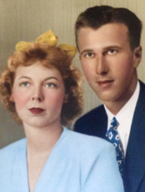

<?xml version="1.0" encoding="UTF-8"?>
<rss xmlns:atom="http://www.w3.org/2005/Atom" version="2.0">
<channel>
    <atom:link href="https://vt.edu/about/buildings/_jcr_content/content/list.xml" rel="self" type="application/rss+xml"/>
    <title>Virginia Tech Buildings</title>
    <link>https://vt.edu/about/buildings.html</link>
    <description></description>
    <language>en</language>
    <pubDate>Tue, 19 Sep 2017 13:39:24 -0400</pubDate>
    <managingEditor></managingEditor>
    <webMaster></webMaster>
    <docs>http://cyber.law.harvard.edu/rss/rss.html</docs>
    <item>
        <title>Agnew Hall</title>
        <link>https://vt.edu/about/buildings/agnew-hall.html</link>
        <description><![CDATA[ Completed in 1940, Agnew Hall housed the main offices of home economics until 1968, when other academic departments moved into the small structure. Biological systems engineering, Communication Network Services, and entomology now occupy the building.  ]]></description>
        <pubDate>Mon, 29 Feb 2016 16:37:39 -0500</pubDate>
        <guid isPermaLink="true">https://vt.edu/about/buildings/agnew-hall.html</guid>
        <enclosure url="https://vt.edu/about/buildings/agnew-hall/_jcr_content/image.img.full.high.jpg" type="image/jpeg"/>
        <latitude>37.22476</latitude>
    	<longitude>-80.42415</longitude>
    	<buildingNumber>109</buildingNumber>
    	<buildingAbbr>AGNEW</buildingAbbr>
    	<buildingBuildDate>1940</buildingBuildDate>
    	<buildingAddress><![CDATA[ 460 West Campus Drive ]]></buildingAddress>
    	<buildingHistory><![CDATA[ 
<div class="vt-text  " data-emptytext="Text"><p>Completed in 1940 at a cost of $42,525, Agnew Hall housed the main offices of home economics until 1968, when other academic departments moved into the small structure. </p>
<p>Initially, it was known as the Home Economics Building. In 1949, the university renamed the building to honor its most famous woman, Ella Graham Agnew. It was the first building on campus to be named for a woman.</p></div>
 ]]></buildingHistory>
    	<namesakeName>Ella Graham Agnew</namesakeName>
    	<namesakeInfo><![CDATA[ 
<div class="vt-text  " data-emptytext="Text"><p>Agnew Hall is named in 1949 for Ella Graham Agnew, the first woman to receive a field appointment from the U.S. Department of Agriculture and an Extension agent at Virginia Agricultural and Mechanical College and Polytechnic Institute (now Virginia Tech) from 1914 to 1919. Her work in Virginia was a precursor to today's 4-H and Extension Homemaker clubs. In 1944, she became the first woman to receive Virginia Tech's Certificate of Merit.</p>


</div>
 ]]></namesakeInfo>
    	<namesakeImage>https://vt.edu/about/buildings/agnew-hall/_jcr_content/namesake-image.img.full.high.jpg</namesakeImage>
        <category>Academic buildings</category>
    </item>
    <item>
        <title>Alphin-Stuart Livestock Teaching Arena</title>
        <link>https://vt.edu/about/buildings/alphin-stuart_livestock_teaching_arena.html</link>
        <description><![CDATA[ Alphin-Stuart Livestock Teaching Arena ]]></description>
        <pubDate>Mon, 29 Feb 2016 16:37:39 -0500</pubDate>
        <guid isPermaLink="true">https://vt.edu/about/buildings/alphin-stuart_livestock_teaching_arena.html</guid>
        <enclosure url="https://vt.edu/about/buildings/alphin-stuart_livestock_teaching_arena/_jcr_content/image.img.full.high.jpg" type="image/jpeg"/>
        <latitude>37.21929</latitude>
    	<longitude>-80.43991</longitude>
    	<buildingNumber>554</buildingNumber>
    	<buildingAbbr>LARNA</buildingAbbr>
    	<buildingBuildDate>2004</buildingBuildDate>
    	<buildingAddress><![CDATA[ 500 Plantation Road ]]></buildingAddress>
    	<buildingHistory><![CDATA[ 
<div class="vt-text  " data-emptytext="Text">The Alphin-Stuart Livestock Teaching Arena was dedicated on April 24, 2004.</div>
 ]]></buildingHistory>
    	<namesakeName>Col. Horace E. Alphin and Patricia Bonsall Stuart</namesakeName>
    	<namesakeInfo><![CDATA[ 
<div class="vt-text  " data-emptytext="Text"><p>The Alphin-Stuart Livestock Teaching Arena is named for benefactors Col. and Mrs. Horace E. Alphin and the late Patricia Bonsall Stuart.</p>
<p>Colonel Horace E. Alphin (DASC '34) is a native of Botetourt County and enjoyed several successful careers. After receiving a commission in the Army reserve and a bachelor's degree in dairy husbandry from Virginia Tech, he earned a master's degree in dairy bacteriology from Tech and spent five years as a North Carolina Extension agent. In 1941, he was called to active duty and began a long, distinguished military career in personnel services. Alphin retired as a full colonel in 1967 and began another career in personnel administration with the Columbia Hospital for Women in Washington, D.C., until his second retirement in 1979. He became a successful land developer in Northern Virginia.</p>
<p>Mrs. Stuart and her husband, Herb, were Arabian horse breeders from Afton, VA. When she was 14, Mrs. Stuart began a lifelong career of showing and judging horses. Her husband was a founding director of the Virginia Horse Council, and she served as secretary and president of the council. In 1991, she was named the council's &quot;Horsewoman of the Year.&quot;</p></div>
 ]]></namesakeInfo>
    	<namesakeImage></namesakeImage>
        <category>Other</category>
    </item>
    <item>
        <title>Ambler Johnston Hall</title>
        <link>https://vt.edu/about/buildings/ambler-johnston-hall.html</link>
        <description><![CDATA[  ]]></description>
        <pubDate>Mon, 29 Feb 2016 16:37:39 -0500</pubDate>
        <guid isPermaLink="true">https://vt.edu/about/buildings/ambler-johnston-hall.html</guid>
        <enclosure url="https://vt.edu/about/buildings/ambler-johnston-hall/_jcr_content/image.img.full.high.jpg" type="image/jpeg"/>
        <latitude>37.22311</latitude>
    	<longitude>-80.42105</longitude>
    	<buildingNumber>032</buildingNumber>
    	<buildingAbbr>A J</buildingAbbr>
    	<buildingBuildDate>1969</buildingBuildDate>
    	<buildingAddress><![CDATA[ 700, 720 Washington St. SW ]]></buildingAddress>
    	<buildingHistory><![CDATA[ 
<div class="vt-text  " data-emptytext="Text"><p>The original construction started in 1967, the building was partly occupied in fall 1968, and it was completely occupied in 1969. </p></div>
 ]]></buildingHistory>
    	<namesakeName>J. Ambler Johnston</namesakeName>
    	<namesakeInfo><![CDATA[ 
<div class="vt-text  " data-emptytext="Text"><p>Ambler Johnston Hall was named in 1968 for 1904 alumnus James Markham Ambler Johnston, a lifetime supporter of his alma mater, president of the Alumni Association, and co-founder of Carneal and Johnston, an architectural-engineering firm that designed many of the Collegiate Gothic buildings on campus. A Civil War authority, he helped purchase battlefields around Richmond, Va., and initiated the first cast-iron markers to identify points of interest on battlefields. He received numerous awards for preserving historic sites in Virginia.</p>


</div>
 ]]></namesakeInfo>
    	<namesakeImage>https://vt.edu/about/buildings/ambler-johnston-hall/_jcr_content/namesake-image.img.full.high.jpg</namesakeImage>
        <category>Residence Halls</category>
    </item>
    <item>
        <title>Architecture Annex</title>
        <link>https://vt.edu/about/buildings/architecture-annex.html</link>
        <description><![CDATA[  ]]></description>
        <pubDate>Mon, 29 Feb 2016 16:37:39 -0500</pubDate>
        <guid isPermaLink="true">https://vt.edu/about/buildings/architecture-annex.html</guid>
        <enclosure url="https://vt.edu/about/buildings/architecture-annex/_jcr_content/image.img.full.high.jpg" type="image/jpeg"/>
        <latitude>37.2286</latitude>
    	<longitude>-80.41629</longitude>
    	<buildingNumber>368</buildingNumber>
    	<buildingAbbr>AA</buildingAbbr>
    	<buildingBuildDate>1916</buildingBuildDate>
    	<buildingAddress><![CDATA[ 140 Otey St. NW ]]></buildingAddress>
    	<buildingHistory><![CDATA[ 
<div class="vt-text  " data-emptytext="Text"><p>The building was erected in 1916 as Blacksburg High School. It was purchased by the university at auction in 1965 as part of three-building package totaling $310,000. Also purchased were the neighboring Media Building and the Media Annex. The building was renovated after a December 1997 fire damaged all three floors.</p></div>
 ]]></buildingHistory>
    	<namesakeName></namesakeName>
    	<namesakeInfo><![CDATA[ 
 ]]></namesakeInfo>
    	<namesakeImage></namesakeImage>
        <category>Academic buildings</category>
    </item>
    <item>
        <title>Armory</title>
        <link>https://vt.edu/about/buildings/armory.html</link>
        <description><![CDATA[  ]]></description>
        <pubDate>Mon, 29 Feb 2016 16:37:39 -0500</pubDate>
        <guid isPermaLink="true">https://vt.edu/about/buildings/armory.html</guid>
        <enclosure url="https://vt.edu/about/buildings/armory/_jcr_content/image.img.full.high.jpg" type="image/jpeg"/>
        <latitude>37.22932</latitude>
    	<longitude>-80.41592</longitude>
    	<buildingNumber>269</buildingNumber>
    	<buildingAbbr>ARMRY</buildingAbbr>
    	<buildingBuildDate>1936</buildingBuildDate>
    	<buildingAddress><![CDATA[ 201 Draper Road NW ]]></buildingAddress>
    	<buildingHistory><![CDATA[ 
<div class="vt-text  " data-emptytext="Text"><p>The Armory, built in 1936, is one of Blacksburg's historic buildings and a former community gymnasium. </p></div>
 ]]></buildingHistory>
    	<namesakeName></namesakeName>
    	<namesakeInfo><![CDATA[ 
 ]]></namesakeInfo>
    	<namesakeImage></namesakeImage>
        <category>Academic buildings</category>
    </item>
    <item>
        <title>Art and Design Learning Center</title>
        <link>https://vt.edu/about/buildings/art-and-design-learning-center.html</link>
        <description><![CDATA[  ]]></description>
        <pubDate>Mon, 29 Feb 2016 16:37:39 -0500</pubDate>
        <guid isPermaLink="true">https://vt.edu/about/buildings/art-and-design-learning-center.html</guid>
        <enclosure url="https://vt.edu/about/buildings/art-and-design-learning-center/_jcr_content/image.img.full.high.jpg" type="image/jpeg"/>
        <latitude>37.2317</latitude>
    	<longitude>-80.42072</longitude>
    	<buildingNumber>196</buildingNumber>
    	<buildingAbbr>ART C</buildingAbbr>
    	<buildingBuildDate></buildingBuildDate>
    	<buildingAddress><![CDATA[ 355 Old Turner St. ]]></buildingAddress>
    	<buildingHistory><![CDATA[ 
<div class="vt-text  " data-emptytext="Text"><p>The building was erected in 1931 as the Mechanical Engineering Laboratory. It was renamed the Printing Plant when the print shop moved in from the First Academic Building in June 1953. The building was renovated in 1997 after the print shop relocated and got its current name in 1998.</p></div>
 ]]></buildingHistory>
    	<namesakeName></namesakeName>
    	<namesakeInfo><![CDATA[ 
 ]]></namesakeInfo>
    	<namesakeImage></namesakeImage>
        <category>Academic buildings</category>
    </item>
    <item>
        <title>Barringer Hall</title>
        <link>https://vt.edu/about/buildings/barringer-hall.html</link>
        <description><![CDATA[  ]]></description>
        <pubDate>Mon, 29 Feb 2016 16:37:39 -0500</pubDate>
        <guid isPermaLink="true">https://vt.edu/about/buildings/barringer-hall.html</guid>
        <enclosure url="https://vt.edu/about/buildings/barringer-hall/_jcr_content/image.img.full.high.jpg" type="image/jpeg"/>
        <latitude>37.22619</latitude>
    	<longitude>-80.4168</longitude>
    	<buildingNumber>026</buildingNumber>
    	<buildingAbbr>BAR</buildingAbbr>
    	<buildingBuildDate>1962</buildingBuildDate>
    	<buildingAddress><![CDATA[ 240 Kent St. ]]></buildingAddress>
    	<buildingHistory><![CDATA[ 
<div class="vt-text  " data-emptytext="Text"><p>Barringer Hall was built in 1962 for $729,244. It was dedicated on May 16, 1966. </p></div>
 ]]></buildingHistory>
    	<namesakeName>Paul Brandon Barringer</namesakeName>
    	<namesakeInfo><![CDATA[ 
<div class="vt-text  " data-emptytext="Text"><p>Barringer Hall was named in 1962 for Dr. Paul B. Barringer, president from 1907 to 1913. Known affectionately as &quot;Oom Paul&quot; by the students, the medical doctor was a man ahead of his time. He built up the agriculture program, broadened the scope of the departments, and improved student accommodations. Unfortunately, he incurred the wrath of alumni, the engineering faculty, and others and resigned, returning to Charlottesville, Va., where he practiced medicine.</p>


</div>
 ]]></namesakeInfo>
    	<namesakeImage>https://vt.edu/about/buildings/barringer-hall/_jcr_content/namesake-image.img.full.high.jpg</namesakeImage>
        <category>Residence Halls</category>
    </item>
    <item>
        <title>Bishop-Favrao Hall</title>
        <link>https://vt.edu/about/buildings/bishop-favrao_hall.html</link>
        <description><![CDATA[  ]]></description>
        <pubDate>Mon, 29 Feb 2016 16:37:39 -0500</pubDate>
        <guid isPermaLink="true">https://vt.edu/about/buildings/bishop-favrao_hall.html</guid>
        <enclosure url="https://vt.edu/about/buildings/bishop-favrao_hall/_jcr_content/image.img.full.high.jpg" type="image/jpeg"/>
        <latitude>37.23005</latitude>
    	<longitude>-80.42548</longitude>
    	<buildingNumber>173</buildingNumber>
    	<buildingAbbr>BFH</buildingAbbr>
    	<buildingBuildDate>2007</buildingBuildDate>
    	<buildingAddress><![CDATA[ 1345 Perry St. ]]></buildingAddress>
    	<buildingHistory><![CDATA[ 
<div class="vt-text  " data-emptytext="Text"><p>Bishop-Favrao Hall was completed in December 2007.</p></div>
 ]]></buildingHistory>
    	<namesakeName>Richard Bishop and William Favrao</namesakeName>
    	<namesakeInfo><![CDATA[ 
<div class="vt-text  " data-emptytext="Text"><p>Bishop-Favrao Hall is named for Richard Bishop and William Favrao. Bishop is a 1967 alumnus, founder of Columbia Builders, a member of College of Architecture and Urban Studies Advisory Council and the Building Construction Advisory Board, and a key alumni donor for the building. William Favrao is a founding member of the Associated Schools of Construction and founder of the university's building construction program and head of the department until his death in 1977.</p></div>
 ]]></namesakeInfo>
    	<namesakeImage>https://vt.edu/about/buildings/bishop-favrao_hall/_jcr_content/namesake-image.img.full.high.jpg</namesakeImage>
        <category>Academic buildings</category>
    </item>
    <item>
        <title>Burchard Hall</title>
        <link>https://vt.edu/about/buildings/burchard-hall.html</link>
        <description><![CDATA[  ]]></description>
        <pubDate>Mon, 29 Feb 2016 16:34:59 -0500</pubDate>
        <guid isPermaLink="true">https://vt.edu/about/buildings/burchard-hall.html</guid>
        <enclosure url="https://vt.edu/about/buildings/burchard-hall/_jcr_content/image.img.full.high.jpg" type="image/jpeg"/>
        <latitude>37.22958</latitude>
    	<longitude>-80.42441</longitude>
    	<buildingNumber>171</buildingNumber>
    	<buildingAbbr>BURCH</buildingAbbr>
    	<buildingBuildDate>1998</buildingBuildDate>
    	<buildingAddress><![CDATA[ 1327 Perry St. ]]></buildingAddress>
    	<buildingHistory><![CDATA[ 
<div class="vt-text  " data-emptytext="Text"><p>Burchard Hall was completed in 1998. It was designed to address an acute shortage of space for the architecture and industrial design programs in the School of Architecture + Design.</p></div>
 ]]></buildingHistory>
    	<namesakeName>Charles Henry Burchard</namesakeName>
    	<namesakeInfo><![CDATA[ 
<div class="vt-text  " data-emptytext="Text"><p>Burchard Hall is named for Charles Burchard, founding dean of the College of Architecture and Urban Studies from 1964 to 1979. The university recognized him with the designation University Professor and the University Distinguished Achievement Award. He was a Fellow in the American Institute of Architects, recipient of the national Award for Excellence in Architectural Education and the Virginia Cultural Laureate Award, president of the Association of Collegiate Schools of Architecture, and director of the National Architectural Accrediting Board.</p></div>
 ]]></namesakeInfo>
    	<namesakeImage></namesakeImage>
        <category>Academic buildings</category>
    </item>
    <item>
        <title>Burrows-Burleson Tennis Center</title>
        <link>https://vt.edu/about/buildings/burrows-burleson-tennis-center.html</link>
        <description><![CDATA[  ]]></description>
        <pubDate>Tue, 05 Dec 2017 16:15:31 -0500</pubDate>
        <guid isPermaLink="true">https://vt.edu/about/buildings/burrows-burleson-tennis-center.html</guid>
        <enclosure url="https://vt.edu/about/buildings/burrows-burleson-tennis-center/_jcr_content/image.img.full.high.jpg" type="image/jpeg"/>
        <latitude>37.21483</latitude>
    	<longitude>-80.4193</longitude>
    	<buildingNumber>183</buildingNumber>
    	<buildingAbbr>TC</buildingAbbr>
    	<buildingBuildDate>1975</buildingBuildDate>
    	<buildingAddress><![CDATA[ 570 Beamer Way ]]></buildingAddress>
    	<buildingHistory><![CDATA[ 
<div class="vt-text  " data-emptytext="Text"><p>Rector Tennis Pavilion was built in 1975. The Burrows-Burleson wing was added in 1992.</p></div>
 ]]></buildingHistory>
    	<namesakeName>Burrows-Burleson Families</namesakeName>
    	<namesakeInfo><![CDATA[ 
<div class="vt-text  " data-emptytext="Text"><p>The center was made possible by gifts from Dave and Betty Burrows of Roanoke; their son, Jack, and his wife, Lee, of Roanoke; and their daughter, Beverly, and her husband, Bob Burleson, of Tallahassee, Fla. In addition, others who provided support for the new center were Mrs. Clifton P. Gaunt, Mr. and Mrs. Leo M. McMahon, Mr. and Mrs. Joseph H. Hoge III, Mrs. Carol B. Rector, and Mr. and Mrs. Charles W. Rector Jr.</p></div>
 ]]></namesakeInfo>
    	<namesakeImage></namesakeImage>
        <category>Athletic facilities</category>
    </item>
    <item>
        <title>Burruss Hall</title>
        <link>https://vt.edu/about/buildings/burruss-hall.html</link>
        <description><![CDATA[  ]]></description>
        <pubDate>Mon, 29 Feb 2016 16:37:39 -0500</pubDate>
        <guid isPermaLink="true">https://vt.edu/about/buildings/burruss-hall.html</guid>
        <enclosure url="https://vt.edu/about/buildings/burruss-hall/_jcr_content/image.img.full.high.jpg" type="image/jpeg"/>
        <latitude>37.229</latitude>
    	<longitude>-80.42371</longitude>
    	<buildingNumber>176</buildingNumber>
    	<buildingAbbr>BUR</buildingAbbr>
    	<buildingBuildDate>1936</buildingBuildDate>
    	<buildingAddress><![CDATA[ 800 Drillfield Drive ]]></buildingAddress>
    	<buildingHistory><![CDATA[ 
<div class="vt-text  " data-emptytext="Text"><p>Virginia Tech’s administration building, Burruss Hall consists of the original building, completed in 1936; a west wing and rear addition, built in 1968; and an east wing, added in 1970. Commencement ceremonies were held in the building's 3,003-seat auditorium for years, beginning in 1936. An electronic carillon was installed in 1958. The first and second floors were renovated in 2007 for use by the College of Architecture and Urban Studies. The facility was originally known as the Teaching and Administration Building.</p></div>
 ]]></buildingHistory>
    	<namesakeName>Julian Ashby Burruss</namesakeName>
    	<namesakeInfo><![CDATA[ 
<div class="vt-text  " data-emptytext="Text"><p>Burruss Hall is named for eighth president Julian Ashby Burruss. In the 1920s, he admitted women as full-time students and cut the four-year military requirement for male students to two years, setting the stage for a larger civilian student body. He also organized a chapter of Phi Kappa Phi, put off-campus living to the test, brought athletics under the supervision of college authorities, and established the Engineering Experiment Station and Engineering Extension Division. Burruss was president from 1919 to 1945.</p></div>
 ]]></namesakeInfo>
    	<namesakeImage>https://vt.edu/about/buildings/burruss-hall/_jcr_content/namesake-image.img.full.high.jpg</namesakeImage>
        <category>Administrative buildings</category>
    </item>
    <item>
        <title>Campbell Hall</title>
        <link>https://vt.edu/about/buildings/campbell-hall.html</link>
        <description><![CDATA[  ]]></description>
        <pubDate>Mon, 29 Feb 2016 16:37:39 -0500</pubDate>
        <guid isPermaLink="true">https://vt.edu/about/buildings/campbell-hall.html</guid>
        <enclosure url="https://vt.edu/about/buildings/campbell-hall/_jcr_content/image.img.full.high.jpg" type="image/jpeg"/>
        <latitude>37.2262</latitude>
    	<longitude>-80.42153</longitude>
    	<buildingNumber>036</buildingNumber>
    	<buildingAbbr>CAM</buildingAbbr>
    	<buildingBuildDate>1940</buildingBuildDate>
    	<buildingAddress><![CDATA[ 300, 320 Drillfield Drive ]]></buildingAddress>
    	<buildingHistory><![CDATA[ 
<div class="vt-text  " data-emptytext="Text"><div><p>Campbell Hall is composed of two wings: the west (or main) wing, originally known as Barracks No. 8 and completed in 1930, and the east wing, originally known as Barracks No. 9 and completed in 1940. It was known as the Stone Dormitory or Civilian Dormitory until it was named in 1952. </p><p>The building was closed at the end of fall 1966 for renovation, which was completed in 1968.</p></div></div>
 ]]></buildingHistory>
    	<namesakeName>Theodorick Pryor Campbell</namesakeName>
    	<namesakeInfo><![CDATA[ 
<div class="vt-text  " data-emptytext="Text"><p>Campbell Hall was named for Theodorick Pryor Campbell, who worked at Virginia Agricultural and Mechanical College and Polytechnic Institute (now Virginia Tech) from 1889 to 1924 as professor of modern languages, Academic Department head, dean of the general faculty, and dean of the college. Campbell also was appointed with another professor to serve jointly as the president on campus during the president's leave of absence.</p></div>
 ]]></namesakeInfo>
    	<namesakeImage>https://vt.edu/about/buildings/campbell-hall/_jcr_content/namesake-image.img.full.high.jpg</namesakeImage>
        <category>Residence Halls</category>
    </item>
    <item>
        <title>Carol M. Newman Library</title>
        <link>https://vt.edu/about/buildings/newman-library.html</link>
        <description><![CDATA[  ]]></description>
        <pubDate>Mon, 29 Feb 2016 16:38:52 -0500</pubDate>
        <guid isPermaLink="true">https://vt.edu/about/buildings/newman-library.html</guid>
        <enclosure url="https://vt.edu/about/buildings/newman-library/_jcr_content/image.img.full.high.jpg" type="image/jpeg"/>
        <latitude>37.22876</latitude>
    	<longitude>-80.41924</longitude>
    	<buildingNumber>177</buildingNumber>
    	<buildingAbbr>LIBR</buildingAbbr>
    	<buildingBuildDate>1955</buildingBuildDate>
    	<buildingAddress><![CDATA[ 560 Drillfield Drive ]]></buildingAddress>
    	<buildingHistory><![CDATA[ 
<div class="vt-text  " data-emptytext="Text"><p>The original Carol M. Newman Library was completed and opened in 1955 with $1 million donated by the Old Dominion Foundation, headed by Paul Mellon, and another $1 million approved by the Virginia General Assembly. Renovation and a six-story addition were completed in 1981. The lobby was renovated in 2009 to accommodate a coffee shop. </p></div>
 ]]></buildingHistory>
    	<namesakeName>Carol Montgomery Newman</namesakeName>
    	<namesakeInfo><![CDATA[ 
<div class="vt-text  " data-emptytext="Text"><p>The main library is named for Carol Montgomery Newman, professor, dean of the Academic Department, and head of the English department between 1903 and 1941. Known as the godfather of extracurricular activities, Newman was secretary of the Athletic Council, chaired the college social committee and the YMCA advisory board, and served on the library committee. A popular English and rhetoric teacher, writer, and eloquent speaker, he considered books an invaluable element in living.</p>


</div>
 ]]></namesakeInfo>
    	<namesakeImage>https://vt.edu/about/buildings/newman-library/_jcr_content/namesake-image.img.full.high.jpg</namesakeImage>
        <category>Other</category>
    </item>
    <item>
        <title>Cassell Coliseum</title>
        <link>https://vt.edu/about/buildings/cassell-coliseum.html</link>
        <description><![CDATA[  ]]></description>
        <pubDate>Mon, 29 Feb 2016 16:21:52 -0500</pubDate>
        <guid isPermaLink="true">https://vt.edu/about/buildings/cassell-coliseum.html</guid>
        <enclosure url="https://vt.edu/about/buildings/cassell-coliseum/_jcr_content/image.img.full.high.jpg" type="image/jpeg"/>
        <latitude>37.22245</latitude>
    	<longitude>-80.41893</longitude>
    	<buildingNumber>187</buildingNumber>
    	<buildingAbbr>COL</buildingAbbr>
    	<buildingBuildDate>1961</buildingBuildDate>
    	<buildingAddress><![CDATA[ 675 Washington St. SW ]]></buildingAddress>
    	<buildingHistory><![CDATA[ 
<div class="vt-text  " data-emptytext="Text"><p>Construction for the main portion of Cassell Coliseum began in 1961. It was completed in December 1964 at a cost of $2.7 million. Cassell was first used on Jan. 3, 1962 -- before its completion -- for a basketball game with Alabama, which Virginia Tech won 91-67.  In addition to athletic games, the coliseum has been used for commencement exercises, presidential inaugurations, concerts, speeches, and tournaments.</p>
<p>Originally known as Student Activities and Physical Education Building, it was renamed Cassell Coliseum on Nov. 5, 1976. Additions were completed in 1984 and 1998. </p></div>
 ]]></buildingHistory>
    	<namesakeName>Stuart K. Cassell</namesakeName>
    	<namesakeInfo><![CDATA[ 
<div class="vt-text  " data-emptytext="Text"><p>The coliseum honors the memory of 1932 alumnus Stuart Kent Cassell, an agricultural Extension instructor (1933-41), chief business officer (1945-66), and vice president for administration (1966-76). Highly esteemed and visionary, Cassell steered the physical growth of Virginia Polytechnic Institute (now Virginia Tech) into a major university. He helped run VPI when one president became ill and was instrumental in organizing the VPI Educational Foundation.</p>


</div>
 ]]></namesakeInfo>
    	<namesakeImage>https://vt.edu/about/buildings/cassell-coliseum/_jcr_content/namesake-image.img.full.high.jpg</namesakeImage>
        <category>Athletic facilities</category>
    </item>
    <item>
        <title>Cheatham Hall</title>
        <link>https://vt.edu/about/buildings/cheatham-hall.html</link>
        <description><![CDATA[  ]]></description>
        <pubDate>Mon, 29 Feb 2016 16:37:39 -0500</pubDate>
        <guid isPermaLink="true">https://vt.edu/about/buildings/cheatham-hall.html</guid>
        <enclosure url="https://vt.edu/about/buildings/cheatham-hall/_jcr_content/image.img.full.high.jpg" type="image/jpeg"/>
        <latitude>37.22386</latitude>
    	<longitude>-80.42265</longitude>
    	<buildingNumber>112</buildingNumber>
    	<buildingAbbr>JCH</buildingAbbr>
    	<buildingBuildDate>1971</buildingBuildDate>
    	<buildingAddress><![CDATA[ 310 West Campus Drive ]]></buildingAddress>
    	<buildingHistory><![CDATA[ 
<div class="vt-text  " data-emptytext="Text"><div><p>The first phase of Cheatham Hall was built in 1972, to provide new classroom, laboratory, and office space for the Department of Forestry and Wildlife Resources, then a division of the College of Agriculture and Life Sciences. Constructed at a cost of $1.67 million, the building offered classrooms and offices, all of which boasted paneled walls of different species donated by forest industry companies. The building was dedicated May 5, 1972.</p><p>The second phase was completed in 2003. The three-story addition was attached to the south end of the building and added an entranceway with a lobby and gathering area. </p></div></div>
 ]]></buildingHistory>
    	<namesakeName>Julian North Cheatham</namesakeName>
    	<namesakeInfo><![CDATA[ 
<div class="vt-text  " data-emptytext="Text"><p>Cheatham Hall is named for Julian North Cheatham, executive vice president and a director of Georgia-Pacific Corp. After graduating from Virginia Agricultural and Mechanical College and Polytechnic Institute (now Virginia Tech) in 1933, he began working for the Georgia Hardwood Lumber Co., started by his brother. The company grew into the giant corporation Georgia-Pacific. In 1983 Virginia Tech presented Cheatham with its prestigious William H. Ruffner Medal in recognition of his many accomplishments.</p></div>
 ]]></namesakeInfo>
    	<namesakeImage></namesakeImage>
        <category>Academic buildings</category>
    </item>
    <item>
        <title>Classroom Building</title>
        <link>https://vt.edu/about/buildings/classroom-building.html</link>
        <description><![CDATA[  ]]></description>
        <pubDate>Mon, 14 Nov 2016 15:29:42 -0500</pubDate>
        <guid isPermaLink="true">https://vt.edu/about/buildings/classroom-building.html</guid>
        <enclosure url="https://vt.edu/about/buildings/classroom-building/_jcr_content/namesake-parsys/adaptiveimage.img.full.high.png" type="image/png"/>
        <latitude>37.229270</latitude>
    	<longitude>-80.427207</longitude>
    	<buildingNumber></buildingNumber>
    	<buildingAbbr>NCB</buildingAbbr>
    	<buildingBuildDate>2016</buildingBuildDate>
    	<buildingAddress><![CDATA[ 1455 Perry Street ]]></buildingAddress>
    	<buildingHistory><![CDATA[ 
 ]]></buildingHistory>
    	<namesakeName></namesakeName>
    	<namesakeInfo><![CDATA[ 
<div class="vt-text  " data-emptytext="Text"><p>Located at the corner of Perry Street and West Campus Drive, the $42 million three-story, 73,400-square-foot building contains 15 state-of-the-art classrooms and four interdisciplinary teaching laboratories with seats for more than 1,450 students, as well as study rooms and group meeting space. The new learning spaces are designed to support increasingly interactive and technology-driven learning experiences.</p>

<p>The classrooms have features that include moveable furnishings, wall-mounted writing spaces, and multiple screens for projecting shared material and student work. Some rooms were configured as SCALE-UP classrooms, a specific design that facilitates team-based, active learning as an alternative to lectures, even for large-enrollment classes.</p>

<p>The building includes rooms that can be subdivided and readily reconfigured as the instructional needs, technologies, and teaching methods change over time.</p>

<p>The new building was constructed to LEED certification standards, a designation given by the U.S. Green Building Council for structures that use the very best in energy and environmental design.</p>

<p>The location of the Classroom Building adjacent to other instructional buildings is intended to minimize travel time between classes for students and faculty. The location is also convenient to students commuting from off-campus.</p>

<p>EYP Architecture &amp; Engineering of Washington, D.C., designed the building, and WM Jordan Company Inc. of Newport News was the construction manager.</p>


</div> 
<div class="vt-image  caption ">
<figure>
  <picture>   
     
      
  </picture><figcaption class="vt-image-caption">The Classroom Building is located on the corner of West Campus Drive and Perry Street. </figcaption>
</figure>
</div>

 ]]></namesakeInfo>
    	<namesakeImage>https://vt.edu/about/buildings/classroom-building/_jcr_content/namesake-image.img.full.high.jpg</namesakeImage>
        
    </item>
    <item>
        <title>Cochrane Hall</title>
        <link>https://vt.edu/about/buildings/cochrane-hall.html</link>
        <description><![CDATA[  ]]></description>
        <pubDate>Mon, 29 Feb 2016 16:47:51 -0500</pubDate>
        <guid isPermaLink="true">https://vt.edu/about/buildings/cochrane-hall.html</guid>
        <enclosure url="https://vt.edu/about/buildings/cochrane-hall/_jcr_content/image.img.full.high.jpg" type="image/jpeg"/>
        <latitude>37.22265</latitude>
    	<longitude>-80.42189</longitude>
    	<buildingNumber>038</buildingNumber>
    	<buildingAbbr>CHRNE</buildingAbbr>
    	<buildingBuildDate>1982</buildingBuildDate>
    	<buildingAddress><![CDATA[ 770 Washington St. SW ]]></buildingAddress>
    	<buildingHistory><![CDATA[ 
<div class="vt-text  " data-emptytext="Text"><p>Cochrane Hall was built in 1983 and dedicated in November 1988. </p>
<p>Cochrane Dining Hall originally opened as part of the New Undergraduate Facility in 1982. It closed in spring 1997 to make way for a major renovation. The facility reopened in January 1999 with a new name, West End Market. It was the first true marketplace on a university campus in the United States.<br /></p></div>
 ]]></buildingHistory>
    	<namesakeName>James H. Cochrane Jr.</namesakeName>
    	<namesakeInfo><![CDATA[ 
<div class="vt-text  " data-emptytext="Text"><p>In 1988, Cochrane Hall was named for the family of James H. Cochrane Jr., a 1984 graduate and university benefactor. The president of the Rockville Development Corporation, Cochrane served on the boards of the Virginia Tech Athletic Fund, Museum of the Confederacy, and American Frontier Culture Museum. He helped found Tech's chapter of Kappa Alpha Order and was elected to the fraternity's S.Z. Ammen Province Court of Honor.<br />
</p>


</div>
 ]]></namesakeInfo>
    	<namesakeImage>https://vt.edu/about/buildings/cochrane-hall/_jcr_content/namesake-image.img.full.high.gif</namesakeImage>
        <category>Residence Halls</category>
    </item>
    <item>
        <title>Cowgill Hall</title>
        <link>https://vt.edu/about/buildings/cowgill-hall.html</link>
        <description><![CDATA[  ]]></description>
        <pubDate>Mon, 29 Feb 2016 16:37:39 -0500</pubDate>
        <guid isPermaLink="true">https://vt.edu/about/buildings/cowgill-hall.html</guid>
        <enclosure url="https://vt.edu/about/buildings/cowgill-hall/_jcr_content/image.img.full.high.jpg" type="image/jpeg"/>
        <latitude>37.22992</latitude>
    	<longitude>-80.42474</longitude>
    	<buildingNumber>172</buildingNumber>
    	<buildingAbbr>CO</buildingAbbr>
    	<buildingBuildDate>1969</buildingBuildDate>
    	<buildingAddress><![CDATA[ 1325 Perry St. ]]></buildingAddress>
    	<buildingHistory><![CDATA[ 
<div class="vt-text  " data-emptytext="Text"><p>Construction began in 1966 on Cowgill Hall to house academics and administrative offices of the College of Architecture and Urban Studies. Completed in 1969, the building was the first major departure on campus from the traditional Collegiate Gothic architecture employed since the early 1900s.  It is also the first building constructed expressly for architecture use.</p>
<p>It was briefly occupied in 1970 by student protesters.</p></div>
 ]]></buildingHistory>
    	<namesakeName>Clinton Harriman Cowgill</namesakeName>
    	<namesakeInfo><![CDATA[ 
<div class="vt-text  " data-emptytext="Text"><p>Cowgill Hall honors the memory of Clinton Harriman Cowgill, founder of architecture studies at Virginia Tech and head of the Department of Architectural Engineering from 1928 to 1956. A Fellow in the American Institute of Architects, Cowgill designed several Blacksburg, Va., houses listed on the National Register of Historic Places, developed plans for campus growth, and designed a few campus buildings. His book <i>Architecture Practice</i> had an impact on the architecture profession nationwide.</p></div>
 ]]></namesakeInfo>
    	<namesakeImage></namesakeImage>
        <category>Academic buildings</category>
    </item>
    <item>
        <title>Dairy Science Complex - Kentland Farm</title>
        <link>https://vt.edu/about/buildings/dairy-complex-kentland.html</link>
        <description><![CDATA[ Dairy Science Center - Kentland Farm ]]></description>
        <pubDate>Wed, 01 Aug 2018 20:08:04 -0400</pubDate>
        <guid isPermaLink="true">https://vt.edu/about/buildings/dairy-complex-kentland.html</guid>
        <enclosure url="https://vt.edu/about/buildings/dairy-complex-kentland/_jcr_content/content/adaptiveimage_1455662793185.img.full.high.jpg" type="image/jpeg"/>
        <latitude></latitude>
    	<longitude></longitude>
    	<buildingNumber>multiple</buildingNumber>
    	<buildingAbbr>multiple</buildingAbbr>
    	<buildingBuildDate>2016</buildingBuildDate>
    	<buildingAddress><![CDATA[ 5250 Whitethorne Road ]]></buildingAddress>
    	<buildingHistory><![CDATA[ 
<div class="vt-text  " data-emptytext="Text"><p>A grand opening ceremony was July 17, 2015.</p>

<p>The move from the former dairy science complex on Southgate Drive was prompted by the expansion of the Virginia Tech/Montgomery Executive Airport, the Virginia Tech Corporate Research Center, and a new U.S. 460 interchange.</p>

<p>Phase I of construction was a $14 million project that was funded by Virginia Tech with nongeneral funds. The Virginia General Assembly has approved $7.6 million in funding for Phase II, which will include a demonstration facility near Plantation Road, an applied reproductive physiology facility adjacent to the Virginia-Maryland College of Veterinary Medicine, and an intensive metabolism research facility at the Kentland Farm complex.</p>

<p>Construction on the Phase II of the dairy relocation occurred in 2016.</p>


</div>
 ]]></buildingHistory>
    	<namesakeName></namesakeName>
    	<namesakeInfo><![CDATA[ 
 ]]></namesakeInfo>
    	<namesakeImage></namesakeImage>
        
    </item>
    <item>
        <title>Davidson Hall</title>
        <link>https://vt.edu/about/buildings/davidson-hall.html</link>
        <description><![CDATA[  ]]></description>
        <pubDate>Mon, 29 Feb 2016 16:37:39 -0500</pubDate>
        <guid isPermaLink="true">https://vt.edu/about/buildings/davidson-hall.html</guid>
        <enclosure url="https://vt.edu/about/buildings/davidson-hall/_jcr_content/image.img.full.high.jpg" type="image/jpeg"/>
        <latitude>37.22674</latitude>
    	<longitude>-80.42521</longitude>
    	<buildingNumber>156</buildingNumber>
    	<buildingAbbr>DAV</buildingAbbr>
    	<buildingBuildDate>1928</buildingBuildDate>
    	<buildingAddress><![CDATA[ 1040 Drillfield Drive ]]></buildingAddress>
    	<buildingHistory><![CDATA[ 
<div class="vt-text  " data-emptytext="Text"><p>The original portions of Davidson Hall were completed in 1928 with other sections added in 1933 and 1938. The building was renovated in 1964, in 1965, and again in 2014.</p></div>
 ]]></buildingHistory>
    	<namesakeName>Robert James Davidson</namesakeName>
    	<namesakeInfo><![CDATA[ 
<div class="vt-text  " data-emptytext="Text"><p>Davidson Hall is named for Robert James Davidson, who came from South Carolina College in 1891, beginning as Adjunct Professor of Chemistry and Chemist to the Virginia Agricultural Experiment Station. At the close of the session of 1893-1894, he was advanced to a full professorship. Ten years later, he was made Dean of the Department of Applied Sciences. He was a member of the Washington Academy of Science, a fellow of the American Association for the Advancement of Science, a member of the American Chemical Society, and a member of the National Association of Official Agricultural Chemists, serving as its President in 1903. In 1909, he was a delegate to the International Congress of Applied Chemistry at London. Davidson died very suddenly at his home on the campus of the Institute on the morning of Sunday, December 19, 1915. In 1927, as the new building was nearing completion, a recommendation was made to the Board of Visitors and approved to name the building for Davidson. As noted in the report of the president at the time, &quot;He was respected and admired by his colleagues, he was held in affection by his students, and he was greatly appreciated by the farmers of Virginia to whom he was a valuable advisor.&quot;</p></div>
 ]]></namesakeInfo>
    	<namesakeImage>https://vt.edu/about/buildings/davidson-hall/_jcr_content/namesake-image.img.full.high.jpg</namesakeImage>
        <category>Academic buildings</category>
    </item>
    <item>
        <title>Derring Hall</title>
        <link>https://vt.edu/about/buildings/derring-hall.html</link>
        <description><![CDATA[  ]]></description>
        <pubDate>Fri, 27 Jan 2017 12:58:54 -0500</pubDate>
        <guid isPermaLink="true">https://vt.edu/about/buildings/derring-hall.html</guid>
        <enclosure url="https://vt.edu/about/buildings/derring-hall/_jcr_content/image.img.full.high.jpg" type="image/jpeg"/>
        <latitude>37.22908</latitude>
    	<longitude>-80.4256</longitude>
    	<buildingNumber>155</buildingNumber>
    	<buildingAbbr>DER</buildingAbbr>
    	<buildingBuildDate>1969</buildingBuildDate>
    	<buildingAddress><![CDATA[ 926 West Campus Drive ]]></buildingAddress>
    	<buildingHistory><![CDATA[ 
<div class="vt-text  " data-emptytext="Text"><p>Derring Hall's construction began in 1967 and was completed in 1969.</p></div>
 ]]></buildingHistory>
    	<namesakeName>Paul Neyron Derring</namesakeName>
    	<namesakeInfo><![CDATA[ 
<div class="vt-text  " data-emptytext="Text"><p>Derring Hall was named in 1967 for Paul Neyron Derring, who served as YMCA secretary, director of religious activities, and student activities building manager from 1918 to 1964. Blind since the age of 13, Derring made countless contributions to the college, served on the State Commission for the Visually Handicapped, led a fundraising effort to construct a new Blacksburg Baptist Church building, and served on the Blacksburg Town Council. He was a popular administrator among the students.</p></div>
 ]]></namesakeInfo>
    	<namesakeImage></namesakeImage>
        <category>Academic buildings</category>
    </item>
    <item>
        <title>Dietrick Hall</title>
        <link>https://vt.edu/about/buildings/dietrick-hall.html</link>
        <description><![CDATA[  ]]></description>
        <pubDate>Mon, 29 Feb 2016 16:37:39 -0500</pubDate>
        <guid isPermaLink="true">https://vt.edu/about/buildings/dietrick-hall.html</guid>
        <enclosure url="https://vt.edu/about/buildings/dietrick-hall/_jcr_content/image.img.full.high.jpg" type="image/jpeg"/>
        <latitude>37.22454</latitude>
    	<longitude>-80.42111</longitude>
    	<buildingNumber>189</buildingNumber>
    	<buildingAbbr>DTRIK</buildingAbbr>
    	<buildingBuildDate>1970</buildingBuildDate>
    	<buildingAddress><![CDATA[ 285 Ag Quad Lane ]]></buildingAddress>
    	<buildingHistory><![CDATA[ 
<div class="vt-text  " data-emptytext="Text">Construction on Dietrick Hall began 1968 and was completed in 1970.</div>
 ]]></buildingHistory>
    	<namesakeName>Leander B. Dietrick</namesakeName>
    	<namesakeInfo><![CDATA[ 
<div class="vt-text  " data-emptytext="Text"><p>Dietrick Dining Center was named in 1968 for Leander Burton Dietrick, a professor and specialist in horticulture, Extension administrative assistant, Extension director, and dean of agriculture from 1923 to 1962. Known for his humorous anecdotes, &quot;Deet&quot; Dietrick established several academic departments at Virginia Tech, added Extension specialists in new fields, and worked through Extension to improve the status of Virginia's professional women. Among his many honors were the state Agribusiness Award and Man of the Year in Virginia Agriculture.</p></div>
 ]]></namesakeInfo>
    	<namesakeImage>https://vt.edu/about/buildings/dietrick-hall/_jcr_content/namesake-image.img.full.high.jpg</namesakeImage>
        <category>Other</category>
    </item>
    <item>
        <title>Drillfield</title>
        <link>https://vt.edu/about/buildings/drillfield.html</link>
        <description><![CDATA[  ]]></description>
        <pubDate>Mon, 15 Aug 2016 15:25:31 -0400</pubDate>
        <guid isPermaLink="true">https://vt.edu/about/buildings/drillfield.html</guid>
        <enclosure url="https://vt.edu/about/buildings/drillfield/_jcr_content/image.img.full.high.jpg" type="image/jpeg"/>
        <latitude>37.22751</latitude>
    	<longitude>-80.42189</longitude>
    	<buildingNumber></buildingNumber>
    	<buildingAbbr></buildingAbbr>
    	<buildingBuildDate></buildingBuildDate>
    	<buildingAddress><![CDATA[  ]]></buildingAddress>
    	<buildingHistory><![CDATA[ 
<div class="vt-text  " data-emptytext="Text"><p>Since 1894, the Drillfield has been the site of cadet maneuvers, sporting events, demonstrations, and displays of campus unity. </p></div>
 ]]></buildingHistory>
    	<namesakeName></namesakeName>
    	<namesakeInfo><![CDATA[ 
 ]]></namesakeInfo>
    	<namesakeImage></namesakeImage>
        <category>Other</category>
    </item>
    <item>
        <title>Durham Hall</title>
        <link>https://vt.edu/about/buildings/durham-hall.html</link>
        <description><![CDATA[  ]]></description>
        <pubDate>Mon, 29 Feb 2016 16:21:52 -0500</pubDate>
        <guid isPermaLink="true">https://vt.edu/about/buildings/durham-hall.html</guid>
        <enclosure url="https://vt.edu/about/buildings/durham-hall/_jcr_content/image.img.full.high.jpg" type="image/jpeg"/>
        <latitude>37.23174</latitude>
    	<longitude>-80.42382</longitude>
    	<buildingNumber>126</buildingNumber>
    	<buildingAbbr>DURHM</buildingAbbr>
    	<buildingBuildDate>1997</buildingBuildDate>
    	<buildingAddress><![CDATA[ 1145 Perry St. ]]></buildingAddress>
    	<buildingHistory><![CDATA[ 
<div class="vt-text  " data-emptytext="Text"><p>Durham Hall was built in 1997 and opened for classes in spring 1998. It was initially called the New Engineering Building before being renamed for Frederick Dewey Durham in 2000.</p></div>
 ]]></buildingHistory>
    	<namesakeName>Frederick Dewey Durham</namesakeName>
    	<namesakeInfo><![CDATA[ 
<div class="vt-text  " data-emptytext="Text"><p>Durham Hall was named for Frederick Dewey Durham, a 1921 alumnus and university benefactor. Durham purchased the C. Lee Cook company, which merged with three other companies to form Dover Corp., today a Fortune 500 manufacturing company. As president and chairman of Dover, he instituted management strategies still followed by the corporation. In recognition of his contributions, Virginia Tech's College of Engineering presented him with its Engineering Distinguished Alumnus award.</p></div>
 ]]></namesakeInfo>
    	<namesakeImage></namesakeImage>
        <category>Academic buildings</category>
    </item>
    <item>
        <title>Eggleston Hall</title>
        <link>https://vt.edu/about/buildings/eggleston-hall.html</link>
        <description><![CDATA[  ]]></description>
        <pubDate>Tue, 13 Feb 2018 12:14:27 -0500</pubDate>
        <guid isPermaLink="true">https://vt.edu/about/buildings/eggleston-hall.html</guid>
        <enclosure url="https://vt.edu/about/buildings/eggleston-hall/_jcr_content/image.img.full.high.jpg" type="image/jpeg"/>
        <latitude>37.22766</latitude>
    	<longitude>-80.41938</longitude>
    	<buildingNumber>022</buildingNumber>
    	<buildingAbbr>EGG</buildingAbbr>
    	<buildingBuildDate>1935</buildingBuildDate>
    	<buildingAddress><![CDATA[ 410, 440, 500 Drillfield Drive ]]></buildingAddress>
    	<buildingHistory><![CDATA[ 
<div class="vt-text  " data-emptytext="Text"><p>Eggleston Hall is comprised of three wings, which were constructed between 1935 and 1940 and served student residential purposes. The residence hall housed 648 male students until it closed after fall 1965 for renovation into a women's dormitory. East Eggleston (including the tower) was converted to an academic and administrative building in 1983. In 2015, the upper floors of East Eggleston were converted back to residential space.</p>


</div>
 ]]></buildingHistory>
    	<namesakeName>Joseph Dupuy Eggleston Jr.</namesakeName>
    	<namesakeInfo><![CDATA[ 
<div class="vt-text  " data-emptytext="Text"><p>In 1952 Eggleston Hall was named for Joseph Dupuy Eggleston, a schoolteacher, school superintendent, editor, Southern Education Board employee, and Virginia's first elected superintendent of public instruction before becoming president (1913-19) of the Blacksburg college and the first head of its Virginia's Cooperative Extension Work in Agriculture and Home Economics. As president, he spurred the move toward Collegiate Gothic architecture, created an agricultural education department, and established several Reserve Officers' Training Corps units.</p>


</div>
 ]]></namesakeInfo>
    	<namesakeImage>https://vt.edu/about/buildings/eggleston-hall/_jcr_content/namesake-image.img.full.high.jpg</namesakeImage>
        <category>Residence Halls</category>
    </item>
    <item>
        <title>Engel Hall</title>
        <link>https://vt.edu/about/buildings/engel-hall.html</link>
        <description><![CDATA[  ]]></description>
        <pubDate>Mon, 29 Feb 2016 16:37:39 -0500</pubDate>
        <guid isPermaLink="true">https://vt.edu/about/buildings/engel-hall.html</guid>
        <enclosure url="https://vt.edu/about/buildings/engel-hall/_jcr_content/image.img.full.high.jpg" type="image/jpeg"/>
        <latitude>37.2234</latitude>
    	<longitude>-80.42351</longitude>
    	<buildingNumber>110</buildingNumber>
    	<buildingAbbr>ENGEL</buildingAbbr>
    	<buildingBuildDate>1961</buildingBuildDate>
    	<buildingAddress><![CDATA[ 340 West Campus Drive ]]></buildingAddress>
    	<buildingHistory><![CDATA[ 
<div class="vt-text  " data-emptytext="Text"><p>Engel Hall was constructed between 1959 and 1961. It was originally called Biochemistry and Nutrition Building.</p></div>
 ]]></buildingHistory>
    	<namesakeName>Ruben William Engel</namesakeName>
    	<namesakeInfo><![CDATA[ 
<div class="vt-text  " data-emptytext="Text"><p>Engel Hall honors the memory of Ruben William Engel, an employee from 1952 to 1978. He was founding head of the Department of Biochemistry and Nutrition, associate dean of the School of Agriculture, and the campus on-site advisor to the Philippine National Nutrition Program. A nationally prominent nutritionist, he received the International Award of Distinction Service to Agriculture for humanitarian work in the Philippines and Fellow status in the American Institute of Nutrition.</p></div>
 ]]></namesakeInfo>
    	<namesakeImage>https://vt.edu/about/buildings/engel-hall/_jcr_content/namesake-image.img.full.high.jpg</namesakeImage>
        <category>Academic buildings</category>
    </item>
    <item>
        <title>Femoyer Hall</title>
        <link>https://vt.edu/about/buildings/femoyer-hall.html</link>
        <description><![CDATA[  ]]></description>
        <pubDate>Mon, 29 Feb 2016 16:37:39 -0500</pubDate>
        <guid isPermaLink="true">https://vt.edu/about/buildings/femoyer-hall.html</guid>
        <enclosure url="https://vt.edu/about/buildings/femoyer-hall/_jcr_content/image.img.full.high.jpg" type="image/jpeg"/>
        <latitude>37.23133</latitude>
    	<longitude>-80.42124</longitude>
    	<buildingNumber>013</buildingNumber>
    	<buildingAbbr>FEM</buildingAbbr>
    	<buildingBuildDate>1949</buildingBuildDate>
    	<buildingAddress><![CDATA[ 280 Stanger St. ]]></buildingAddress>
    	<buildingHistory><![CDATA[ 
<div class="vt-text  " data-emptytext="Text"><p>Femoyer Hall was built as a residence hall on the Upper Quad in 1949.</p></div>
 ]]></buildingHistory>
    	<namesakeName>Robert E. Femoyer</namesakeName>
    	<namesakeInfo><![CDATA[ 
<div class="vt-text  " data-emptytext="Text"><p>Second Lieutenant Robert Edward Femoyer, for whom Femoyer Hall is named, was a member of the Class of 1944. In World War II, Femoyer saw action over Germany in a &quot;Flying Fortress.&quot; Although mortally wounded, he directed the navigation of his anti-aircraft-riddled plane back to safety in England, saving the lives of his crew. He died an hour after his plane landed. Femoyer's selfless actions were recognized with this nation's Medal of Honor.</p></div>
 ]]></namesakeInfo>
    	<namesakeImage></namesakeImage>
        <category>Academic buildings</category>
    </item>
    <item>
        <title>Food Science and Technology Building</title>
        <link>https://vt.edu/about/buildings/food-science-and-technology.html</link>
        <description><![CDATA[  ]]></description>
        <pubDate>Mon, 29 Feb 2016 16:37:39 -0500</pubDate>
        <guid isPermaLink="true">https://vt.edu/about/buildings/food-science-and-technology.html</guid>
        <enclosure url="https://vt.edu/about/buildings/food-science-and-technology/_jcr_content/image.img.full.high.jpg" type="image/jpeg"/>
        <latitude>37.21987</latitude>
    	<longitude>-80.42532</longitude>
    	<buildingNumber>123</buildingNumber>
    	<buildingAbbr>FST</buildingAbbr>
    	<buildingBuildDate>1952</buildingBuildDate>
    	<buildingAddress><![CDATA[ 360 Duck Pond Drive ]]></buildingAddress>
    	<buildingHistory><![CDATA[ 
<div class="vt-text  " data-emptytext="Text"><p>The building was erected in 1952 as the Meat Processing Laboratory and additions were constructed in 1965 and 1968.</p></div>
 ]]></buildingHistory>
    	<namesakeName></namesakeName>
    	<namesakeInfo><![CDATA[ 
 ]]></namesakeInfo>
    	<namesakeImage></namesakeImage>
        <category>Academic buildings</category>
    </item>
    <item>
        <title>Fralin Life Science Institute</title>
        <link>https://vt.edu/about/buildings/fralin-biotechnology-center.html</link>
        <description><![CDATA[  ]]></description>
        <pubDate>Mon, 29 Feb 2016 16:37:39 -0500</pubDate>
        <guid isPermaLink="true">https://vt.edu/about/buildings/fralin-biotechnology-center.html</guid>
        <enclosure url="https://vt.edu/about/buildings/fralin-biotechnology-center/_jcr_content/image.img.full.high.jpg" type="image/jpeg"/>
        <latitude>37.22411</latitude>
    	<longitude>-80.42349</longitude>
    	<buildingNumber>111</buildingNumber>
    	<buildingAbbr>FRALN</buildingAbbr>
    	<buildingBuildDate>1995</buildingBuildDate>
    	<buildingAddress><![CDATA[ 360 West Campus Drive ]]></buildingAddress>
    	<buildingHistory><![CDATA[ 
<div class="vt-text  " data-emptytext="Text"><p>The facility was constructed 1995. Originally the Fralin Biotechnology Center, the facility was established to promote research, education, and outreach related to the life sciences. The Fralin Biotechnology Center and the Institute for Biomedical and Public Health Sciences were administratively merged in 2008 to form the Fralin Life Science Institute.</p></div>
 ]]></buildingHistory>
    	<namesakeName>Horace Grover Fralin</namesakeName>
    	<namesakeInfo><![CDATA[ 
<div class="vt-text  " data-emptytext="Text"><p>The Fralin Life Science Institute bears the name of Horace Grover Fralin, Class of 1948, who co-founded Fralin and Waldron, a progressive real estate development company in Roanoke, Va. He helped revitalize downtown Roanoke and was a member of the Virginia Tech Board of Visitors, a founding member of the Virginia Tech Corporate Research Center, president of the Virginia Tech Foundation, and the 1992 recipient of Tech's William H. Ruffner Medal.</p></div>
 ]]></namesakeInfo>
    	<namesakeImage></namesakeImage>
        <category>Academic buildings</category>
    </item>
    <item>
        <title>G. Burke Johnston Student Center</title>
        <link>https://vt.edu/about/buildings/johnston-student-center.html</link>
        <description><![CDATA[  ]]></description>
        <pubDate>Mon, 29 Feb 2016 16:38:52 -0500</pubDate>
        <guid isPermaLink="true">https://vt.edu/about/buildings/johnston-student-center.html</guid>
        <enclosure url="https://vt.edu/about/buildings/johnston-student-center/_jcr_content/image.img.full.high.jpg" type="image/jpeg"/>
        <latitude>37.22922</latitude>
    	<longitude>-80.42458</longitude>
    	<buildingNumber>193</buildingNumber>
    	<buildingAbbr>GBJ</buildingAbbr>
    	<buildingBuildDate>1990</buildingBuildDate>
    	<buildingAddress><![CDATA[ 920 West Campus Drive ]]></buildingAddress>
    	<buildingHistory><![CDATA[ 
<div class="vt-text  " data-emptytext="Text"><p>Needing a satellite student activities center, Virginia Tech constructed in 1990 the G. Burke Johnston Student Center, known on campus as GBJ.</p></div>
 ]]></buildingHistory>
    	<namesakeName>George Burke Johnston</namesakeName>
    	<namesakeInfo><![CDATA[ 
<div class="vt-text  " data-emptytext="Text"><p>The building honors the memory of George Burke Johnston, an English faculty member who left in 1933 and returned in 1950 as dean of the School of Applied Science and Business Administration and then became dean of the School of Science and General Studies, the first dean of the College of Arts and Sciences, and the C. P. Miles Professor of English. A Renaissance man, Johnston had a zest for life that attracted the admiration of all who met him.</p></div>
 ]]></namesakeInfo>
    	<namesakeImage>https://vt.edu/about/buildings/johnston-student-center/_jcr_content/namesake-image.img.full.high.jpg</namesakeImage>
        <category>Other</category>
    </item>
    <item>
        <title>Goodwin Hall</title>
        <link>https://vt.edu/about/buildings/signature-engineering.html</link>
        <description><![CDATA[  ]]></description>
        <pubDate>Mon, 29 Feb 2016 16:41:11 -0500</pubDate>
        <guid isPermaLink="true">https://vt.edu/about/buildings/signature-engineering.html</guid>
        <enclosure url="https://vt.edu/about/buildings/signature-engineering/_jcr_content/image.img.full.high.jpg" type="image/jpeg"/>
        <latitude>37.23237</latitude>
    	<longitude>-80.42542</longitude>
    	<buildingNumber>136</buildingNumber>
    	<buildingAbbr>GOODW</buildingAbbr>
    	<buildingBuildDate>2014</buildingBuildDate>
    	<buildingAddress><![CDATA[ 635 Prices Fork Road ]]></buildingAddress>
    	<buildingHistory><![CDATA[ 
<div class="vt-text  " data-emptytext="Text"><p>Construction started in 2011 and finished in June 2014. The building hosted its first classes in August 2014. The Virginia Tech Board of Visitors approved the building naming in September 2014.</p></div>
 ]]></buildingHistory>
    	<namesakeName>Alice and Bill Goodwin</namesakeName>
    	<namesakeInfo><![CDATA[ 
<div class="vt-text  " data-emptytext="Text"><p>Virginia Tech renamed its Signature Engineering Building in recognition of the philanthropy of Alice and Bill Goodwin in fall 2014.</p>
<p>The Richmond couple committed the largest single donation in Virginia Tech history to help fund construction of the 155,000-square-foot, $95.2 million facility.</p>
<p>Bill Goodwin received Virginia Tech’s University Distinguished Achievement Award in 2005, one of the university’s highest honors. He is retired chairman and president of CCA Industries, a holding company with assets that include golf resorts, hotels, and the CCA Financial Inc. technology- and equipment-leasing company.</p></div>
 ]]></namesakeInfo>
    	<namesakeImage>https://vt.edu/about/buildings/signature-engineering/_jcr_content/namesake-image.img.full.high.jpg</namesakeImage>
        <category>Academic buildings</category>
    </item>
    <item>
        <title>Graduate Life Center at Donaldson Brown</title>
        <link>https://vt.edu/about/buildings/graduate-life-center.html</link>
        <description><![CDATA[  ]]></description>
        <pubDate>Mon, 29 Feb 2016 16:21:52 -0500</pubDate>
        <guid isPermaLink="true">https://vt.edu/about/buildings/graduate-life-center.html</guid>
        <enclosure url="https://vt.edu/about/buildings/graduate-life-center/_jcr_content/image.img.full.high.jpg" type="image/jpeg"/>
        <latitude>37.22822</latitude>
    	<longitude>-80.41756</longitude>
    	<buildingNumber>251</buildingNumber>
    	<buildingAbbr>ALUM</buildingAbbr>
    	<buildingBuildDate>1935</buildingBuildDate>
    	<buildingAddress><![CDATA[ 155 Otey St. NW ]]></buildingAddress>
    	<buildingHistory><![CDATA[ 
<div class="vt-text  " data-emptytext="Text"><p>The newest section of the building, originally known as the Continuing Education Center, was constructed 1965-68. The older section, originally known as the Faculty Center, was built in 1935 and was used as faculty apartments and public dining room until closed in spring 1965. </p>
<p>The facility served as the university’s hotel and conference center before its conversion in 2006 for graduate use. The newer portion contains 622-seat auditorium, 500 capacity dining room, seven, 60-seat conference rooms and 141 single and double rooms.</p></div>
 ]]></buildingHistory>
    	<namesakeName>Frank Donaldson Brown</namesakeName>
    	<namesakeInfo><![CDATA[ 
<div class="vt-text  " data-emptytext="Text"><p>The building memorializes Frank Donaldson Brown, a 1902 graduate of Virginia Agricultural and Mechanical College and Polytechnic Institute (now Virginia Tech). He worked for the E.I. du Pont de Nemours Powder Co. as an explosives salesman and ultimately company treasurer, playing a role in the company's diversification into the chemical field. He then became vice president of finance and a board member at General Motors Corp. He was a charter recipient of Virginia Tech's Distinguished Alumni Citation.</p></div>
 ]]></namesakeInfo>
    	<namesakeImage>https://vt.edu/about/buildings/graduate-life-center/_jcr_content/namesake-image.img.full.high.jpg</namesakeImage>
        <category>Residence Halls</category>
    </item>
    <item>
        <title>Hahn Garden Pavilion and Horticulture Garden </title>
        <link>https://vt.edu/about/buildings/hahn-garden.html</link>
        <description><![CDATA[  ]]></description>
        <pubDate>Mon, 29 Feb 2016 16:37:39 -0500</pubDate>
        <guid isPermaLink="true">https://vt.edu/about/buildings/hahn-garden.html</guid>
        <enclosure url="https://vt.edu/about/buildings/hahn-garden/_jcr_content/image.img.full.high.jpg" type="image/jpeg"/>
        <latitude>37.2203</latitude>
    	<longitude>-80.42447</longitude>
    	<buildingNumber>122</buildingNumber>
    	<buildingAbbr>HGPAV</buildingAbbr>
    	<buildingBuildDate>2006</buildingBuildDate>
    	<buildingAddress><![CDATA[ 200 Garden Lane ]]></buildingAddress>
    	<buildingHistory><![CDATA[ 
<div class="vt-text  " data-emptytext="Text"><p>The garden was established by the Department of Horticulture in 1984. The 2,377-square-foot pavilion was added in 2006.</p></div>
 ]]></buildingHistory>
    	<namesakeName>Peggy Lee Hahn</namesakeName>
    	<namesakeInfo><![CDATA[ 
<div class="vt-text  " data-emptytext="Text"><p>The garden and pavilion honor the memory of Peggy Lee Hahn, wife of President-emeritus T. Marshall Hahn Jr., and recognizes her love of gardening and her outstanding service as first lady from 1962 to 1974. The late Mrs. Hahn's talent for entertaining and maintaining relationships with university stakeholders helped make it possible for her husband to transform the university from a college into a major research university. She was a generous benefactor to the university.</p></div>
 ]]></namesakeInfo>
    	<namesakeImage></namesakeImage>
        <category>Other</category>
    </item>
    <item>
        <title>Hahn Hall-North Wing</title>
        <link>https://vt.edu/about/buildings/hahn_hall_north_wing.html</link>
        <description><![CDATA[  ]]></description>
        <pubDate>Mon, 29 Feb 2016 16:37:39 -0500</pubDate>
        <guid isPermaLink="true">https://vt.edu/about/buildings/hahn_hall_north_wing.html</guid>
        <enclosure url="https://vt.edu/about/buildings/hahn_hall_north_wing/_jcr_content/image.img.full.high.jpg" type="image/jpeg"/>
        <latitude>37.22831</latitude>
    	<longitude>-80.42626</longitude>
    	<buildingNumber>158</buildingNumber>
    	<buildingAbbr>HAHNN</buildingAbbr>
    	<buildingBuildDate>2004</buildingBuildDate>
    	<buildingAddress><![CDATA[ 900 West Campus Drive ]]></buildingAddress>
    	<buildingHistory><![CDATA[ 
<div class="vt-text  " data-emptytext="Text"><p>Construction on Hahn Hall-North Wing was completed in 2004 and was initially known as the Chemistry-Physics Building. It was dedicated in 2009.</p>
<p>It was the second building to be named for Hahn. An adjacent, 71,000-square-foot building was named for Hahn in 1991 and is used mainly for chemistry research. Today, that building is called Hahn Hall-South Wing.</p></div>
 ]]></buildingHistory>
    	<namesakeName>T. Marshall Hahn Jr.</namesakeName>
    	<namesakeInfo><![CDATA[ 
<div class="vt-text  " data-emptytext="Text"><p>The wing was named in 2009 for President-emeritus Thomas Marshall Hahn Jr., president from 1962 to 1974. After working as a physicist and teaching physics at the university level, he was named professor and head of physics at Virginia Polytechnic Institute (now Virginia Tech). He left VPI but returned later as president. One of the school's greatest leaders, Hahn transformed VPI into a major research university before leaving to help lead Georgia-Pacific, where he became the chief executive officer.</p></div>
 ]]></namesakeInfo>
    	<namesakeImage>https://vt.edu/about/buildings/hahn_hall_north_wing/_jcr_content/namesake-image.img.full.high.jpg</namesakeImage>
        <category>Academic buildings</category>
    </item>
    <item>
        <title>Hahn Hall-South Wing</title>
        <link>https://vt.edu/about/buildings/hahn_hall_south_wing.html</link>
        <description><![CDATA[  ]]></description>
        <pubDate>Mon, 29 Feb 2016 16:37:39 -0500</pubDate>
        <guid isPermaLink="true">https://vt.edu/about/buildings/hahn_hall_south_wing.html</guid>
        <enclosure url="https://vt.edu/about/buildings/hahn_hall_south_wing/_jcr_content/image.img.full.high.jpg" type="image/jpeg"/>
        <latitude>37.22791</latitude>
    	<longitude>-80.42568</longitude>
    	<buildingNumber>157</buildingNumber>
    	<buildingAbbr>HAHNS</buildingAbbr>
    	<buildingBuildDate>1988</buildingBuildDate>
    	<buildingAddress><![CDATA[ 800 West Campus Drive ]]></buildingAddress>
    	<buildingHistory><![CDATA[ 
<div class="vt-text  " data-emptytext="Text"><p>Constructed in two phases, Hahn Hall-South Wing includes the Chemistry Phase I Research Laboratories, constructed in 1988, and Chemistry-Physics Phase II, built in 2002. </p>
<p>It was the first building to be named for Hahn. An adjacent, 85,000-square-foot building was named for Hahn in 2009 and is used for chemistry and physics. Today, that building is called Hahn Hall-North Wing.</p></div>
 ]]></buildingHistory>
    	<namesakeName>Thomas Marshall Hahn Jr.</namesakeName>
    	<namesakeInfo><![CDATA[ 
<div class="vt-text  " data-emptytext="Text"><p>The wing was named in 1991 for President-emeritus Thomas Marshall Hahn Jr., president from 1962 to 1974. After working as a physicist and teaching physics at the university level, he was named professor and head of physics at Virginia Polytechnic Institute (now Virginia Tech). He left VPI but returned later as president. One of the school's greatest leaders, Hahn transformed VPI into a major research university before leaving to help lead Georgia-Pacific, where he became the chief executive officer.</p></div>
 ]]></namesakeInfo>
    	<namesakeImage>https://vt.edu/about/buildings/hahn_hall_south_wing/_jcr_content/namesake-image.img.full.high.jpg</namesakeImage>
        <category>Academic buildings</category>
    </item>
    <item>
        <title>Hahn Hurst Basketball Practice Center</title>
        <link>https://vt.edu/about/buildings/basketball_practice_facility.html</link>
        <description><![CDATA[  ]]></description>
        <pubDate>Mon, 29 Feb 2016 16:21:52 -0500</pubDate>
        <guid isPermaLink="true">https://vt.edu/about/buildings/basketball_practice_facility.html</guid>
        <enclosure url="https://vt.edu/about/buildings/basketball_practice_facility/_jcr_content/image.img.full.high.jpg" type="image/jpeg"/>
        <latitude>37.22331</latitude>
    	<longitude>-80.41831</longitude>
    	<buildingNumber>197</buildingNumber>
    	<buildingAbbr>BBPF</buildingAbbr>
    	<buildingBuildDate>2009</buildingBuildDate>
    	<buildingAddress><![CDATA[ 605 Washington St. SW ]]></buildingAddress>
    	<buildingHistory><![CDATA[ 
<div class="vt-text  " data-emptytext="Text"><p>The building was constructed in 2008-09. It was first used Aug. 10, 2009.</p></div>
 ]]></buildingHistory>
    	<namesakeName>Hahn and Hurst families</namesakeName>
    	<namesakeInfo><![CDATA[ 
<div class="vt-text  " data-emptytext="Text"><p>The center is named for President-emeritus T. Marshall Hahn Jr., Anne Hahn Hurst, and Marshall Hurst. T. Marshall Hahn Jr. was president from 1962 to 1974 and transformed VPI into a major research university before leaving to help lead Georgia-Pacific. Anne Hahn Hurst, who is President-emeritus Hahn's daughter, and Marshall Hurst, her son and his grandson, as well as Hurst's husband, Leigh Hurst, and mother, Peggy Lee Hahn, both of whom died in 2009, supported the project.</p></div>
 ]]></namesakeInfo>
    	<namesakeImage>https://vt.edu/about/buildings/basketball_practice_facility/_jcr_content/namesake-image.img.full.high.jpg</namesakeImage>
        <category>Athletic facilities</category>
    </item>
    <item>
        <title>Harper Hall</title>
        <link>https://vt.edu/about/buildings/harper-hall.html</link>
        <description><![CDATA[  ]]></description>
        <pubDate>Mon, 29 Feb 2016 16:37:39 -0500</pubDate>
        <guid isPermaLink="true">https://vt.edu/about/buildings/harper-hall.html</guid>
        <enclosure url="https://vt.edu/about/buildings/harper-hall/_jcr_content/image.img.full.high.jpg" type="image/jpeg"/>
        <latitude>37.22275</latitude>
    	<longitude>-80.42329</longitude>
    	<buildingNumber>042</buildingNumber>
    	<buildingAbbr>HARP</buildingAbbr>
    	<buildingBuildDate>1999</buildingBuildDate>
    	<buildingAddress><![CDATA[ 240 West Campus Drive ]]></buildingAddress>
    	<buildingHistory><![CDATA[ 
<div class="vt-text  " data-emptytext="Text"><p>Harper Hall was built in 1999.</p></div>
 ]]></buildingHistory>
    	<namesakeName>Laura Jane Harper</namesakeName>
    	<namesakeInfo><![CDATA[ 
<div class="vt-text  " data-emptytext="Text"><p>Harper Hall honors the memory of Laura Jane Harper, Virginia Tech's first woman academic dean and the founding dean of the School of Home Economics, which evolved into today's College of Liberal Arts and Human Sciences. During 31 years at the university, Harper became a nationally and internationally noted nutritionist, educator, and equal rights advocate. As dean, she organized the School of Home Economics, initiated doctoral programs, recruited minority students, and spearheaded a drive to build Wallace Hall.</p></div>
 ]]></namesakeInfo>
    	<namesakeImage>https://vt.edu/about/buildings/harper-hall/_jcr_content/namesake-image.img.full.high.jpg</namesakeImage>
        <category>Residence Halls</category>
    </item>
    <item>
        <title>Harry T. Peters Jr. Large Animal Clinic</title>
        <link>https://vt.edu/about/buildings/peters-clinic.html</link>
        <description><![CDATA[  ]]></description>
        <pubDate>Mon, 29 Feb 2016 16:41:11 -0500</pubDate>
        <guid isPermaLink="true">https://vt.edu/about/buildings/peters-clinic.html</guid>
        <enclosure url="https://vt.edu/about/buildings/peters-clinic/_jcr_content/image.img.full.high.jpg" type="image/jpeg"/>
        <latitude>37.21802</latitude>
    	<longitude>-80.42864</longitude>
    	<buildingNumber>149C</buildingNumber>
    	<buildingAbbr></buildingAbbr>
    	<buildingBuildDate>1987</buildingBuildDate>
    	<buildingAddress><![CDATA[ 285 Duck Pond Drive ]]></buildingAddress>
    	<buildingHistory><![CDATA[ 
<div class="vt-text  " data-emptytext="Text"><p>The site was dedicated in 1987.</p></div>
 ]]></buildingHistory>
    	<namesakeName>Harry T. Peters Jr.</namesakeName>
    	<namesakeInfo><![CDATA[ 
<div class="vt-text  " data-emptytext="Text"><p>Harry T. Peters Jr. owned Windholme Farms in Orange, Va. He raised shorthorn cattle and greyhound dogs. He was also a judge at shows of the Westminster Kennel Club. His interest in the then-developing Virginia-Maryland Regional College of Veterinary Medicine and the prospects for increased veterinary medical research to help producers reduce losses to animal diseases, along with the need to educate more large animal veterinarians, led to a donation after his 1981 death that established the clinic. </p></div>
 ]]></namesakeInfo>
    	<namesakeImage></namesakeImage>
        <category>Other</category>
    </item>
    <item>
        <title>Health and Safety Building</title>
        <link>https://vt.edu/about/buildings/health-and-safety-building.html</link>
        <description><![CDATA[  ]]></description>
        <pubDate>Mon, 29 Feb 2016 16:37:39 -0500</pubDate>
        <guid isPermaLink="true">https://vt.edu/about/buildings/health-and-safety-building.html</guid>
        <enclosure url="https://vt.edu/about/buildings/health-and-safety-building/_jcr_content/image.img.full.high.jpg" type="image/jpeg"/>
        <latitude>37.21507</latitude>
    	<longitude>-80.41803</longitude>
    	<buildingNumber>459</buildingNumber>
    	<buildingAbbr>HSBLD</buildingAbbr>
    	<buildingBuildDate>1970</buildingBuildDate>
    	<buildingAddress><![CDATA[ 675 Research Center Drive ]]></buildingAddress>
    	<buildingHistory><![CDATA[ 
<div class="vt-text  " data-emptytext="Text"><p>The Health and Safety Building was constructed in 1970.</p></div>
 ]]></buildingHistory>
    	<namesakeName></namesakeName>
    	<namesakeInfo><![CDATA[ 
 ]]></namesakeInfo>
    	<namesakeImage></namesakeImage>
        <category>Administrative buildings</category>
    </item>
    <item>
        <title>Henderson Hall</title>
        <link>https://vt.edu/about/buildings/henderson-hall.html</link>
        <description><![CDATA[  ]]></description>
        <pubDate>Mon, 29 Feb 2016 16:37:39 -0500</pubDate>
        <guid isPermaLink="true">https://vt.edu/about/buildings/henderson-hall.html</guid>
        <enclosure url="https://vt.edu/about/buildings/henderson-hall/_jcr_content/image.img.full.high.jpg" type="image/jpeg"/>
        <latitude>37.23056</latitude>
    	<longitude>-80.4167</longitude>
    	<buildingNumber>179</buildingNumber>
    	<buildingAbbr>HOSP</buildingAbbr>
    	<buildingBuildDate>1876</buildingBuildDate>
    	<buildingAddress><![CDATA[ 195 Alumni Mall ]]></buildingAddress>
    	<buildingHistory><![CDATA[ 
<div class="vt-text  " data-emptytext="Text"><p>Constructed in 1876, Henderson Hall served as the home for college presidents and was first used by the first president, Charles Landon Carter Minor. The house was enlarged in 1902 and converted into an infirmary. Other additions followed in 1929 and 1951. When the infirmary was moved in 1998, Henderson was converted into offices for student affairs and placement services. It was renovated again in 2007-09 to serve various music, theatre, and arts programs. Theatre 101 was constructed adjacent to Henderson in 2009.</p>


</div>
 ]]></buildingHistory>
    	<namesakeName>Dr. William F. Henderson</namesakeName>
    	<namesakeInfo><![CDATA[ 
<div class="vt-text  " data-emptytext="Text"><p>Henderson Hall is named for Dr. William F. Henderson, a student here 1872-73, who worked as the college physician and consulting physician from 1891 until 1935. Henderson treated thousands of cadets at Virginia Agricultural and Mechanical College and Polytechnic Institute (now Virginia Tech). Efficient and kindly, he chaperoned dances and attended football games, where he staunchly supported the team. Off campus, the well-known physician made house calls to virtually every home in Blacksburg.</p></div>
 ]]></namesakeInfo>
    	<namesakeImage>https://vt.edu/about/buildings/henderson-hall/_jcr_content/namesake-image.img.full.high.jpg</namesakeImage>
        <category>Academic buildings</category>
    </item>
    <item>
        <title>Hillcrest Hall</title>
        <link>https://vt.edu/about/buildings/hillcrest-hall.html</link>
        <description><![CDATA[  ]]></description>
        <pubDate>Mon, 29 Feb 2016 16:38:52 -0500</pubDate>
        <guid isPermaLink="true">https://vt.edu/about/buildings/hillcrest-hall.html</guid>
        <enclosure url="https://vt.edu/about/buildings/hillcrest-hall/_jcr_content/image.img.full.high.jpg" type="image/jpeg"/>
        <latitude>37.2239</latitude>
    	<longitude>-80.42501</longitude>
    	<buildingNumber>054</buildingNumber>
    	<buildingAbbr>HILL</buildingAbbr>
    	<buildingBuildDate>1940</buildingBuildDate>
    	<buildingAddress><![CDATA[ 385 West Campus Drive ]]></buildingAddress>
    	<buildingHistory><![CDATA[ 
<div class="vt-text  " data-emptytext="Text"><p>First occupied in 1940, Hillcrest Hall was the first residence built specifically to house female students. When it opened, male students promptly nicknamed it the “Skirt Barn.” In 1971 it was converted into a male athletic residence hall. In 1982 it was converted into a graduate housing facility. It was converted again in 1992-93 to house University Honors. Hillcrest became the university’s first Honors house in 2000-01.</p></div>
 ]]></buildingHistory>
    	<namesakeName>Hillcrest</namesakeName>
    	<namesakeInfo><![CDATA[ 
<div class="vt-text  " data-emptytext="Text"><p>Hillcrest Hall is named for a geographic feature, as it was built atop the crest of a hill. </p>


</div>
 ]]></namesakeInfo>
    	<namesakeImage></namesakeImage>
        <category>Residence Halls</category>
    </item>
    <item>
        <title>Holden Hall</title>
        <link>https://vt.edu/about/buildings/holden-hall.html</link>
        <description><![CDATA[  ]]></description>
        <pubDate>Mon, 29 Feb 2016 16:38:52 -0500</pubDate>
        <guid isPermaLink="true">https://vt.edu/about/buildings/holden-hall.html</guid>
        <enclosure url="https://vt.edu/about/buildings/holden-hall/_jcr_content/image.img.full.high.jpg" type="image/jpeg"/>
        <latitude>37.23036</latitude>
    	<longitude>-80.42238</longitude>
    	<buildingNumber>130</buildingNumber>
    	<buildingAbbr>HOLD</buildingAbbr>
    	<buildingBuildDate>1940</buildingBuildDate>
    	<buildingAddress><![CDATA[ 445 Old Turner St. ]]></buildingAddress>
    	<buildingHistory><![CDATA[ 
<div class="vt-text  " data-emptytext="Text"><p>The building was completed in 1940. It was originally known as Mineral Industries Building until it was renamed in 1949.</p></div>
 ]]></buildingHistory>
    	<namesakeName>Roy Jay Holden</namesakeName>
    	<namesakeInfo><![CDATA[ 
<div class="vt-text  " data-emptytext="Text"><p>Holden Hall is named for Roy Jay Holden, a professor of geology and geology department head from 1905 to 1945. The noted geologist sited Virginia's first gas well, located water wells when a shortage threatened Virginia Polytechnic Institute (now Virginia Tech), and assessed the safety of the Claytor Lake Dam site. But he forged his true legacy in the classroom, where he stimulated a lifelong scientific interest in his students.</p></div>
 ]]></namesakeInfo>
    	<namesakeImage></namesakeImage>
        <category>Academic buildings</category>
    </item>
    <item>
        <title>Holtzman Alumni Center</title>
        <link>https://vt.edu/about/buildings/holtzman-alumni-center.html</link>
        <description><![CDATA[  ]]></description>
        <pubDate>Mon, 29 Feb 2016 16:38:52 -0500</pubDate>
        <guid isPermaLink="true">https://vt.edu/about/buildings/holtzman-alumni-center.html</guid>
        <enclosure url="https://vt.edu/about/buildings/holtzman-alumni-center/_jcr_content/image.img.full.high.jpg" type="image/jpeg"/>
        <latitude>37.22913</latitude>
    	<longitude>-80.42961</longitude>
    	<buildingNumber>250A</buildingNumber>
    	<buildingAbbr>HOLTZ</buildingAbbr>
    	<buildingBuildDate>2005</buildingBuildDate>
    	<buildingAddress><![CDATA[ 901 Prices Fork Road ]]></buildingAddress>
    	<buildingHistory><![CDATA[ 
<div class="vt-text  " data-emptytext="Text">
<p>The Holtzman Alumni Center was built in 2005 as part of a complex that includes <a href="../../the-inn-at-virginia-tech.html">The Inn at Virginia Tech</a> and <a href="../../skelton-conference-center.html">Skelton Conference Center</a>.</p></div>
 ]]></buildingHistory>
    	<namesakeName>William B. Holtzman</namesakeName>
    	<namesakeInfo><![CDATA[ 
<div class="vt-text  " data-emptytext="Text"><p>Holtzman Alumni Center honors William B. Holtzman, a 1959 alumnus and president and founder of Holtzman Oil Corp. Holtzman serves as vice chairman of the Campaign Steering Committee for the university's $1 billion fundraising drive and sits on the Virginia Tech Foundation board of directors. In addition to supporting the alumni center, he has been a long-time supporter of the corps of cadets, the Virginia Tech Athletic Fund, and the university's Virginia Center for Civil War Studies.</p></div>
 ]]></namesakeInfo>
    	<namesakeImage></namesakeImage>
        <category>Other</category>
    </item>
    <item>
        <title>Human and Agricultural Biosciences Building I  </title>
        <link>https://vt.edu/about/buildings/human-ag-biosciences-1.html</link>
        <description><![CDATA[  ]]></description>
        <pubDate>Mon, 29 Feb 2016 16:38:52 -0500</pubDate>
        <guid isPermaLink="true">https://vt.edu/about/buildings/human-ag-biosciences-1.html</guid>
        <enclosure url="https://vt.edu/about/buildings/human-ag-biosciences-1/_jcr_content/image.img.full.high.jpg" type="image/jpeg"/>
        <latitude>37.22023</latitude>
    	<longitude>-80.42761</longitude>
    	<buildingNumber>381</buildingNumber>
    	<buildingAbbr>HABB1</buildingAbbr>
    	<buildingBuildDate>2014</buildingBuildDate>
    	<buildingAddress><![CDATA[ 1230 Washington St. SW ]]></buildingAddress>
    	<buildingHistory><![CDATA[ 
<div class="vt-text  " data-emptytext="Text"><p>Construction started in 2012, and the $53.7 million building opened in March 2014.</p></div>
 ]]></buildingHistory>
    	<namesakeName></namesakeName>
    	<namesakeInfo><![CDATA[ 
 ]]></namesakeInfo>
    	<namesakeImage></namesakeImage>
        <category>Academic buildings</category>
    </item>
    <item>
        <title>Hutcheson Hall</title>
        <link>https://vt.edu/about/buildings/hutcheson-hall.html</link>
        <description><![CDATA[  ]]></description>
        <pubDate>Mon, 29 Feb 2016 16:38:52 -0500</pubDate>
        <guid isPermaLink="true">https://vt.edu/about/buildings/hutcheson-hall.html</guid>
        <enclosure url="https://vt.edu/about/buildings/hutcheson-hall/_jcr_content/image.img.full.high.jpg" type="image/jpeg"/>
        <latitude>37.22571</latitude>
    	<longitude>-80.42284</longitude>
    	<buildingNumber>103</buildingNumber>
    	<buildingAbbr>HUTCH</buildingAbbr>
    	<buildingBuildDate>1940</buildingBuildDate>
    	<buildingAddress><![CDATA[ 250 Drillfield Drive ]]></buildingAddress>
    	<buildingHistory><![CDATA[ 
<div class="vt-text  " data-emptytext="Text"><p>The building was completed February 1940. An addition was constructed in 1950. It was originally known as New Agricultural Hall until it was dedicated July 31, 1957.</p></div>
 ]]></buildingHistory>
    	<namesakeName>T.B. Hutcheson and John R. Hutcheson</namesakeName>
    	<namesakeInfo><![CDATA[ 
<div class="vt-text  " data-emptytext="Text"><p>Hutcheson Hall was named in 1956 for two brothers: Thomas Barksdale Hutcheson, a 1906 alumnus, and John Redd Hutcheson, a 1907 alumnus. Thomas Hutcheson, who was known for his agricultural research and writing, served from 1914 to 1950 as the agronomy department head and then dean of agriculture. John Hutcheson, an agricultural leader, worked from 1919 to 1962 as director of agricultural extension, president of Virginia Tech (1945-47), Virginia Tech's first and only chancellor, and president of the VPI Foundation.</p>


</div>
 ]]></namesakeInfo>
    	<namesakeImage>https://vt.edu/about/buildings/hutcheson-hall/_jcr_content/namesake-image.img.full.high.jpg</namesakeImage>
        <category>Academic buildings</category>
    </item>
    <item>
        <title>Indoor Practice Facility</title>
        <link>https://vt.edu/about/buildings/indoor-athletic-training.html</link>
        <description><![CDATA[ Indoor Athletic Training Facility ]]></description>
        <pubDate>Wed, 15 Jun 2016 16:31:52 -0400</pubDate>
        <guid isPermaLink="true">https://vt.edu/about/buildings/indoor-athletic-training.html</guid>
        <enclosure url="https://vt.edu/about/buildings/indoor-athletic-training/_jcr_content/content/adaptiveimage_1455662772394.img.full.high.jpg" type="image/jpeg"/>
        <latitude></latitude>
    	<longitude></longitude>
    	<buildingNumber>186A</buildingNumber>
    	<buildingAbbr>IATF</buildingAbbr>
    	<buildingBuildDate>2015</buildingBuildDate>
    	<buildingAddress><![CDATA[ 530 Stadium Road ]]></buildingAddress>
    	<buildingHistory><![CDATA[ 
<div class="vt-text  " data-emptytext="Text"><p>Former Athletic Director Jim Weaver identified a new practice facility as a need not long after being hired in the fall of 1997. In 1998, he received permission to build the facility from then-president Paul Torgersen, but other facilities needs took precedence at the time, putting the project temporarily on hold.</p>
<p>Over the next decade, the athletics department built the south end zone structure at Lane Stadium and then a new structure on the west side of the stadium. The department also constructed a basketball practice facility, a new football locker room, a new Olympic sports weight room, and it embarked on several other smaller projects.</p>
<p>Movement on the practice facility project began again in earnest in 2012, but finding a site proved problematic as the university and the athletics department worked out issues related to finding a location.</p>
<p>In September 2014, a building and grounds committee of the Board of Visitors approved the site with all sides coming to an agreement that the best place for the facility was on part of the existing football practice fields – specifically, the east practice field adjacent to the football locker room.</p></div>
 ]]></buildingHistory>
    	<namesakeName></namesakeName>
    	<namesakeInfo><![CDATA[ 
 ]]></namesakeInfo>
    	<namesakeImage></namesakeImage>
        
    </item>
    <item>
        <title>Institute for Critical Technology and Applied Science (ICTAS II)</title>
        <link>https://vt.edu/about/buildings/ictas-ii.html</link>
        <description><![CDATA[  ]]></description>
        <pubDate>Mon, 29 Feb 2016 16:38:52 -0500</pubDate>
        <guid isPermaLink="true">https://vt.edu/about/buildings/ictas-ii.html</guid>
        <enclosure url="https://vt.edu/about/buildings/ictas-ii/_jcr_content/image.img.full.high.jpg" type="image/jpeg"/>
        <latitude>37.22075</latitude>
    	<longitude>-80.42597</longitude>
    	<buildingNumber>0116</buildingNumber>
    	<buildingAbbr>ICTAS II</buildingAbbr>
    	<buildingBuildDate>2011</buildingBuildDate>
    	<buildingAddress><![CDATA[ 1075 Life Science Circle ]]></buildingAddress>
    	<buildingHistory><![CDATA[ 
<div class="vt-text  " data-emptytext="Text"><p>Construction began in 2009, and the building opened in 2011.</p></div>
 ]]></buildingHistory>
    	<namesakeName></namesakeName>
    	<namesakeInfo><![CDATA[ 
 ]]></namesakeInfo>
    	<namesakeImage></namesakeImage>
        <category>Academic buildings</category>
    </item>
    <item>
        <title>Jamerson Athletic Center</title>
        <link>https://vt.edu/about/buildings/jamerson-athletic-center.html</link>
        <description><![CDATA[  ]]></description>
        <pubDate>Mon, 29 Feb 2016 16:38:52 -0500</pubDate>
        <guid isPermaLink="true">https://vt.edu/about/buildings/jamerson-athletic-center.html</guid>
        <enclosure url="https://vt.edu/about/buildings/jamerson-athletic-center/_jcr_content/image.img.full.high.jpg" type="image/jpeg"/>
        <latitude>37.22207</latitude>
    	<longitude>-80.4183</longitude>
    	<buildingNumber>187B</buildingNumber>
    	<buildingAbbr>COL</buildingAbbr>
    	<buildingBuildDate>1982</buildingBuildDate>
    	<buildingAddress><![CDATA[ 21 Beamer Way ]]></buildingAddress>
    	<buildingHistory><![CDATA[ 
<div class="vt-text  " data-emptytext="Text"><p>Jamerson Athletic Center was constructed in 1982.</p></div>
 ]]></buildingHistory>
    	<namesakeName>William Edward Jamerson</namesakeName>
    	<namesakeInfo><![CDATA[ 
<div class="vt-text  " data-emptytext="Text"><p>The Jamerson Athletic Center honors 1956 alumnus William Edward &quot;Bill&quot; Jamerson, whose family business constructed the building. Jamerson helped found and headed several construction and related businesses and was an Atlantic Coast Conference official. His generosity and sound advice have enhanced Virginia Tech athletics, the building construction department, and the university's Center for European Studies and Architecture. Virginia Tech has recognized his contributions with its Alumni Distinguished Service Award and University Distinguished Achievement Award.</p></div>
 ]]></namesakeInfo>
    	<namesakeImage></namesakeImage>
        <category>Athletic facilities</category>
    </item>
    <item>
        <title>John W. Hancock Jr. Hall</title>
        <link>https://vt.edu/about/buildings/hancock-hall.html</link>
        <description><![CDATA[  ]]></description>
        <pubDate>Mon, 29 Feb 2016 16:21:52 -0500</pubDate>
        <guid isPermaLink="true">https://vt.edu/about/buildings/hancock-hall.html</guid>
        <enclosure url="https://vt.edu/about/buildings/hancock-hall/_jcr_content/image.img.full.high.jpg" type="image/jpeg"/>
        <latitude>37.23016</latitude>
    	<longitude>-80.42427</longitude>
    	<buildingNumber>133C</buildingNumber>
    	<buildingAbbr>HAN</buildingAbbr>
    	<buildingBuildDate>1990</buildingBuildDate>
    	<buildingAddress><![CDATA[ 490 Old Turner St. ]]></buildingAddress>
    	<buildingHistory><![CDATA[ 
<div class="vt-text  " data-emptytext="Text"><p>Hancock Hall was built in 1990. It was renovated in 2002 to provide two laboratories and a gas-handling area for the materials engineering program.</p></div>
 ]]></buildingHistory>
    	<namesakeName>John William Hancock Jr.</namesakeName>
    	<namesakeInfo><![CDATA[ 
<div class="vt-text  " data-emptytext="Text"><p>Hancock Hall is named for John William Hancock, a 1925 graduate, member of the Virginia Tech Board of Visitors, board chairman of the Virginia Tech Foundation, and a generous benefactor of his alma mater. Hancock founded Roanoke Electric Steel Corporation and John W. Hancock Jr. Inc. He was deeply committed to civic projects, helping establish Roanoke's first industrial park, Center in the Square, and the Explore Park, and he spurred the integration of restaurants in Roanoke, Va.</p></div>
 ]]></namesakeInfo>
    	<namesakeImage></namesakeImage>
        <category>Academic buildings</category>
    </item>
    <item>
        <title>Johnson Hall</title>
        <link>https://vt.edu/about/buildings/johnson-hall.html</link>
        <description><![CDATA[  ]]></description>
        <pubDate>Mon, 29 Feb 2016 16:38:52 -0500</pubDate>
        <guid isPermaLink="true">https://vt.edu/about/buildings/johnson-hall.html</guid>
        <enclosure url="https://vt.edu/about/buildings/johnson-hall/_jcr_content/image.img.full.high.jpg" type="image/jpeg"/>
        <latitude>37.22554</latitude>
    	<longitude>-80.41773</longitude>
    	<buildingNumber>028</buildingNumber>
    	<buildingAbbr>JOHN</buildingAbbr>
    	<buildingBuildDate>1965</buildingBuildDate>
    	<buildingAddress><![CDATA[ 500 Washington St SW ]]></buildingAddress>
    	<buildingHistory><![CDATA[ 
<div class="vt-text  " data-emptytext="Text"><p>Completed in 1965, Johnson Hall housed 185 male students until 1970, when it was converted to a residence for 180 female students. </p></div>
 ]]></buildingHistory>
    	<namesakeName>John Samuel Adolphus Johnson</namesakeName>
    	<namesakeInfo><![CDATA[ 
<div class="vt-text  " data-emptytext="Text"><p>Johnson Hall is named for 1898 alumnus John Samuel Adolphus Johnson, who served his alma mater from 1898 to 1931 as assistant commandant and commandant of cadets, professor, mechanical engineering department head, and the first director of the Engineering Experiment Station. Johnson helped design Blacksburg's water and sewage system, prepared the first roster of all students, presided over the American Society of Mechanical Engineers, and served on the Governor's Board of Mechanical Survey.</p></div>
 ]]></namesakeInfo>
    	<namesakeImage></namesakeImage>
        <category>Residence Halls</category>
    </item>
    <item>
        <title>Kelly Hall</title>
        <link>https://vt.edu/about/buildings/kelly-hall.html</link>
        <description><![CDATA[ Kelly Hall ]]></description>
        <pubDate>Mon, 29 Feb 2016 16:38:52 -0500</pubDate>
        <guid isPermaLink="true">https://vt.edu/about/buildings/kelly-hall.html</guid>
        <enclosure url="https://vt.edu/about/buildings/kelly-hall/_jcr_content/image.img.full.high.jpg" type="image/jpeg"/>
        <latitude>37.23108</latitude>
    	<longitude>-80.42244</longitude>
    	<buildingNumber>129</buildingNumber>
    	<buildingAbbr>KELLY</buildingAbbr>
    	<buildingBuildDate>2008</buildingBuildDate>
    	<buildingAddress><![CDATA[ 325 Stanger St. ]]></buildingAddress>
    	<buildingHistory><![CDATA[ 
<div class="vt-text  " data-emptytext="Text"><p>The structure opened in March 2009 as the Institute for Critical Technology and Applied Science Building. It was renamed in 2013.</p></div>
 ]]></buildingHistory>
    	<namesakeName>Hugh and Ethel Kelly</namesakeName>
    	<namesakeInfo><![CDATA[  
<div class="vt-image vt_img_right pull-right vt_small_img caption ">
<figure>
   <picture>
      
    </picture><figcaption class="vt-image-caption">Ethel and Hugh Kelly</figcaption>
</figure>
</div>
<div class="vt-text  " data-emptytext="Text"><p>Hugh Kelly, who died in 1989, earned his bachelor’s of electrical engineering in 1937 and a master’s degree in that subject a year later, worked at AT&amp;T’s Bell Laboratories, and played important roles in groundbreaking projects, including the 1962 launch of the Telstar communications satellite, the first private venture in space.</p>
<p>Ethel Kelly, who died in 2012, generously supported Virginia Tech’s College of Engineering as a way of honoring her husband’s legacy.</p></div>
 ]]></namesakeInfo>
    	<namesakeImage></namesakeImage>
        <category>Academic buildings</category>
    </item>
    <item>
        <title>Lane Hall</title>
        <link>https://vt.edu/about/buildings/lane-hall.html</link>
        <description><![CDATA[  ]]></description>
        <pubDate>Mon, 29 Feb 2016 16:38:52 -0500</pubDate>
        <guid isPermaLink="true">https://vt.edu/about/buildings/lane-hall.html</guid>
        <enclosure url="https://vt.edu/about/buildings/lane-hall/_jcr_content/image.img.full.high.jpg" type="image/jpeg"/>
        <latitude>37.2309</latitude>
    	<longitude>-80.41978</longitude>
    	<buildingNumber>001</buildingNumber>
    	<buildingAbbr>LANE</buildingAbbr>
    	<buildingBuildDate>1888</buildingBuildDate>
    	<buildingAddress><![CDATA[ 280 Alumni Mall ]]></buildingAddress>
    	<buildingHistory><![CDATA[ 
<div class="vt-text  " data-emptytext="Text"><p>Originally known as Barracks No. 1, Lane Hall was completed in 1888 and revolutionized campus amenities with bathrooms containing hot and cold running water. The hazing of rats (first-year cadets) seems to have blossomed in Barracks No. 1 since the building layout created an environment for upperclassmen to develop “extracurricular controls” over the rats. The barracks housed 130 students until it was converted to academic office use in 1967, ending 78 years of use as barracks. It was added to the National Register of Historic Places in 2015.</p></div>
 ]]></buildingHistory>
    	<namesakeName>James H. Lane</namesakeName>
    	<namesakeInfo><![CDATA[ 
<div class="vt-text  " data-emptytext="Text"><p>In the 1950s, Barracks No. 1 was renamed for Gen. James H. Lane, first commandant of cadets and professor of military tactics from 1872 to 1881. The Civil War veteran was a stern disciplinarian who expected students to toe the mark, both in the classroom and in the ranks. His fistfight with the college president led to an erosion of public confidence in the school and one of the blackest periods in the life of the college.</p></div>
 ]]></namesakeInfo>
    	<namesakeImage></namesakeImage>
        <category>Academic buildings</category>
    </item>
    <item>
        <title>Lane Stadium/Worsham Field</title>
        <link>https://vt.edu/about/buildings/lane-stadium-worsham-field.html</link>
        <description><![CDATA[  ]]></description>
        <pubDate>Tue, 10 Apr 2018 15:04:23 -0400</pubDate>
        <guid isPermaLink="true">https://vt.edu/about/buildings/lane-stadium-worsham-field.html</guid>
        <enclosure url="https://vt.edu/about/buildings/lane-stadium-worsham-field/_jcr_content/image.img.full.high.jpg" type="image/jpeg"/>
        <latitude>37.21997</latitude>
    	<longitude>-80.41873</longitude>
    	<buildingNumber>185</buildingNumber>
    	<buildingAbbr>STAD</buildingAbbr>
    	<buildingBuildDate>1965</buildingBuildDate>
    	<buildingAddress><![CDATA[ 185 Beamer Way ]]></buildingAddress>
    	<buildingHistory><![CDATA[ 
<div class="vt-text  " data-emptytext="Text"><p>Construction on a stadium to seat 35,000 started in 1964 and by 1969 most major construction had been completed. The work cost $2,113,047. It was first used Sept. 24, 1965, for a freshman football game between Virginia Tech and University of Maryland, which ended in 8-8 tie. The first varsity game was Virginia Tech vs. the College of William and Mary on Oct. 2, 1965, with Tech winning 9-7.</p>
<p>In 1971 an area underneath the cantilevered press box was glassed in to seat members of the Golden Hokie Club. Additional 26,768-square-foot bathroom area and concourse on the east side was completed 1977. An additional 12,500 seats (new tier on one side) were installed in 1981 at a cost of $3.17 million.</p>
<p>A modern lighting system was added 1982 and then replaced in 2005. The first night game was played Nov. 25, 1982. A new scoreboard was installed in 1991 and then replaced with a Jumbotron 2005. The auxiliary scoreboard on the north end was added in  1994.</p>
<p>Permanent bleachers were added 1999. The expansion of south end zone, adding 11,120 seats and enclosing south end zone, came in 2002 and cost $37 million. The old press box was removed in 2004.</p>
<p>The west end stands addition was completed in 2006. It brought another 11,000 seats -- including 1,160 bleacher seats with backs, 1,200 club seats, and 15 luxury suites -- plus improved visitors’ locker room, a high-tech media center, and new press area added for $52.5 million.</p></div>
 ]]></buildingHistory>
    	<namesakeName>Edward Hudson Lane and Wes Worsham</namesakeName>
    	<namesakeInfo><![CDATA[ 
<div class="vt-text  " data-emptytext="Text"><p>Lane Stadium memorializes Edward Hudson Lane Sr., a student here in the early 1900s and later a member of the board of visitors. He co-founded the Lane Company, the world's largest producer of cedar chests; served on four major corporation boards; and sat on the national Business Council. The playing area was named Worsham Field in 1991 in honor of longtime Hokie supporter Wes Worsham, who pledged $1 million to the university's Second Century Campaign.</p></div>
 ]]></namesakeInfo>
    	<namesakeImage></namesakeImage>
        <category>Athletic facilities</category>
    </item>
    <item>
        <title>Latham Hall</title>
        <link>https://vt.edu/about/buildings/latham_hall.html</link>
        <description><![CDATA[ Latham Hall on the Ag Quad, built as the Agriculture &amp; Natural Resources Research building ]]></description>
        <pubDate>Mon, 29 Feb 2016 16:38:52 -0500</pubDate>
        <guid isPermaLink="true">https://vt.edu/about/buildings/latham_hall.html</guid>
        <enclosure url="https://vt.edu/about/buildings/latham_hall/_jcr_content/image.img.full.high.jpg" type="image/jpeg"/>
        <latitude>37.22454</latitude>
    	<longitude>-80.42259</longitude>
    	<buildingNumber>113</buildingNumber>
    	<buildingAbbr>LATH</buildingAbbr>
    	<buildingBuildDate>2006</buildingBuildDate>
    	<buildingAddress><![CDATA[ 220 Ag Quad Lane ]]></buildingAddress>
    	<buildingHistory><![CDATA[ 
<div class="vt-text  " data-emptytext="Text"><p>Lathan Hall was built in 2003-06. It was occupied in June 2006 and dedicated Sept. 22, 2006.</p></div>
 ]]></buildingHistory>
    	<namesakeName>William C. and Elizabeth H. Latham</namesakeName>
    	<namesakeInfo><![CDATA[ 
<div class="vt-text  " data-emptytext="Text"><p>The Latham Agriculture and Natural Resources Building honors William C. &quot;Bill&quot; and Elizabeth H. Latham, founders of Budget Motels Inc. Bill Latham, a 1956 alumnus, served on the board of visitors and was a member of the alumni and conference center National Leadership Campaign Committee. He served on the Pamplin Advisory Council, Alumni Association board, and Virginia Tech Foundation board. The Lathams co-chair the College of Agriculture and Life Sciences Campaign Steering Committee.</p></div>
 ]]></namesakeInfo>
    	<namesakeImage>https://vt.edu/about/buildings/latham_hall/_jcr_content/namesake-image.img.full.high.jpg</namesakeImage>
        <category>Academic buildings</category>
    </item>
    <item>
        <title>Lavery Hall</title>
        <link>https://vt.edu/about/buildings/lavery-hall.html</link>
        <description><![CDATA[  ]]></description>
        <pubDate>Mon, 29 Feb 2016 16:38:52 -0500</pubDate>
        <guid isPermaLink="true">https://vt.edu/about/buildings/lavery-hall.html</guid>
        <enclosure url="https://vt.edu/about/buildings/lavery-hall/_jcr_content/image.img.full.high.jpg" type="image/jpeg"/>
        <latitude>37.2311</latitude>
    	<longitude>-80.42281</longitude>
    	<buildingNumber>200</buildingNumber>
    	<buildingAbbr>WLH</buildingAbbr>
    	<buildingBuildDate>2012</buildingBuildDate>
    	<buildingAddress><![CDATA[ 430 Old Turner St. ]]></buildingAddress>
    	<buildingHistory><![CDATA[ 
<div class="vt-text  " data-emptytext="Text"><p>Construction of Lavery Hall finished in 2012. Turner Place at Lavery Hall was designed specifically to meet students’ needs using feedback from surveys, a departmental student advisory committee, Table Talk Live programs in the campus dining centers, and collaboration with the Student Government Association. </p></div>
 ]]></buildingHistory>
    	<namesakeName>William E. Lavery</namesakeName>
    	<namesakeInfo><![CDATA[ 
<div class="vt-text  " data-emptytext="Text"><p>William E. Lavery joined the Virginia Tech staff in 1966 as director of administration for the Extension Division. He served as vice president for finance; as executive vice president and was named the university's 12th president in fall 1974. During his tenure, two of the university’s signature facilities were developed: the Virginia-Maryland Regional College of Veterinary Medicine and the Virginia Tech Corporate Research Center. He resigned as president of Virginia Tech on Oct. 16, 1987, effective Dec. 31, 1987. </p>
<p>He was appointed honorary chancellor and named the Preston Professor of International Affairs, effective Jan. 1, 1988. He was appointed president emeritus upon his retirement on Aug. 1, 1991. He died in 2009.</p></div>
 ]]></namesakeInfo>
    	<namesakeImage>https://vt.edu/about/buildings/lavery-hall/_jcr_content/namesake-image.img.full.high.jpg</namesakeImage>
        <category>Other</category>
    </item>
    <item>
        <title>Lee Hall</title>
        <link>https://vt.edu/about/buildings/lee-hall.html</link>
        <description><![CDATA[  ]]></description>
        <pubDate>Mon, 29 Feb 2016 16:38:52 -0500</pubDate>
        <guid isPermaLink="true">https://vt.edu/about/buildings/lee-hall.html</guid>
        <enclosure url="https://vt.edu/about/buildings/lee-hall/_jcr_content/image.img.full.high.jpg" type="image/jpeg"/>
        <latitude>37.22454</latitude>
    	<longitude>-80.41846</longitude>
    	<buildingNumber>030</buildingNumber>
    	<buildingAbbr>LEE</buildingAbbr>
    	<buildingBuildDate>1966</buildingBuildDate>
    	<buildingAddress><![CDATA[ 570 Washington St. SW ]]></buildingAddress>
    	<buildingHistory><![CDATA[ 
<div class="vt-text  " data-emptytext="Text"><p>Construction on Lee Hall was started in 1965 and completed in fall 1966. </p>
<p><i>During the 125th anniversary of Virginia Tech, students in a history class came across a page in the 1896 Bugle listing Lee as a leader in the campus chapter of the KKK. After a thorough investigation in 1997, it was determined that there was the potential that the organization was a hoax and that the hall name would not be changed. It was recognized that Lee's potential participation was reprehensible.The issue resurfaced in October 2004. The Commission on Equal Opportunity and Diversity was asked to look into the situation and develop a set of recommendations. This set of recommendations was approved in February 2005 and subsequently adopted by the University. The recommendations called for broader education on the subject of Claudius Lee and also for strengthening diversity efforts across the university.</i></p></div>
 ]]></buildingHistory>
    	<namesakeName>Claudius Lee</namesakeName>
    	<namesakeInfo><![CDATA[ 
<div class="vt-text  " data-emptytext="Text"><p>Lee Hall was named for Claudius Lee, an 1896 alumnus whose affiliation with the Blacksburg college began in 1893 and ended in 1936. Hired to set up a physics laboratory, Lee took his pay in education. He became a professor of electrical engineering, superintendent of the Light Plant, and acting head of electrical engineering. He developed the college clock system, named <i>The Bugle,</i> and was an American Institute of Electrical Engineers Fellow and a Professional Engineer.</p></div>
 ]]></namesakeInfo>
    	<namesakeImage>https://vt.edu/about/buildings/lee-hall/_jcr_content/namesake-image.img.full.high.jpg</namesakeImage>
        <category>Residence Halls</category>
    </item>
    <item>
        <title>Liberal Arts Building</title>
        <link>https://vt.edu/about/buildings/performing-arts-building.html</link>
        <description><![CDATA[  ]]></description>
        <pubDate>Mon, 29 Feb 2016 16:41:11 -0500</pubDate>
        <guid isPermaLink="true">https://vt.edu/about/buildings/performing-arts-building.html</guid>
        <enclosure url="https://vt.edu/about/buildings/performing-arts-building/_jcr_content/image.img.full.high.jpg" type="image/jpeg"/>
        <latitude>37.231</latitude>
    	<longitude>-80.42091</longitude>
    	<buildingNumber>175</buildingNumber>
    	<buildingAbbr>PAB</buildingAbbr>
    	<buildingBuildDate>1900</buildingBuildDate>
    	<buildingAddress><![CDATA[ 200 Stanger St. ]]></buildingAddress>
    	<buildingHistory><![CDATA[ 
<div class="vt-text  " data-emptytext="Text"><p>Two students thought during the 1894-1895 term that (then) V.P.I. should have a Young Men's Christian Association Building and they set about to make it happen. A effort to raise funds was started; about two years into the project, Mr. Lawrence Priddy became involved and from then on the project was almost entirely his responsibility. In a 1913 report on the history of the building, it was stated that, &quot;without his tireless energy the work could not have gone on.&quot; Priddy worked to raise subscriptions and donations for the construction, so that, according to the report, &quot;In the spring of 1899 the plans for the building were prepared by Mr. W. F. West, an architect of Richmond, Virginia, and were finally adopted, after Mr. Priddy had obtained the advice and suggestions of the leading authorities on Y. M. C. A. work in this country. At the time the design was considered a model for a college Y. M. C. A. Building.</p>
<p>In the spring of 1900, with appropriate and imposing ceremonies, the cornerstone was laid in the presence of a large body of interested spectators. The speakers on this occasion were Dr. R. S. McArthur, the noted divine of New York; Dr. J. M. McBryde, the President of the Virginia Polytechnic Institute; and Mr. Lawrence Priddy, of New York, whom Dr. McArthur characterized as &quot;the most consistent, persistent, and insistent beggar I have ever seen.&quot;</p>
<p>The building was pushed to rapid completion by Mr. Wesley Gray, the contractor, being built of native limestone [known today as Hokie Stone] and trimmed with sandstone brought from Ohio. With the exception of the trimming, all the building material came from the State of Virginia.&quot; (<cite>Bulletin of the Virginia Polytechnic Institute</cite>, October 1913, Volume VI, No. 4, pp. 44-46)</p>
<p>The YMCA offices moved out in 1937, and the building was known as the Military Building until the late 1960s when it became the Student Personnel Building. It was named the Performing Arts Building in the 1970s. That name was later changed to the Liberal Arts Building.</p>
<p>The YMCA in 1972 deeded any interest it had in the building to Virginia Tech as part of the university’s centennial observances.</p></div>
 ]]></buildingHistory>
    	<namesakeName></namesakeName>
    	<namesakeInfo><![CDATA[ 
 ]]></namesakeInfo>
    	<namesakeImage></namesakeImage>
        <category>Academic buildings</category>
    </item>
    <item>
        <title>Life Sciences I Facility</title>
        <link>https://vt.edu/about/buildings/life_sciences_I_facility.html</link>
        <description><![CDATA[  ]]></description>
        <pubDate>Mon, 29 Feb 2016 16:38:52 -0500</pubDate>
        <guid isPermaLink="true">https://vt.edu/about/buildings/life_sciences_I_facility.html</guid>
        <enclosure url="https://vt.edu/about/buildings/life_sciences_I_facility/_jcr_content/image.img.full.high.jpg" type="image/jpeg"/>
        <latitude>37.22092</latitude>
    	<longitude>-80.42469</longitude>
    	<buildingNumber>121</buildingNumber>
    	<buildingAbbr>LFSCI</buildingAbbr>
    	<buildingBuildDate>2007</buildingBuildDate>
    	<buildingAddress><![CDATA[ 970 Washington St. SW ]]></buildingAddress>
    	<buildingHistory><![CDATA[ 
<div class="vt-text  " data-emptytext="Text"><p>The building was constructed in 2007.</p></div>
 ]]></buildingHistory>
    	<namesakeName></namesakeName>
    	<namesakeInfo><![CDATA[ 
 ]]></namesakeInfo>
    	<namesakeImage></namesakeImage>
        <category>Academic buildings</category>
    </item>
    <item>
        <title>Litton-Reaves Hall</title>
        <link>https://vt.edu/about/buildings/litton-reaves-hall.html</link>
        <description><![CDATA[  ]]></description>
        <pubDate>Thu, 06 Oct 2016 11:05:09 -0400</pubDate>
        <guid isPermaLink="true">https://vt.edu/about/buildings/litton-reaves-hall.html</guid>
        <enclosure url="https://vt.edu/about/buildings/litton-reaves-hall/_jcr_content/image.img.full.high.jpg" type="image/jpeg"/>
        <latitude>37.2216</latitude>
    	<longitude>-80.424</longitude>
    	<buildingNumber>118</buildingNumber>
    	<buildingAbbr>LITRV</buildingAbbr>
    	<buildingBuildDate>1981</buildingBuildDate>
    	<buildingAddress><![CDATA[ 175 West Campus Drive ]]></buildingAddress>
    	<buildingHistory><![CDATA[ 
<div class="vt-text  " data-emptytext="Text"><p>Litton-Reaves Hall was constructed in 1981. Originally known as Animal Sciences Building, it was renamed Litton-Reaves Hall in March 1989.</p></div>
 ]]></buildingHistory>
    	<namesakeName>George W. Litton and Paul M. Reaves</namesakeName>
    	<namesakeInfo><![CDATA[ 
<div class="vt-text  " data-emptytext="Text"><p>Litton-Reaves Hall honors former professors George Washington Litton and Paul Marvin Reaves. Litton was a Fellow in the American Association for the Advancement of Science, Man of the Year in Virginia Agriculture, state Cattleman of the Year, and an honorary Kentucky Colonel. Reaves earned Virginia Tech's first Wine Award for teaching excellence, was instrumental in forming a national student-affiliated chapter of the American Dairy Science Association, and was a recipient of that association's national teaching award.</p></div>
 ]]></namesakeInfo>
    	<namesakeImage>https://vt.edu/about/buildings/litton-reaves-hall/_jcr_content/namesake-image.img.full.high.jpg</namesakeImage>
        <category>Academic buildings</category>
    </item>
    <item>
        <title>Major Williams Hall</title>
        <link>https://vt.edu/about/buildings/major-williams-hall.html</link>
        <description><![CDATA[  ]]></description>
        <pubDate>Mon, 29 Feb 2016 16:38:52 -0500</pubDate>
        <guid isPermaLink="true">https://vt.edu/about/buildings/major-williams-hall.html</guid>
        <enclosure url="https://vt.edu/about/buildings/major-williams-hall/_jcr_content/image.img.full.high.jpg" type="image/jpeg"/>
        <latitude>37.23106</latitude>
    	<longitude>-80.42078</longitude>
    	<buildingNumber>007</buildingNumber>
    	<buildingAbbr>MAJWM</buildingAbbr>
    	<buildingBuildDate>1957</buildingBuildDate>
    	<buildingAddress><![CDATA[ 220 Stanger St. ]]></buildingAddress>
    	<buildingHistory><![CDATA[ 
<div class="vt-text  " data-emptytext="Text"><p>Originally a residence hall, Major Williams Hall incorporates three sections built at different times: Barracks No. 5, erected in 1904; Barracks No. 6, built in 1927; and a section joining them, constructed in 1957-58. Another 10,614-square-foot addition was added during the last remodel in 1995 to convert it from a residence hall to academic use for a number of departments in the College of Liberal Arts and Human Sciences.</p>


</div>
 ]]></buildingHistory>
    	<namesakeName>Maj. Lloyd W. Williams</namesakeName>
    	<namesakeInfo><![CDATA[ 
<div class="vt-text  " data-emptytext="Text"><p>Major Williams Hall memorializes Major Lloyd William Williams, Class of 1907, to whom has been attributed the famous World War I quote: &quot;Retreat? Hell, no!&quot; When French troops began withdrawing from a battle near Chateau-Thierry, France, a French major ordered Williams to withdraw, too. According to Williams's report, he &quot;told him to 'go to hell.' &quot; Williams was gassed and wounded in the battle and died when a shell exploded nearby as he was being evacuated.</p>


</div>
 ]]></namesakeInfo>
    	<namesakeImage>https://vt.edu/about/buildings/major-williams-hall/_jcr_content/namesake-image.img.full.high.jpg</namesakeImage>
        <category>Academic buildings</category>
    </item>
    <item>
        <title>Marching Virginians Center</title>
        <link>https://vt.edu/about/buildings/mv-practice.html</link>
        <description><![CDATA[  ]]></description>
        <pubDate>Mon, 29 Feb 2016 16:38:52 -0500</pubDate>
        <guid isPermaLink="true">https://vt.edu/about/buildings/mv-practice.html</guid>
        <enclosure url="https://vt.edu/about/buildings/mv-practice/_jcr_content/image.img.full.high.jpg" type="image/jpeg"/>
        <latitude></latitude>
    	<longitude></longitude>
    	<buildingNumber>0198</buildingNumber>
    	<buildingAbbr>MARCH</buildingAbbr>
    	<buildingBuildDate>2015</buildingBuildDate>
    	<buildingAddress><![CDATA[ 821 Southgate Drive ]]></buildingAddress>
    	<buildingHistory><![CDATA[ 
<div class="vt-text  " data-emptytext="Text"><p>Construction on the $4.75 million facility started in 2014, and it opened in fall 2015.</p></div>
 ]]></buildingHistory>
    	<namesakeName></namesakeName>
    	<namesakeInfo><![CDATA[ 
 ]]></namesakeInfo>
    	<namesakeImage></namesakeImage>
        <category>Other</category>
    </item>
    <item>
        <title>McBryde Hall</title>
        <link>https://vt.edu/about/buildings/mcbryde-hall.html</link>
        <description><![CDATA[  ]]></description>
        <pubDate>Mon, 29 Feb 2016 16:38:52 -0500</pubDate>
        <guid isPermaLink="true">https://vt.edu/about/buildings/mcbryde-hall.html</guid>
        <enclosure url="https://vt.edu/about/buildings/mcbryde-hall/_jcr_content/image.img.full.high.jpg" type="image/jpeg"/>
        <latitude>37.23062</latitude>
    	<longitude>-80.42178</longitude>
    	<buildingNumber>151</buildingNumber>
    	<buildingAbbr>MCB</buildingAbbr>
    	<buildingBuildDate>1972</buildingBuildDate>
    	<buildingAddress><![CDATA[ 225 Stanger St. ]]></buildingAddress>
    	<buildingHistory><![CDATA[ 
<div class="vt-text  " data-emptytext="Text"><p>The major construction work on McBryde Hall was completed in 1971, with a 560-seat auditorium added in 1973. The building replaced the old McBryde Hall, built in 1917 and razed in 1966. The old McBryde was among the first campus buildings constructed of native stone in the neo-Gothic style and native limestone. It had been planned as a brick building but native limestone was substituted when brick became unavailable.</p></div>
 ]]></buildingHistory>
    	<namesakeName>John McLaren McBryde</namesakeName>
    	<namesakeInfo><![CDATA[ 
<div class="vt-text  " data-emptytext="Text"><p>McBryde Hall memorializes John McLaren McBryde, president from 1891 to 1907. Known as the &quot;Father of VPI,&quot; McBryde laid the foundation for modern Virginia Tech. He increased bachelor's degree offerings, added graduate programs, created an infirmary, and christened the motto <i>Ut Prosim</i> (That I May Serve). He encouraged the formation and growth of student activities and was at the helm when the first football team was formed and school colors of orange and maroon were adopted.</p></div>
 ]]></namesakeInfo>
    	<namesakeImage>https://vt.edu/about/buildings/mcbryde-hall/_jcr_content/namesake-image.img.full.high.jpg</namesakeImage>
        <category>Academic buildings</category>
    </item>
    <item>
        <title>McComas Hall</title>
        <link>https://vt.edu/about/buildings/mccomas-hall.html</link>
        <description><![CDATA[  ]]></description>
        <pubDate>Thu, 13 Oct 2016 15:41:26 -0400</pubDate>
        <guid isPermaLink="true">https://vt.edu/about/buildings/mccomas-hall.html</guid>
        <enclosure url="https://vt.edu/about/buildings/mccomas-hall/_jcr_content/image.img.full.high.jpg" type="image/jpeg"/>
        <latitude>37.22069</latitude>
    	<longitude>-80.4223</longitude>
    	<buildingNumber>191</buildingNumber>
    	<buildingAbbr>MCCOM</buildingAbbr>
    	<buildingBuildDate>1998</buildingBuildDate>
    	<buildingAddress><![CDATA[ 895 Washington St. SW ]]></buildingAddress>
    	<buildingHistory><![CDATA[ 
<div class="vt-text  " data-emptytext="Text"><p>Construction was completed in 1998. A 25,000-square-foot addition to the fitness center was completed in summer 2010.</p></div>
 ]]></buildingHistory>
    	<namesakeName>James Douglas McComas</namesakeName>
    	<namesakeInfo><![CDATA[ 
<div class="vt-text  " data-emptytext="Text"><p>The student health and fitness facility is named for James Douglas McComas, university president from 1988 to 1994. The late president emphasized undergraduate education, kept an open door for students, recruited National Merit Scholars, and personally advised several undergraduates. He established the Center for Excellence in Undergraduate Teaching and the Academic Advising Center, encouraged diversity, and promoted public service. His legacy also includes the transformation of the Hotel Roanoke into a major conference center.</p></div>
 ]]></namesakeInfo>
    	<namesakeImage>https://vt.edu/about/buildings/mccomas-hall/_jcr_content/namesake-image.img.full.high.jpg</namesakeImage>
        <category>Other</category>
    </item>
    <item>
        <title>Media Annex</title>
        <link>https://vt.edu/about/buildings/media-annex.html</link>
        <description><![CDATA[  ]]></description>
        <pubDate>Mon, 29 Feb 2016 16:38:52 -0500</pubDate>
        <guid isPermaLink="true">https://vt.edu/about/buildings/media-annex.html</guid>
        <enclosure url="https://vt.edu/about/buildings/media-annex/_jcr_content/image.img.full.high.jpg" type="image/jpeg"/>
        <latitude>37.22881</latitude>
    	<longitude>-80.41594</longitude>
    	<buildingNumber>369</buildingNumber>
    	<buildingAbbr>TVFLM</buildingAbbr>
    	<buildingBuildDate>1921</buildingBuildDate>
    	<buildingAddress><![CDATA[ 130 Otey St. NW ]]></buildingAddress>
    	<buildingHistory><![CDATA[ 
<div class="vt-text  " data-emptytext="Text"><p>Built in 1921 by the Montgomery County School Board to house agriculture and shop programs for students from all parts of county. Purchased at auction by Virginia Tech in 1965 as part of three-building package that cost $300,000. Also purchased were the neighboring Media Building and the Architecture Annex.</p></div>
 ]]></buildingHistory>
    	<namesakeName></namesakeName>
    	<namesakeInfo><![CDATA[ 
 ]]></namesakeInfo>
    	<namesakeImage></namesakeImage>
        <category>Administrative buildings</category>
    </item>
    <item>
        <title>Media Building</title>
        <link>https://vt.edu/about/buildings/media-building.html</link>
        <description><![CDATA[  ]]></description>
        <pubDate>Mon, 29 Feb 2016 16:38:52 -0500</pubDate>
        <guid isPermaLink="true">https://vt.edu/about/buildings/media-building.html</guid>
        <enclosure url="https://vt.edu/about/buildings/media-building/_jcr_content/image.img.full.high.jpg" type="image/jpeg"/>
        <latitude>37.22882</latitude>
    	<longitude>-80.41533</longitude>
    	<buildingNumber>370</buildingNumber>
    	<buildingAbbr>MEDIA</buildingAbbr>
    	<buildingBuildDate>1934</buildingBuildDate>
    	<buildingAddress><![CDATA[ 101 Draper Road NW ]]></buildingAddress>
    	<buildingHistory><![CDATA[ 
<div class="vt-text  " data-emptytext="Text"><p>Erected 1934 as Blacksburg Elementary School. Purchased by the University as part of a three-building package totaling $300,000 at auction in 1965. Also purchased were the neighboring Media Building and the Architecture Annex. The Media Building was used by student organizations from 1966 to 1969 while Squires Student Center was closed.</p></div>
 ]]></buildingHistory>
    	<namesakeName></namesakeName>
    	<namesakeInfo><![CDATA[ 
 ]]></namesakeInfo>
    	<namesakeImage></namesakeImage>
        <category>Administrative buildings</category>
    </item>
    <item>
        <title>Merryman Athletic Facility</title>
        <link>https://vt.edu/about/buildings/merryman-athletic-facility.html</link>
        <description><![CDATA[  ]]></description>
        <pubDate>Wed, 03 Aug 2016 10:41:27 -0400</pubDate>
        <guid isPermaLink="true">https://vt.edu/about/buildings/merryman-athletic-facility.html</guid>
        <enclosure url="https://vt.edu/about/buildings/merryman-athletic-facility/_jcr_content/image.img.full.high.jpg" type="image/jpeg"/>
        <latitude>37.22155</latitude>
    	<longitude>-80.41906</longitude>
    	<buildingNumber>187A</buildingNumber>
    	<buildingAbbr>MRYMN</buildingAbbr>
    	<buildingBuildDate>1998</buildingBuildDate>
    	<buildingAddress><![CDATA[ 25 Beamer Way ]]></buildingAddress>
    	<buildingHistory><![CDATA[ 
<div class="vt-text  " data-emptytext="Text"><p>The Merryman Athletic Facility was built in 1998.</p></div>
 ]]></buildingHistory>
    	<namesakeName>F.W. &#34;Sonny&#34; Merryman</namesakeName>
    	<namesakeInfo><![CDATA[ 
<div class="vt-text  " data-emptytext="Text"><p>The Merryman Center is named for Floyd Withers &quot;Sonny&quot; Merryman Jr, a student here in the early 1940s and founder and head of one of Virginia's largest transportation distributors, Sonny Merryman Inc. A noted entrepreneur and generous philanthropist, Merryman has supported numerous organizations and financially helped hundreds of students to receive college degrees. At Virginia Tech, his decades of service in numerous capacities earned him his alma mater's prestigious Ruffner Medal.</p></div>
 ]]></namesakeInfo>
    	<namesakeImage></namesakeImage>
        <category>Athletic facilities</category>
    </item>
    <item>
        <title>Miles Hall</title>
        <link>https://vt.edu/about/buildings/miles-hall.html</link>
        <description><![CDATA[  ]]></description>
        <pubDate>Mon, 29 Feb 2016 16:38:52 -0500</pubDate>
        <guid isPermaLink="true">https://vt.edu/about/buildings/miles-hall.html</guid>
        <enclosure url="https://vt.edu/about/buildings/miles-hall/_jcr_content/image.img.full.high.jpg" type="image/jpeg"/>
        <latitude>37.2255</latitude>
    	<longitude>-80.41696</longitude>
    	<buildingNumber>027</buildingNumber>
    	<buildingAbbr>MILES</buildingAbbr>
    	<buildingBuildDate>1964</buildingBuildDate>
    	<buildingAddress><![CDATA[ 410 Washington St. SW ]]></buildingAddress>
    	<buildingHistory><![CDATA[ 
<div class="vt-text  " data-emptytext="Text"><p>Construction was completed in May 1964, and the building was dedicated on May 16, 1966. </p></div>
 ]]></buildingHistory>
    	<namesakeName>Clarence Paul &#34;Sally&#34; Miles</namesakeName>
    	<namesakeInfo><![CDATA[ 
<div class="vt-text  " data-emptytext="Text"><p>Miles Hall was named in 1964 for 1901 alumnus Clarence Paul &quot;Sally&quot; Miles, who worked here from 1901 to 1950 as a chemistry instructor, instructor and professor of foreign languages, director of athletics, and dean of the college. A national leader in athletics, Miles helped organize the Southern Conference, introduced collegiate wrestling to the conference, and headed his school's Athletic Association. He was known as &quot;Mr. VPI&quot; for his numerous contributions to the college that became Virginia Tech.</p></div>
 ]]></namesakeInfo>
    	<namesakeImage>https://vt.edu/about/buildings/miles-hall/_jcr_content/namesake-image.img.full.high.jpg</namesakeImage>
        <category>Residence Halls</category>
    </item>
    <item>
        <title>Military Building</title>
        <link>https://vt.edu/about/buildings/military-building.html</link>
        <description><![CDATA[  ]]></description>
        <pubDate>Mon, 29 Feb 2016 16:38:52 -0500</pubDate>
        <guid isPermaLink="true">https://vt.edu/about/buildings/military-building.html</guid>
        <enclosure url="https://vt.edu/about/buildings/military-building/_jcr_content/image.img.full.high.jpg" type="image/jpeg"/>
        <latitude>37.23181</latitude>
    	<longitude>-80.42153</longitude>
    	<buildingNumber>203</buildingNumber>
    	<buildingAbbr>MIL</buildingAbbr>
    	<buildingBuildDate>1936</buildingBuildDate>
    	<buildingAddress><![CDATA[ 320 Stanger St. ]]></buildingAddress>
    	<buildingHistory><![CDATA[ 
<div class="vt-text  " data-emptytext="Text"><p>The Military Building was constructed in 1936 and renovated in 1998.</p></div>
 ]]></buildingHistory>
    	<namesakeName></namesakeName>
    	<namesakeInfo><![CDATA[ 
 ]]></namesakeInfo>
    	<namesakeImage></namesakeImage>
        <category>Academic buildings</category>
    </item>
    <item>
        <title>Moss Arts Center</title>
        <link>https://vt.edu/about/buildings/center-for-the-arts.html</link>
        <description><![CDATA[  ]]></description>
        <pubDate>Mon, 29 Feb 2016 16:37:39 -0500</pubDate>
        <guid isPermaLink="true">https://vt.edu/about/buildings/center-for-the-arts.html</guid>
        <enclosure url="https://vt.edu/about/buildings/center-for-the-arts/_jcr_content/image.img.full.high.jpg" type="image/jpeg"/>
        <latitude>37.23234</latitude>
    	<longitude>-80.41765</longitude>
    	<buildingNumber>188</buildingNumber>
    	<buildingAbbr>MAC</buildingAbbr>
    	<buildingBuildDate>2011</buildingBuildDate>
    	<buildingAddress><![CDATA[ 190 Alumni Mall ]]></buildingAddress>
    	<buildingHistory><![CDATA[ 
<div class="vt-text  " data-emptytext="Text"><p>Groundbreaking for the center was held on June 21, 2010. The center was named for artist and donor Patricia Buckley Moss on Oct. 23, 2013. The center officially opened on Oct. 28, 2013.</p></div>
 ]]></buildingHistory>
    	<namesakeName>Patricia Buckley Moss</namesakeName>
    	<namesakeInfo><![CDATA[ 
<div class="vt-text  " data-emptytext="Text"><p>Artist Patricia Buckley Moss, who signs her paintings P. Buckley Moss, has works represented in more than 200 galleries, has won numerous awards, and is the namesake of a foundation that works with teachers to promote using the arts in teaching.</p>
<p>In her advocacy work, Moss, who is dyslexic, has cited her personal story of struggling in school until an open-minded teacher recognized her artistic potential. Moss wound up enrolling in a high school for the fine arts and, later, in New York’s Cooper Union for the Advancement of Science and Art.</p>
<p>“The arts can change people’s hearts, change their minds, and change their lives,” Moss said. “I was lucky enough to find them at a young age, and they opened up so many learning avenues and professional opportunities for me. That is why I am so excited about the impact this wonderful facility will make on thousands of people, young and old, across this entire region of our state.”</p>
<div style="display: block;width: 100.0%;float: none;height: 40.0px;clear: both;"> </div></div>
 ]]></namesakeInfo>
    	<namesakeImage>https://vt.edu/about/buildings/center-for-the-arts/_jcr_content/namesake-image.img.full.high.jpg</namesakeImage>
        <category>Other</category>
    </item>
    <item>
        <title>New Cadet Hall</title>
        <link>https://vt.edu/about/buildings/new-cadet-hall.html</link>
        <description><![CDATA[  ]]></description>
        <pubDate>Wed, 14 Feb 2018 09:45:33 -0500</pubDate>
        <guid isPermaLink="true">https://vt.edu/about/buildings/new-cadet-hall.html</guid>
        <enclosure url="https://vt.edu/about/buildings/new-cadet-hall/_jcr_content/namesake-image.img.full.high.jpg" type="image/jpeg"/>
        <latitude>37.23013</latitude>
    	<longitude> -80.41993</longitude>
    	<buildingNumber>0003</buildingNumber>
    	<buildingAbbr></buildingAbbr>
    	<buildingBuildDate>2017</buildingBuildDate>
    	<buildingAddress><![CDATA[ 310 Alumni Mall ]]></buildingAddress>
    	<buildingHistory><![CDATA[ 
<div class="vt-text  " data-emptytext="Text"><p>New Cadet Hall opened in 2017 as part of the <a href="https://vtnews.vt.edu/articles/2013/03/032913-vpas-upperquad.html">Upper Quad renovation</a> that was announced in 2013.<br />
</p>


</div>
 ]]></buildingHistory>
    	<namesakeName></namesakeName>
    	<namesakeInfo><![CDATA[ 
<div class="vt-text  " data-emptytext="Text"><p>New Cadet Hall mirrors <a href="../../pearson-hall.html">Pearson Hall</a>, which opened in 2015. Both are built in the Collegiate Gothic style that characterizes most of Virginia Tech’s main campus and accented with heraldry that celebrates the university’s history, the Corps, and the ROTC units. </p>

<p>The 99,000-square-foot New Cadet Hall contains more than 230 rooms, plus study and lounge spaces on each level. </p>

<p>The rooms and hallways are designed for cadets and their training needs, such as floor tiles in the hallways that are colored and spaced to help cadets practice marching and a mud room that allow cadets to properly clean equipment after outdoor training.</p>

<p>Both buildings’ basement levels contain a kitchen and laundry room for cadets and offices for Corps’ staff. Additionally, New Cadet Hall includes a gym, as well as workspace for the Corps’ physical trainer.</p>

<p>Between the two residence halls is a new plaza featuring an 80-foot flagpole and a maroon-brick sidewalk that forms the largest “VT” on campus to connect Lane, Pearson, and New Cadet halls.<br />
</p>


</div>
 ]]></namesakeInfo>
    	<namesakeImage>https://vt.edu/about/buildings/new-cadet-hall/_jcr_content/namesake-image.img.full.high.jpg</namesakeImage>
        <category>Residence Halls</category>
    </item>
    <item>
        <title>New Hall West</title>
        <link>https://vt.edu/about/buildings/new-hall-west.html</link>
        <description><![CDATA[  ]]></description>
        <pubDate>Mon, 29 Feb 2016 16:48:00 -0500</pubDate>
        <guid isPermaLink="true">https://vt.edu/about/buildings/new-hall-west.html</guid>
        <enclosure url="https://vt.edu/about/buildings/new-hall-west/_jcr_content/image.img.full.high.jpg" type="image/jpeg"/>
        <latitude>37.2222</latitude>
    	<longitude>-80.42273</longitude>
    	<buildingNumber>055</buildingNumber>
    	<buildingAbbr>NHW</buildingAbbr>
    	<buildingBuildDate>2009</buildingBuildDate>
    	<buildingAddress><![CDATA[ 190 West Campus Drive ]]></buildingAddress>
    	<buildingHistory><![CDATA[ 
<div class="vt-text  " data-emptytext="Text"><p>Construction began in September 2007 and was completed in time for early move-in in 2009.</p></div>
 ]]></buildingHistory>
    	<namesakeName></namesakeName>
    	<namesakeInfo><![CDATA[ 
 ]]></namesakeInfo>
    	<namesakeImage></namesakeImage>
        <category>Residence Halls</category>
    </item>
    <item>
        <title>New Residence Hall - East</title>
        <link>https://vt.edu/about/buildings/new-residence-hall-east.html</link>
        <description><![CDATA[  ]]></description>
        <pubDate>Mon, 29 Feb 2016 16:21:52 -0500</pubDate>
        <guid isPermaLink="true">https://vt.edu/about/buildings/new-residence-hall-east.html</guid>
        <enclosure url="https://vt.edu/about/buildings/new-residence-hall-east/_jcr_content/image.img.full.high.jpg" type="image/jpeg"/>
        <latitude>37.22554</latitude>
    	<longitude>-80.41918</longitude>
    	<buildingNumber>040</buildingNumber>
    	<buildingAbbr>NRHE</buildingAbbr>
    	<buildingBuildDate>1998</buildingBuildDate>
    	<buildingAddress><![CDATA[ 590 Washington St. SW ]]></buildingAddress>
    	<buildingHistory><![CDATA[ 
<div class="vt-text  " data-emptytext="Text"><p>Construction started in 1997 and the building opened in fall 1998. </p></div>
 ]]></buildingHistory>
    	<namesakeName></namesakeName>
    	<namesakeInfo><![CDATA[ 
 ]]></namesakeInfo>
    	<namesakeImage></namesakeImage>
        <category>Residence Halls</category>
    </item>
    <item>
        <title>Newman Hall</title>
        <link>https://vt.edu/about/buildings/newman-hall.html</link>
        <description><![CDATA[  ]]></description>
        <pubDate>Mon, 29 Feb 2016 16:38:52 -0500</pubDate>
        <guid isPermaLink="true">https://vt.edu/about/buildings/newman-hall.html</guid>
        <enclosure url="https://vt.edu/about/buildings/newman-hall/_jcr_content/image.img.full.high.jpg" type="image/jpeg"/>
        <latitude>37.22612</latitude>
    	<longitude>-80.41787</longitude>
    	<buildingNumber>024</buildingNumber>
    	<buildingAbbr>NEW</buildingAbbr>
    	<buildingBuildDate>1964</buildingBuildDate>
    	<buildingAddress><![CDATA[ 200 Kent St. ]]></buildingAddress>
    	<buildingHistory><![CDATA[ 
<div class="vt-text  " data-emptytext="Text"><p>Construction was completed in May 1964. Newman housed 292 men from 1964 until spring 1970. It was converted to house 284 women in fall 1970.</p></div>
 ]]></buildingHistory>
    	<namesakeName>Walter Stephenson Newman</namesakeName>
    	<namesakeInfo><![CDATA[ 
<div class="vt-text  " data-emptytext="Text"><p>Newman Hall was named in 1964 for alumnus Walter Stephenson Newman, who worked at Virginia Tech from 1922 to 1962 as associate professor of vocational education, vice president, and president (1947-62). A founder of the Future Farmers of Virginia, Newman was a pioneering vocational agriculture teacher and Virginia's supervisor of agricultural education. As president, he laid the groundwork for the college's development into a major university. He was the first recipient of Virginia Tech's prestigious Ruffner Medal.</p></div>
 ]]></namesakeInfo>
    	<namesakeImage></namesakeImage>
        <category>Residence Halls</category>
    </item>
    <item>
        <title>Norris Hall</title>
        <link>https://vt.edu/about/buildings/norris-hall.html</link>
        <description><![CDATA[  ]]></description>
        <pubDate>Mon, 29 Feb 2016 16:38:52 -0500</pubDate>
        <guid isPermaLink="true">https://vt.edu/about/buildings/norris-hall.html</guid>
        <enclosure url="https://vt.edu/about/buildings/norris-hall/_jcr_content/image.img.full.high.jpg" type="image/jpeg"/>
        <latitude>37.22944</latitude>
    	<longitude>-80.42312</longitude>
    	<buildingNumber>132</buildingNumber>
    	<buildingAbbr>NOR</buildingAbbr>
    	<buildingBuildDate>1962</buildingBuildDate>
    	<buildingAddress><![CDATA[ 495 Old Turner St.  ]]></buildingAddress>
    	<buildingHistory><![CDATA[ 
<div class="vt-text  " data-emptytext="Text"><p>The southwest wing of the New Engineering Building, now Norris Hall, was completed in 1960, and the north wing followed in 1962. The second floor of the southwest wing was the site of 30 faculty and student deaths at the hands of a student gunman on April 16, 2007. The wing was closed and renovated in 2008-09.</p></div>
 ]]></buildingHistory>
    	<namesakeName>Earle Bertram Norris</namesakeName>
    	<namesakeInfo><![CDATA[ 
<div class="vt-text  " data-emptytext="Text"><p>The New Engineering Building was renamed in 1967 for Earle Bertram Norris, dean of engineering and director of the Engineering Experiment Station from 1928 to 1952. Called indispensable by Virginia Tech's president, Norris chaired the Administrative Council, started off-campus engineering programs that evolved into new colleges, doubled the curricula in engineering, helped organize a Student Engineering Council, and co-wrote three textbooks. His service as a lieutenant colonel in World War I drew praise from General John J. Pershing.</p></div>
 ]]></namesakeInfo>
    	<namesakeImage></namesakeImage>
        <category>Academic buildings</category>
    </item>
    <item>
        <title>North End Center</title>
        <link>https://vt.edu/about/buildings/north-end.html</link>
        <description><![CDATA[  ]]></description>
        <pubDate>Mon, 29 Feb 2016 16:41:11 -0500</pubDate>
        <guid isPermaLink="true">https://vt.edu/about/buildings/north-end.html</guid>
        <enclosure url="https://vt.edu/about/buildings/north-end/_jcr_content/image.img.full.high.jpg" type="image/jpeg"/>
        <latitude>37.2335</latitude>
    	<longitude>-80.4205</longitude>
    	<buildingNumber>618A</buildingNumber>
    	<buildingAbbr>NECTR</buildingAbbr>
    	<buildingBuildDate>2013</buildingBuildDate>
    	<buildingAddress><![CDATA[ 300 Turner St. NW ]]></buildingAddress>
    	<buildingHistory><![CDATA[ 
<div class="vt-text  " data-emptytext="Text"><p>The Virginia Tech Foundation acquired nearly 4 acres along Turner, Gilbert and Barger streets, which was divided into three parcels. Construction on the nearly $60 million project, formerly referred to as the Turner Street Project, began in 2012 and finished in 2013. Through an agreement between Virginia Tech and the Virginia Tech Foundation, in association with local developer Bob Pack, two of the parcels were used for the mixed-use office and retail building and the parking garage. The third parcel will allow for future growth for the university.</p></div>
 ]]></buildingHistory>
    	<namesakeName></namesakeName>
    	<namesakeInfo><![CDATA[ 
 ]]></namesakeInfo>
    	<namesakeImage></namesakeImage>
        
    </item>
    <item>
        <title>O&#39;Shaughnessy Hall</title>
        <link>https://vt.edu/about/buildings/oshaughnessy-hall.html</link>
        <description><![CDATA[  ]]></description>
        <pubDate>Mon, 29 Feb 2016 16:41:11 -0500</pubDate>
        <guid isPermaLink="true">https://vt.edu/about/buildings/oshaughnessy-hall.html</guid>
        <enclosure url="https://vt.edu/about/buildings/oshaughnessy-hall/_jcr_content/image.img.full.high.jpg" type="image/jpeg"/>
        <latitude>37.22538</latitude>
    	<longitude>-80.41832</longitude>
    	<buildingNumber>029</buildingNumber>
    	<buildingAbbr>OSHA</buildingAbbr>
    	<buildingBuildDate>1966</buildingBuildDate>
    	<buildingAddress><![CDATA[ 530 Washington St. SW ]]></buildingAddress>
    	<buildingHistory><![CDATA[ 
<div class="vt-text  " data-emptytext="Text"><p>Construction started in 1965 and was completed in fall 1966. </p></div>
 ]]></buildingHistory>
    	<namesakeName>Louis O&#39;Shaughnessy</namesakeName>
    	<namesakeInfo><![CDATA[ 
<div class="vt-text  " data-emptytext="Text"><p>O'Shaughnessy Hall is named for 1903 alumnus Louis O'Shaughnessy, who worked at his alma mater from 1918 to 1954 as a professor, head of applied mechanics, acting dean of engineering, and director of graduate studies. Renowned for his memory, O'Shaughnessy taught mathematics and engineering-related courses before becoming the first head of applied mechanics, which he built into a strong department. He served the Athletic Council for a quarter-century and spent years heading freshman orientation week.</p>


</div>
 ]]></namesakeInfo>
    	<namesakeImage>https://vt.edu/about/buildings/oshaughnessy-hall/_jcr_content/namesake-image.img.full.high.jpg</namesakeImage>
        <category>Residence Halls</category>
    </item>
    <item>
        <title>Oak Lane Community</title>
        <link>https://vt.edu/about/buildings/oak-lane.html</link>
        <description><![CDATA[  ]]></description>
        <pubDate>Mon, 29 Feb 2016 16:41:11 -0500</pubDate>
        <guid isPermaLink="true">https://vt.edu/about/buildings/oak-lane.html</guid>
        <enclosure url="https://vt.edu/about/buildings/oak-lane/_jcr_content/image.img.full.high.jpg" type="image/jpeg"/>
        <latitude>37.22644</latitude>
    	<longitude>-80.43753</longitude>
    	<buildingNumber>multiple</buildingNumber>
    	<buildingAbbr>SPC</buildingAbbr>
    	<buildingBuildDate>1983</buildingBuildDate>
    	<buildingAddress><![CDATA[ Oak Lane ]]></buildingAddress>
    	<buildingHistory><![CDATA[ 
<div class="vt-text  " data-emptytext="Text"><p>The facility was constructed during three major construction periods: 1982-83, 1990, and 2001.</p></div>
 ]]></buildingHistory>
    	<namesakeName></namesakeName>
    	<namesakeInfo><![CDATA[ 
 ]]></namesakeInfo>
    	<namesakeImage></namesakeImage>
        <category>Residence Halls</category>
    </item>
    <item>
        <title>Old Security Building</title>
        <link>https://vt.edu/about/buildings/old-security-building.html</link>
        <description><![CDATA[  ]]></description>
        <pubDate>Mon, 29 Feb 2016 16:41:11 -0500</pubDate>
        <guid isPermaLink="true">https://vt.edu/about/buildings/old-security-building.html</guid>
        <enclosure url="https://vt.edu/about/buildings/old-security-building/_jcr_content/image.img.full.high.jpg" type="image/jpeg"/>
        <latitude>37.23148</latitude>
    	<longitude>-80.42159</longitude>
    	<buildingNumber>201</buildingNumber>
    	<buildingAbbr>SEC</buildingAbbr>
    	<buildingBuildDate>1903</buildingBuildDate>
    	<buildingAddress><![CDATA[ 310 Stanger St. ]]></buildingAddress>
    	<buildingHistory><![CDATA[ 
<div class="vt-text  " data-emptytext="Text"><p>The building was constructed in 1903 as a laundry. It became headquarters for the Security Department (later, Virginia Tech Police) until the department moved its office to the Sterrett Facilities Complex in the 1980s.</p></div>
 ]]></buildingHistory>
    	<namesakeName></namesakeName>
    	<namesakeInfo><![CDATA[ 
 ]]></namesakeInfo>
    	<namesakeImage></namesakeImage>
        <category>Administrative buildings</category>
    </item>
    <item>
        <title>Old-Growth Forest/Stadium Woods</title>
        <link>https://vt.edu/about/buildings/old-growth-forest-stadium-woods.html</link>
        <description><![CDATA[  ]]></description>
        <pubDate>Fri, 19 Aug 2016 08:08:17 -0400</pubDate>
        <guid isPermaLink="true">https://vt.edu/about/buildings/old-growth-forest-stadium-woods.html</guid>
        <enclosure url="https://vt.edu/about/buildings/old-growth-forest-stadium-woods/_jcr_content/namesake-image.img.full.high.jpg" type="image/jpeg"/>
        <latitude>37.222456</latitude>
    	<longitude>-80.416532</longitude>
    	<buildingNumber></buildingNumber>
    	<buildingAbbr></buildingAbbr>
    	<buildingBuildDate></buildingBuildDate>
    	<buildingAddress><![CDATA[  ]]></buildingAddress>
    	<buildingHistory><![CDATA[ 
<div class="vt-text  " data-emptytext="Text"><p>Although Stadium Woods has remained relatively untouched during Virginia Tech’s 139-year history, married students were housed in trailers between the trees in one section during the enrollment explosion following World War II. Remnants of concrete sidewalks and porch foundations of “Cassell Heights” can be found in the woods just east of Cassell Coliseum.</p>


</div>
 ]]></buildingHistory>
    	<namesakeName></namesakeName>
    	<namesakeInfo><![CDATA[ 
<div class="vt-text  " data-emptytext="Text"><p>The rare old-growth urban forest near Lane Stadium on the campus of Virginia Tech covers approximately 11.5 acres. It contains over 250 large trees, including dozens of white oak trees that have been estimated by scientists to be over 300 years old. The woods are unofficially referred to as Stadium Woods. In a spot surrounded by pavement and concrete buildings, Stadium Woods absorbs rainwater and cools the vicinity in summer. The 2009 Virginia Tech Master Plan Amendment identifies the site as an environmental and cultural greenway, defined as “a significant reservation of lands, waterways, tree stands, and cultural landmarks for future generations.”</p>

<p>Research has shown the old-growth urban forest to have a balanced, uneven-aged structure, which is rare, particularly for forests in urban settings. Evaluations reveal consensus in perspectives among stakeholders in that this forest patch, as the only untouched greenspace left on campus proper, has historical, educational, and research importance. The forest provides significant ecosystem services and is ecologically unique and rare. It reflects and contributes to the importance of the region’s natural environment as a premium example of a white oak late successional primeval forest community.</p>


</div>
 ]]></namesakeInfo>
    	<namesakeImage>https://vt.edu/about/buildings/old-growth-forest-stadium-woods/_jcr_content/namesake-image.img.full.high.jpg</namesakeImage>
        
    </item>
    <item>
        <title>Owens Hall</title>
        <link>https://vt.edu/about/buildings/owens-hall.html</link>
        <description><![CDATA[ Owens Dining Hall ]]></description>
        <pubDate>Mon, 29 Feb 2016 16:36:20 -0500</pubDate>
        <guid isPermaLink="true">https://vt.edu/about/buildings/owens-hall.html</guid>
        <enclosure url="https://vt.edu/about/buildings/owens-hall/_jcr_content/image.img.full.high.jpg" type="image/jpeg"/>
        <latitude>37.22671</latitude>
    	<longitude>-80.41889</longitude>
    	<buildingNumber>195</buildingNumber>
    	<buildingAbbr>OWENS</buildingAbbr>
    	<buildingBuildDate>1939</buildingBuildDate>
    	<buildingAddress><![CDATA[ 150 Kent St. ]]></buildingAddress>
    	<buildingHistory><![CDATA[ 
<div class="vt-text  " data-emptytext="Text"><p>When completed in 1939, Owens Dining Center, which seated 2,240 diners, covered the greatest area of any structure on campus. In 1987 one of the dining rooms was converted to a banquet facility. A 1991 renovation converted the dining area into Owens Food Court, which consists of 12 specialty shops serving international and American food. Other specialty eateries were added at the time. The dining center won the Bronze Award from the <i>American School and University Magazine</i> for outstanding interior design in 1992.</p></div>
 ]]></buildingHistory>
    	<namesakeName>John Joseph Owens</namesakeName>
    	<namesakeInfo><![CDATA[ 
<div class="vt-text  " data-emptytext="Text"><p>Owens Dining Center was named in 1952 for John Joseph &quot;Pop&quot; Owens, mess steward from 1917 to 1940. Pop was interested in the welfare of the cadets and became their friend and advisor. His annual Thanksgiving feasts further endeared him to students. He convinced sophomores to eliminate their traditional sophomore night, which had included dynamiting, in favor of a banquet; led cadets in helping build a chapel; and helped found the Catholic Club on campus.</p></div>
 ]]></namesakeInfo>
    	<namesakeImage></namesakeImage>
        <category>Other</category>
    </item>
    <item>
        <title>Pamplin Hall</title>
        <link>https://vt.edu/about/buildings/pamplin-hall.html</link>
        <description><![CDATA[  ]]></description>
        <pubDate>Mon, 29 Feb 2016 16:36:20 -0500</pubDate>
        <guid isPermaLink="true">https://vt.edu/about/buildings/pamplin-hall.html</guid>
        <enclosure url="https://vt.edu/about/buildings/pamplin-hall/_jcr_content/image.img.full.high.jpg" type="image/jpeg"/>
        <latitude>37.22876</latitude>
    	<longitude>-80.42462</longitude>
    	<buildingNumber>153</buildingNumber>
    	<buildingAbbr>PAM</buildingAbbr>
    	<buildingBuildDate>1957</buildingBuildDate>
    	<buildingAddress><![CDATA[ 880 West Campus Drive ]]></buildingAddress>
    	<buildingHistory><![CDATA[ 
<div class="vt-text  " data-emptytext="Text"><p>Commerce Hall was completed in 1957 and renamed Pamplin Hall in 1969. In 1988, the original building was renovated, and a new structure was connected to the old building by an atrium. You can still see the Hokie Stone exterior of the old building in the atrium.</p></div>
 ]]></buildingHistory>
    	<namesakeName>Robert Pamplin &amp; Robert Pamplin Jr.</namesakeName>
    	<namesakeInfo><![CDATA[ 
<div class="vt-text  " data-emptytext="Text"><p>Pamplin Hall is named for 1933 alumnus Robert Boisseau Pamplin Sr., a 1933 alumnus and member of Virginia Tech's Board of Visitors, and his son, Robert Boisseau Pamplin Jr. The late Pamplin Sr. was president and CEO of Georgia-Pacific and founded the R.B. Pamplin Corporation. Pamplin Jr. a, philanthropist, minister, author, and recipient of Virginia Tech's only honorary bachelor's degree, is president and CEO of the R.B. Pamplin Corporation. He was named the country's outstanding individual philanthropist.</p></div>
 ]]></namesakeInfo>
    	<namesakeImage></namesakeImage>
        <category>Academic buildings</category>
    </item>
    <item>
        <title>Parking Services Building</title>
        <link>https://vt.edu/about/buildings/parking-services.html</link>
        <description><![CDATA[  ]]></description>
        <pubDate>Tue, 05 Dec 2017 16:14:56 -0500</pubDate>
        <guid isPermaLink="true">https://vt.edu/about/buildings/parking-services.html</guid>
        <enclosure url="https://vt.edu/about/buildings/parking-services/_jcr_content/image.img.full.high.jpg" type="image/jpeg"/>
        <latitude>37.21592</latitude>
    	<longitude>-80.41841</longitude>
    	<buildingNumber>455</buildingNumber>
    	<buildingAbbr>PRKSV</buildingAbbr>
    	<buildingBuildDate>1957</buildingBuildDate>
    	<buildingAddress><![CDATA[ 505 Beamer Way ]]></buildingAddress>
    	<buildingHistory><![CDATA[ 
<div class="vt-text  " data-emptytext="Text"><p>The building was constructed in 1957 with an addition added in 2002.</p></div>
 ]]></buildingHistory>
    	<namesakeName></namesakeName>
    	<namesakeInfo><![CDATA[ 
 ]]></namesakeInfo>
    	<namesakeImage></namesakeImage>
        <category>Administrative buildings</category>
    </item>
    <item>
        <title>Patton Hall</title>
        <link>https://vt.edu/about/buildings/patton-hall.html</link>
        <description><![CDATA[  ]]></description>
        <pubDate>Mon, 29 Feb 2016 16:41:11 -0500</pubDate>
        <guid isPermaLink="true">https://vt.edu/about/buildings/patton-hall.html</guid>
        <enclosure url="https://vt.edu/about/buildings/patton-hall/_jcr_content/image.img.full.high.jpg" type="image/jpeg"/>
        <latitude>37.22922</latitude>
    	<longitude>-80.4222</longitude>
    	<buildingNumber>127</buildingNumber>
    	<buildingAbbr>PAT</buildingAbbr>
    	<buildingBuildDate>1929</buildingBuildDate>
    	<buildingAddress><![CDATA[ 750 Drillfield Drive ]]></buildingAddress>
    	<buildingHistory><![CDATA[ 
<div class="vt-text  " data-emptytext="Text"><p>The first story of Patton Hall was completed in 1926, and three additional floors were added in 1929. In the past, the hall has served the needs of the architectural engineering department; Career Services; the religion and philosophy department; the engineering science and mechanics department; and the New Virginians, a well-known student musical troupe. </p></div>
 ]]></buildingHistory>
    	<namesakeName>William MacFarland Patton</namesakeName>
    	<namesakeInfo><![CDATA[ 
<div class="vt-text  " data-emptytext="Text"><p>Patton Hall honors the memory of William MacFarland Patton, who worked here from 1895 to 1905 as chair of civil engineering and the first dean of the Department of Engineering. A distinguished engineer, educator, and author, Patton was the engineer on numerous projects in several countries, wrote definitive books on civil engineering and foundations, taught civil engineering, and headed engineering departments at two colleges. Honored as a patriot, he was a colonel in the Virginia militia.</p></div>
 ]]></namesakeInfo>
    	<namesakeImage>https://vt.edu/about/buildings/patton-hall/_jcr_content/namesake-image.img.full.high.jpg</namesakeImage>
        <category>Academic buildings</category>
    </item>
    <item>
        <title>Payne Hall</title>
        <link>https://vt.edu/about/buildings/payne-hall.html</link>
        <description><![CDATA[  ]]></description>
        <pubDate>Mon, 29 Feb 2016 16:41:11 -0500</pubDate>
        <guid isPermaLink="true">https://vt.edu/about/buildings/payne-hall.html</guid>
        <enclosure url="https://vt.edu/about/buildings/payne-hall/_jcr_content/image.img.full.high.jpg" type="image/jpeg"/>
        <latitude>37.22582</latitude>
    	<longitude>-80.42</longitude>
    	<buildingNumber>039</buildingNumber>
    	<buildingAbbr>PAYNE</buildingAbbr>
    	<buildingBuildDate>1993</buildingBuildDate>
    	<buildingAddress><![CDATA[ 600 Washington St. SW ]]></buildingAddress>
    	<buildingHistory><![CDATA[ 
<div class="vt-text  " data-emptytext="Text"><p>Construction started on Payne Hall in 1992, and it opened in 1993. </p></div>
 ]]></buildingHistory>
    	<namesakeName>The Rev. Alfred Cook Payne</namesakeName>
    	<namesakeInfo><![CDATA[ 
<div class="vt-text  " data-emptytext="Text"><p>Payne Hall is named for Alfred Cook &quot;Al&quot; Payne, associate secretary of the YMCA from 1946 to 1949. He left Blacksburg but returned in 1958 to spend 23 years as YMCA secretary, assistant to Virginia Tech's dean of students, and counselor of religious affairs. A decorated World War II officer, Payne was a beloved spiritual advisor whose thought-provoking prayers were a staple at university events. He played an integral role in the integration of area schools.</p></div>
 ]]></namesakeInfo>
    	<namesakeImage>https://vt.edu/about/buildings/payne-hall/_jcr_content/namesake-image.img.full.high.jpg</namesakeImage>
        <category>Residence Halls</category>
    </item>
    <item>
        <title>Pearson Hall</title>
        <link>https://vt.edu/about/buildings/pearson-hall.html</link>
        <description><![CDATA[ Pearson Hall ]]></description>
        <pubDate>Tue, 13 Feb 2018 13:43:58 -0500</pubDate>
        <guid isPermaLink="true">https://vt.edu/about/buildings/pearson-hall.html</guid>
        <enclosure url="https://vt.edu/about/buildings/pearson-hall/_jcr_content/content/adaptiveimage_1455662718249.img.full.high.jpg" type="image/jpeg"/>
        <latitude>37.23076</latitude>
    	<longitude>-80.41896</longitude>
    	<buildingNumber>0002</buildingNumber>
    	<buildingAbbr>PHALL</buildingAbbr>
    	<buildingBuildDate>2015</buildingBuildDate>
    	<buildingAddress><![CDATA[ 260 Alumni Mall ]]></buildingAddress>
    	<buildingHistory><![CDATA[ 
<div class="vt-text  " data-emptytext="Text"><p>Pearson Hall is the first of three new buildings that are part of a sweeping overhaul of the Upper Quad. </p></div>
 ]]></buildingHistory>
    	<namesakeName>James and Renae Pearson</namesakeName>
    	<namesakeInfo><![CDATA[ 
<div class="vt-text  " data-emptytext="Text"><p>J. Pearson, who goes by his initial, earned his bachelor's in agricultural and applied economics in 1987 from the College of Agriculture and Life Sciences. Renae Pearson earned her bachelor's in family and child development in 1990 from what is now the College of Liberal Arts and Human Sciences. They live in Lavonia, Georgia.</p>
<p>J. Pearson credited his experiences in both the Corps of Cadets and the agriculture and applied economics program with preparing him for professional success.</p>
<p>He founded Carry-on Trailer Inc., which grew to become the nation's largest manufacturer of trailers, trailer parts, and related accessories. When he sold the company in 2010, it had more than 1,000 employees. In 2013, he founded P &amp; L Enterprises LLC., a private equity firm.</p>
<p>The Pearsons are members of the President's Circle within Virginia Tech's Ut Prosim Society of donors. J. Pearson was a member of the Gold Cord Committee during the university's most recent fundraising campaign, chairs the fundraising committee for the Corps Leadership and Military Science Building, and is chairman of the Virginia Tech Corps of Cadets Alumni board of directors. He also is a professor of practice within the Department of Agricultural and Applied Economics.</p>
<h2>Video from the Pearson Hall dedication on Nov. 20, 2015</h2>
<p><a href="https://vimeo.com/146909565">Pearson Hall dedication - Virginia Tech</a> from <a href="https://vimeo.com/virginiatech">VirginiaTech</a> on <a href="https://vimeo.com">Vimeo</a>.</p></div><div class="vt-video embed-responsive embed-responsive-16by9  vt-video-iframe"><iframe title="Dedication of Pearson Hall" id="vt_video_68feafff-2efc-4817-9e99-345f6c0258a9"  src="https://player.vimeo.com/video/146909565?color=ff9933&amp;title=0&amp;byline=0&amp;portrait=0"  width="500" height="281" webkitallowfullscreen="true" mozallowfullscreen="true" allowfullscreen >
<p>Your browser does not support iframes. Link to iframe content: <a href="https://player.vimeo.com/video/146909565?color=ff9933&amp;title=0&amp;byline=0&amp;portrait=0">https://player.vimeo.com/video/146909565?color=ff9933&amp;title=0&amp;byline=0&amp;portrait=0</a></p>
</iframe></div>
<div class="cq-dd-video"></div>
 ]]></namesakeInfo>
    	<namesakeImage>https://vt.edu/about/buildings/pearson-hall/_jcr_content/namesake-image.img.full.high.jpg</namesakeImage>
        <category>Residence Halls</category>
    </item>
    <item>
        <title>Peddrew-Yates Residence Hall</title>
        <link>https://vt.edu/about/buildings/peddrew-yates-residence-hall.html</link>
        <description><![CDATA[  ]]></description>
        <pubDate>Mon, 29 Feb 2016 16:41:11 -0500</pubDate>
        <guid isPermaLink="true">https://vt.edu/about/buildings/peddrew-yates-residence-hall.html</guid>
        <enclosure url="https://vt.edu/about/buildings/peddrew-yates-residence-hall/_jcr_content/image.img.full.high.jpg" type="image/jpeg"/>
        <latitude>37.22503</latitude>
    	<longitude>-80.41991</longitude>
    	<buildingNumber>041</buildingNumber>
    	<buildingAbbr>PY</buildingAbbr>
    	<buildingBuildDate>1998</buildingBuildDate>
    	<buildingAddress><![CDATA[ 610 Washington St. SW ]]></buildingAddress>
    	<buildingHistory><![CDATA[ 
<div class="vt-text  " data-emptytext="Text"><p>Initially known as New Residence Hall West, Peddrew-Yates Hall was built in 1998. It was renamed and dedicated in 2002 during the 50th anniversary celebration of blacks at Virginia Tech. </p></div>
 ]]></buildingHistory>
    	<namesakeName>Irving Peddrew III and Charlie Yates</namesakeName>
    	<namesakeInfo><![CDATA[ 
<div class="vt-text  " data-emptytext="Text"><p>Peddrew-Yates Hall honors Irving Linwood Peddrew III, the first black student to enroll in Virginia Tech (1952), and the late Charlie Lee Yates, the first black graduate, who earned a Bachelor of Science degree with honors in 1957. After leaving at the end of his junior year, Peddrew worked in the aerospace and food industries and became a musician. Yates was a member of the board of visitors for one term and taught in two departments at his alma mater.</p></div>
 ]]></namesakeInfo>
    	<namesakeImage>https://vt.edu/about/buildings/peddrew-yates-residence-hall/_jcr_content/namesake-image.img.full.high.jpg</namesakeImage>
        <category>Residence Halls</category>
    </item>
    <item>
        <title>Perry Street Parking Deck</title>
        <link>https://vt.edu/about/buildings/parking-deck.html</link>
        <description><![CDATA[  ]]></description>
        <pubDate>Mon, 29 Feb 2016 16:41:11 -0500</pubDate>
        <guid isPermaLink="true">https://vt.edu/about/buildings/parking-deck.html</guid>
        <enclosure url="https://vt.edu/about/buildings/parking-deck/_jcr_content/image.img.full.high.jpg" type="image/jpeg"/>
        <latitude>37.23086</latitude>
    	<longitude>-80.42565</longitude>
    	<buildingNumber>247</buildingNumber>
    	<buildingAbbr>PARKP</buildingAbbr>
    	<buildingBuildDate>2010</buildingBuildDate>
    	<buildingAddress><![CDATA[ 1330 Perry St. ]]></buildingAddress>
    	<buildingHistory><![CDATA[ 
<div class="vt-text  " data-emptytext="Text"><p>Construction on the structure started in 2009 and was completed in fall 2010.</p></div>
 ]]></buildingHistory>
    	<namesakeName></namesakeName>
    	<namesakeInfo><![CDATA[ 
 ]]></namesakeInfo>
    	<namesakeImage></namesakeImage>
        <category>Other</category>
    </item>
    <item>
        <title>Price Hall</title>
        <link>https://vt.edu/about/buildings/price-hall.html</link>
        <description><![CDATA[  ]]></description>
        <pubDate>Mon, 29 Feb 2016 16:41:11 -0500</pubDate>
        <guid isPermaLink="true">https://vt.edu/about/buildings/price-hall.html</guid>
        <enclosure url="https://vt.edu/about/buildings/price-hall/_jcr_content/image.img.full.high.jpg" type="image/jpeg"/>
        <latitude>37.22574</latitude>
    	<longitude>-80.42408</longitude>
    	<buildingNumber>102</buildingNumber>
    	<buildingAbbr>PRICE</buildingAbbr>
    	<buildingBuildDate>1907</buildingBuildDate>
    	<buildingAddress><![CDATA[ 170 Drillfield Drive ]]></buildingAddress>
    	<buildingHistory><![CDATA[ 
<div class="vt-text  " data-emptytext="Text"><p>Five-floor Price Hall was completed in 1907 and was originally known as Agricultural Hall, or “Old Aggie.”</p></div>
 ]]></buildingHistory>
    	<namesakeName>Harvey Lee Price</namesakeName>
    	<namesakeInfo><![CDATA[ 
<div class="vt-text  " data-emptytext="Text"><div class="rx_ephox_inlinevariantvt_large_imgvt_img_left" /></div>
<div class="vt-text  " data-emptytext="Text"><p>Price Hall honors the memory of Harvey Lee Price, who served as dean of agriculture from 1908 to 1945, longer than any other agriculture dean. An alumnus with two degrees, Price became a faculty member in 1900 and headed the horticulture department for six years. Easy going and amiable, he zealously protected the campus apple orchard, oversaw campus landscaping, was treasurer of the Athletic Council, and achieved Fellow status in the American Association for the Advancement of Science.</p></div>
 ]]></namesakeInfo>
    	<namesakeImage>https://vt.edu/about/buildings/price-hall/_jcr_content/namesake-image.img.full.high.jpg</namesakeImage>
        <category>Academic buildings</category>
    </item>
    <item>
        <title>Pritchard Hall</title>
        <link>https://vt.edu/about/buildings/pritchard-hall.html</link>
        <description><![CDATA[  ]]></description>
        <pubDate>Mon, 29 Feb 2016 16:41:11 -0500</pubDate>
        <guid isPermaLink="true">https://vt.edu/about/buildings/pritchard-hall.html</guid>
        <enclosure url="https://vt.edu/about/buildings/pritchard-hall/_jcr_content/image.img.full.high.jpg" type="image/jpeg"/>
        <latitude>37.22433</latitude>
    	<longitude>-80.41974</longitude>
    	<buildingNumber>031</buildingNumber>
    	<buildingAbbr>1967</buildingAbbr>
    	<buildingBuildDate>PRIT</buildingBuildDate>
    	<buildingAddress><![CDATA[ 630 Washington St. SW ]]></buildingAddress>
    	<buildingHistory><![CDATA[ 
<div class="vt-text  " data-emptytext="Text"><p>Construction was completed in 1967 on Pritchard Hall. </p></div>
 ]]></buildingHistory>
    	<namesakeName>Samuel Reynolds Pritchard Sr.</namesakeName>
    	<namesakeInfo><![CDATA[ 
<div class="vt-text  " data-emptytext="Text"><p>Pritchard Hall is named for Samuel Reynolds Pritchard Sr., who worked here from 1893 until 1928 as professor and head of physics and electrical engineering and dean of engineering. An extraordinary teacher and man of unusual ability, Pritchard created and developed the Department of Physics and Electrical Engineering and built a favorable reputation for the department. He was one of the most well known laymen of the Baltimore Methodist Conference and was noted for his innate goodness.</p></div>
 ]]></namesakeInfo>
    	<namesakeImage>https://vt.edu/about/buildings/pritchard-hall/_jcr_content/namesake-image.img.full.high.jpg</namesakeImage>
        <category>Residence Halls</category>
    </item>
    <item>
        <title>Public Safety Building</title>
        <link>https://vt.edu/about/buildings/public-safety-building.html</link>
        <description><![CDATA[  ]]></description>
        <pubDate>Mon, 29 Feb 2016 16:41:11 -0500</pubDate>
        <guid isPermaLink="true">https://vt.edu/about/buildings/public-safety-building.html</guid>
        <enclosure url="https://vt.edu/about/buildings/public-safety-building/_jcr_content/image.img.full.high.jpg" type="image/jpeg"/>
        <latitude>37.21887</latitude>
    	<longitude>-80.41612</longitude>
    	<buildingNumber>190</buildingNumber>
    	<buildingAbbr>SGCTR</buildingAbbr>
    	<buildingBuildDate>1987</buildingBuildDate>
    	<buildingAddress><![CDATA[ 330 Sterrett Dr. ]]></buildingAddress>
    	<buildingHistory><![CDATA[ 
<div class="vt-text  " data-emptytext="Text"><p>The Southgate Center was constructed in 1987, and an addition was completed in 2002. It was renamed in 2013 to the Public Safety Building. </p></div>
 ]]></buildingHistory>
    	<namesakeName></namesakeName>
    	<namesakeInfo><![CDATA[ 
 ]]></namesakeInfo>
    	<namesakeImage></namesakeImage>
        <category>Administrative buildings</category>
    </item>
    <item>
        <title>Randolph Hall</title>
        <link>https://vt.edu/about/buildings/randolph-hall.html</link>
        <description><![CDATA[  ]]></description>
        <pubDate>Mon, 29 Feb 2016 16:41:11 -0500</pubDate>
        <guid isPermaLink="true">https://vt.edu/about/buildings/randolph-hall.html</guid>
        <enclosure url="https://vt.edu/about/buildings/randolph-hall/_jcr_content/image.img.full.high.jpg" type="image/jpeg"/>
        <latitude>37.2304</latitude>
    	<longitude>-80.42368</longitude>
    	<buildingNumber>133</buildingNumber>
    	<buildingAbbr>RAND</buildingAbbr>
    	<buildingBuildDate>1959</buildingBuildDate>
    	<buildingAddress><![CDATA[ 460 Old Turner St. ]]></buildingAddress>
    	<buildingHistory><![CDATA[ 
<div class="vt-text  " data-emptytext="Text"><p>Randolph Hall was constructed in two sections. The west section was completed in 1952, and the east section was added in 1959. </p></div>
 ]]></buildingHistory>
    	<namesakeName>Lingan Strother Randolph</namesakeName>
    	<namesakeInfo><![CDATA[ 
<div class="vt-text  " data-emptytext="Text"><p>The name Randolph Hall remembers the contributions of Lingan Strother Randolph, professor of mechanical engineering, head of the mechanical engineering department, and dean of engineering from 1893 to 1918. An entertaining speaker and inspirational professor, Randolph helped design and construct a campus water system and helped plan and design many college buildings. He was instrumental in building a railroad spur to Blacksburg, Va., presided over the Brush Mountain Coal Co., and was the charter president of the Montgomery Golf Club.</p>


</div>
 ]]></namesakeInfo>
    	<namesakeImage>https://vt.edu/about/buildings/randolph-hall/_jcr_content/namesake-image.img.full.high.jpg</namesakeImage>
        <category>Academic buildings</category>
    </item>
    <item>
        <title>Rector Field House</title>
        <link>https://vt.edu/about/buildings/rector-field-house.html</link>
        <description><![CDATA[  ]]></description>
        <pubDate>Mon, 29 Feb 2016 16:41:11 -0500</pubDate>
        <guid isPermaLink="true">https://vt.edu/about/buildings/rector-field-house.html</guid>
        <enclosure url="https://vt.edu/about/buildings/rector-field-house/_jcr_content/image.img.full.high.jpg" type="image/jpeg"/>
        <latitude>37.21899</latitude>
    	<longitude>-80.42168</longitude>
    	<buildingNumber>186</buildingNumber>
    	<buildingAbbr>RFH</buildingAbbr>
    	<buildingBuildDate>1971</buildingBuildDate>
    	<buildingAddress><![CDATA[ 230 Beamer Way ]]></buildingAddress>
    	<buildingHistory><![CDATA[ 
<div class="vt-text  " data-emptytext="Text"><p>Major construction on the building was completed in 1971. The track was installed and used for the first time during the 1996-97 season.</p></div>
 ]]></buildingHistory>
    	<namesakeName>Charles W. Rector</namesakeName>
    	<namesakeInfo><![CDATA[ 
<div class="vt-text  " data-emptytext="Text"><p>The field house is named for 1958 alumnus Charles W. Rector, president and chief administrator of Rector Construction Co. Rector, who served on the university's board of visitors, was active in corporate, civic, and religious organizations and was known as one of Virginia Tech's most loyal and staunchest supporters.</p></div>
 ]]></namesakeInfo>
    	<namesakeImage></namesakeImage>
        <category>Athletic facilities</category>
    </item>
    <item>
        <title>Richard B. Talbot Educational Resources Center</title>
        <link>https://vt.edu/about/buildings/talbot-center.html</link>
        <description><![CDATA[ talbot, vet med ]]></description>
        <pubDate>Mon, 29 Feb 2016 16:41:11 -0500</pubDate>
        <guid isPermaLink="true">https://vt.edu/about/buildings/talbot-center.html</guid>
        <enclosure url="https://vt.edu/about/buildings/talbot-center/_jcr_content/image.img.full.high.jpg" type="image/jpeg"/>
        <latitude>37.2177</latitude>
    	<longitude>-80.42839</longitude>
    	<buildingNumber>149B</buildingNumber>
    	<buildingAbbr></buildingAbbr>
    	<buildingBuildDate>1996</buildingBuildDate>
    	<buildingAddress><![CDATA[ 265 Duck Pond Drive ]]></buildingAddress>
    	<buildingHistory><![CDATA[ 
 ]]></buildingHistory>
    	<namesakeName>Richard B. Talbot</namesakeName>
    	<namesakeInfo><![CDATA[ 
<div class="vt-text  " data-emptytext="Text">
<p>Dr. Richard B. Talbot came to Virginia Tech in 1974 to help the university plan and build the <a href="http://www.vetmed.vt.edu">Virginia-Maryland Regional College of Veterinary Medicine</a>. He served as founding dean through the graduation of its charter class in 1984. Talbot later served as director of the United States Food and Drug Administration's Office of New Animal Drug Administration. He later returned to his teaching and research responsibilities at Virginia Tech until his death in 1994. </p></div>
 ]]></namesakeInfo>
    	<namesakeImage></namesakeImage>
        <category>Academic buildings</category>
    </item>
    <item>
        <title>Robeson Hall</title>
        <link>https://vt.edu/about/buildings/robeson-hall.html</link>
        <description><![CDATA[  ]]></description>
        <pubDate>Mon, 29 Feb 2016 16:41:11 -0500</pubDate>
        <guid isPermaLink="true">https://vt.edu/about/buildings/robeson-hall.html</guid>
        <enclosure url="https://vt.edu/about/buildings/robeson-hall/_jcr_content/image.img.full.high.jpg" type="image/jpeg"/>
        <latitude>37.22783</latitude>
    	<longitude>-80.42518</longitude>
    	<buildingNumber>154</buildingNumber>
    	<buildingAbbr>ROB</buildingAbbr>
    	<buildingBuildDate>1960</buildingBuildDate>
    	<buildingAddress><![CDATA[ 850 West Campus Drive ]]></buildingAddress>
    	<buildingHistory><![CDATA[ 
<div class="vt-text  " data-emptytext="Text"><p>An academics building that is used by the Department of Physics, Robeson Hall was completed in 1960. It was known as the Physics Building until 1968, when it acquired its current moniker. At one time, the building housed a UTR-10 Argonaut-type reactor.</p></div>
 ]]></buildingHistory>
    	<namesakeName>Frank Leigh Robeson</namesakeName>
    	<namesakeInfo><![CDATA[ 
<div class="vt-text  " data-emptytext="Text"><p>Robeson Hall honors the memory of Frank Leigh Robeson, who spent 53 years here as a student, faculty member, and head of the physics department. As a student from 1901 to 1904, Robeson helped draw plans for many campus buildings and faculty houses. During half a century of employment, he taught mathematics, mechanical engineering, and physics and wrote the leading physics textbook of the time. He was a Fellow in the American Academy of Science.</p></div>
 ]]></namesakeInfo>
    	<namesakeImage></namesakeImage>
        <category>Academic buildings</category>
    </item>
    <item>
        <title>Sandy Hall</title>
        <link>https://vt.edu/about/buildings/sandy-hall.html</link>
        <description><![CDATA[  ]]></description>
        <pubDate>Mon, 29 Feb 2016 16:41:11 -0500</pubDate>
        <guid isPermaLink="true">https://vt.edu/about/buildings/sandy-hall.html</guid>
        <enclosure url="https://vt.edu/about/buildings/sandy-hall/_jcr_content/image.img.full.high.jpg" type="image/jpeg"/>
        <latitude>37.2258</latitude>
    	<longitude>-80.42351</longitude>
    	<buildingNumber>101</buildingNumber>
    	<buildingAbbr>SANDY</buildingAbbr>
    	<buildingBuildDate>1924</buildingBuildDate>
    	<buildingAddress><![CDATA[ 210 Drillfield Drive ]]></buildingAddress>
    	<buildingHistory><![CDATA[ 
<div class="vt-text  " data-emptytext="Text"><p>The building, originally known as the Extension Division Building, was completed in May 1924.</p></div>
 ]]></buildingHistory>
    	<namesakeName>Thomas Oldham Sandy</namesakeName>
    	<namesakeInfo><![CDATA[ 
<div class="vt-text  " data-emptytext="Text"><p>Sandy Hall memorializes Thomas Oldham Sandy, Virginia's first demonstration agent (1907-17). Called the father of farm demonstration and extension work in Virginia, Sandy was a progressive farmer who promoted the improvement of scientific education in agriculture. He became a Virginia Tech employee when extension work moved under the university's purview in 1914. Sandy's boyish enthusiasm, keen sense of humor, and love for others endeared him to numerous people, and his work provided a major boost to agriculture in Virginia.</p></div>
 ]]></namesakeInfo>
    	<namesakeImage></namesakeImage>
        <category>Academic buildings</category>
    </item>
    <item>
        <title>Saunders Hall</title>
        <link>https://vt.edu/about/buildings/saunders-hall.html</link>
        <description><![CDATA[  ]]></description>
        <pubDate>Mon, 29 Feb 2016 16:41:11 -0500</pubDate>
        <guid isPermaLink="true">https://vt.edu/about/buildings/saunders-hall.html</guid>
        <enclosure url="https://vt.edu/about/buildings/saunders-hall/_jcr_content/image.img.full.high.jpg" type="image/jpeg"/>
        <latitude>37.22495</latitude>
    	<longitude>-80.42436</longitude>
    	<buildingNumber>106</buildingNumber>
    	<buildingAbbr>SAUND</buildingAbbr>
    	<buildingBuildDate>1931</buildingBuildDate>
    	<buildingAddress><![CDATA[ 490 West Campus Drive ]]></buildingAddress>
    	<buildingHistory><![CDATA[ 
<div class="vt-text  " data-emptytext="Text"><p>Saunders Hall was completed in 1931 and was originally known as the Dairy Husbandry Building. </p></div>
 ]]></buildingHistory>
    	<namesakeName>William Dabney Saunders</namesakeName>
    	<namesakeInfo><![CDATA[ 
<div class="vt-text  " data-emptytext="Text"><p>In 1949, the Dairy Husbandry Building was re-named for William Dabney Saunders, director of the Creamery (1896-1911), professor (1896-1908 and 1914-1922), and an Extension specialist (1920-45). Saunders was a dairy industry pioneer who interrupted his service here to work for three years as Virginia's first dairy and food commissioner. He gained an international reputation for developing a cheese-making process and established a system for testing cattle for tuberculosis that virtually eliminated the disease in Virginia dairy cattle.</p></div>
 ]]></namesakeInfo>
    	<namesakeImage></namesakeImage>
        <category>Academic buildings</category>
    </item>
    <item>
        <title>Seitz Hall</title>
        <link>https://vt.edu/about/buildings/seitz-hall.html</link>
        <description><![CDATA[  ]]></description>
        <pubDate>Mon, 29 Feb 2016 16:41:11 -0500</pubDate>
        <guid isPermaLink="true">https://vt.edu/about/buildings/seitz-hall.html</guid>
        <enclosure url="https://vt.edu/about/buildings/seitz-hall/_jcr_content/image.img.full.high.jpg" type="image/jpeg"/>
        <latitude>37.22448</latitude>
    	<longitude>-80.42361</longitude>
    	<buildingNumber>108</buildingNumber>
    	<buildingAbbr>SEITZ</buildingAbbr>
    	<buildingBuildDate>1940</buildingBuildDate>
    	<buildingAddress><![CDATA[ 155 Ag Quad Lane ]]></buildingAddress>
    	<buildingHistory><![CDATA[ 
<div class="vt-text  " data-emptytext="Text"><p>Construction on the building began 1937 and was completed 1940. It was once known as Agricultural Engineering Building.</p></div>
 ]]></buildingHistory>
    	<namesakeName>Charles Edward Seitz</namesakeName>
    	<namesakeInfo><![CDATA[ 
<div class="vt-text  " data-emptytext="Text"><p>Seitz Hall is named for Charles Edward Seitz, who worked here from 1914 to 1953 as an Extension drainage engineer; Extension agricultural engineer; and head of agricultural engineering, which he founded. A pioneer in rural electrification, he helped introduce electric power into American farming; led the drive for a campus agricultural engineering building; and helped found the American Society of Agricultural Engineers, which recognized him for exceptional engineering achievement in agriculture.</p></div>
 ]]></namesakeInfo>
    	<namesakeImage></namesakeImage>
        <category>Academic buildings</category>
    </item>
    <item>
        <title>Shanks Hall</title>
        <link>https://vt.edu/about/buildings/shanks-hall.html</link>
        <description><![CDATA[  ]]></description>
        <pubDate>Mon, 29 Feb 2016 16:41:11 -0500</pubDate>
        <guid isPermaLink="true">https://vt.edu/about/buildings/shanks-hall.html</guid>
        <enclosure url="https://vt.edu/about/buildings/shanks-hall/_jcr_content/image.img.full.high.jpg" type="image/jpeg"/>
        <latitude>37.23185</latitude>
    	<longitude>-80.41983</longitude>
    	<buildingNumber>006</buildingNumber>
    	<buildingAbbr>SHANK</buildingAbbr>
    	<buildingBuildDate>1957</buildingBuildDate>
    	<buildingAddress><![CDATA[ 181 Turner St. NW ]]></buildingAddress>
    	<buildingHistory><![CDATA[ 
<div class="vt-text  " data-emptytext="Text"><p>Composed of an old section, known as Barracks No. 4 (completed in 1902), and a newer section (finished in 1958), Shanks Hall is situated on the site of Science Hall (Barracks No. 7). Shanks housed 320 men until it was converted to house 302 women in 1970. It was converted to academic office space in the 1990s. The latest remodel and small addition was completed in 2001</p></div>
 ]]></buildingHistory>
    	<namesakeName>D.C. Shanks</namesakeName>
    	<namesakeInfo><![CDATA[ 
<div class="vt-text  " data-emptytext="Text"><p>Shanks Hall is named for David Carey Shanks Jr., commandant of cadets from 1895 to 1898. Shanks saw service in the Philippine Insurrection and commanded Port Hoboken, N.J., and the 16th Infantry Division at Camp Kearny, Calif., during World War I. The decorated major general was a pallbearer for the Unknown Soldier of World War I and President Warren G. Harding. He wrote a book on management of the American soldier.</p></div>
 ]]></namesakeInfo>
    	<namesakeImage></namesakeImage>
        <category>Academic buildings</category>
    </item>
    <item>
        <title>Skelton Conference Center</title>
        <link>https://vt.edu/about/buildings/skelton-conference-center.html</link>
        <description><![CDATA[  ]]></description>
        <pubDate>Mon, 29 Feb 2016 16:41:11 -0500</pubDate>
        <guid isPermaLink="true">https://vt.edu/about/buildings/skelton-conference-center.html</guid>
        <enclosure url="https://vt.edu/about/buildings/skelton-conference-center/_jcr_content/image.img.full.high.jpg" type="image/jpeg"/>
        <latitude>37.22962</latitude>
    	<longitude>-80.42949</longitude>
    	<buildingNumber>250B</buildingNumber>
    	<buildingAbbr>SCC</buildingAbbr>
    	<buildingBuildDate>2005</buildingBuildDate>
    	<buildingAddress><![CDATA[ 901 Prices Fork Road ]]></buildingAddress>
    	<buildingHistory><![CDATA[ 
<div class="vt-text  " data-emptytext="Text"><div><p>The facility opened July 10, 2005. </p></div></div>
 ]]></buildingHistory>
    	<namesakeName>William Epes and Margaret Groseclose Skelton</namesakeName>
    	<namesakeInfo><![CDATA[ 
<div class="vt-text  " data-emptytext="Text"><p>Skelton Conference Center honors the memory of William Epes &quot;Bill&quot; and Margaret Groseclose Skelton. Bill Skelton, a 1940 alumnus, worked for Virginia Tech from 1950 to 1979 as a state 4-H agent, director of 4-H programs, and director and dean of the Virginia Cooperative Extension. Margaret Skelton was a faculty member and director of the Cooperative Extension Family Resource Program in the College of Home Economics. Both Skeltons were charter members of the Ut Prosim Society and its President's Circle.</p></div>
 ]]></namesakeInfo>
    	<namesakeImage></namesakeImage>
        <category>Other</category>
    </item>
    <item>
        <title>Slusher Hall</title>
        <link>https://vt.edu/about/buildings/slusher-hall.html</link>
        <description><![CDATA[  ]]></description>
        <pubDate>Mon, 29 Feb 2016 16:41:11 -0500</pubDate>
        <guid isPermaLink="true">https://vt.edu/about/buildings/slusher-hall.html</guid>
        <enclosure url="https://vt.edu/about/buildings/slusher-hall/_jcr_content/image.img.full.high.jpg" type="image/jpeg"/>
        <latitude>37.22514</latitude>
    	<longitude>-80.42219</longitude>
    	<buildingNumber>035</buildingNumber>
    	<buildingAbbr>SLUSH</buildingAbbr>
    	<buildingBuildDate>1972</buildingBuildDate>
    	<buildingAddress><![CDATA[ 201 Ag Quad Lane ]]></buildingAddress>
    	<buildingHistory><![CDATA[ 
<div class="vt-text  " data-emptytext="Text"><p>Construction began in fall 1971 and was completed in 1972. </p></div>
 ]]></buildingHistory>
    	<namesakeName>Clarice Slusher Pritchard</namesakeName>
    	<namesakeInfo><![CDATA[ 
<div class="vt-text  " data-emptytext="Text"><p>Slusher Hall was named in 1968 in memory of 1927 alumna Clarice Slusher Pritchard, who worked at her alma mater from 1927 to 1966 as assistant registrar, registrar, and associate registrar. An early woman student at Virginia Agricultural and Mechanical College and Polytechnic Institute (now Virginia Tech), the &quot;townie&quot; rode her bicycle to campus. As registrar, she paved the way for women in higher-level positions on campus. Contemporaries called her spirited and spunky.</p>


</div>
 ]]></namesakeInfo>
    	<namesakeImage>https://vt.edu/about/buildings/slusher-hall/_jcr_content/namesake-image.img.full.high.jpg</namesakeImage>
        <category>Residence Halls</category>
    </item>
    <item>
        <title>Smith Career Center (Career and Professional Development)</title>
        <link>https://vt.edu/about/buildings/career-services-building.html</link>
        <description><![CDATA[  ]]></description>
        <pubDate>Sun, 22 Jan 2017 14:24:13 -0500</pubDate>
        <guid isPermaLink="true">https://vt.edu/about/buildings/career-services-building.html</guid>
        <enclosure url="https://vt.edu/about/buildings/career-services-building/_jcr_content/image.img.full.high.jpg" type="image/jpeg"/>
        <latitude>37.22156</latitude>
    	<longitude>-80.42257</longitude>
    	<buildingNumber>194</buildingNumber>
    	<buildingAbbr>CSB</buildingAbbr>
    	<buildingBuildDate>2004</buildingBuildDate>
    	<buildingAddress><![CDATA[ 870 Washington St. SW ]]></buildingAddress>
    	<buildingHistory><![CDATA[ 
<div class="vt-text  " data-emptytext="Text"><p>The building was completed in spring 2004. It was dedicated as The Garnett E. and Patsy T. Smith Career Center on Oct. 20, 2007.</p>


</div>
 ]]></buildingHistory>
    	<namesakeName>Garnett E. and Patsy T. Smith</namesakeName>
    	<namesakeInfo><![CDATA[ 
<div class="vt-text  " data-emptytext="Text"><p>The Smith Career Center is named for Garnett Elwood and Patsy Thomas Smith. Garnett Smith, who retired as CEO of Advance Auto Parts in 2000, has served on the board of the Virginia Tech Foundation. The Smiths have supported the Art Museum of Western Virginia and several Virginia Tech entities. Garnett Smith was named one of Roanoke's 50 Most Influential People, served on the board of the United Way of Roanoke, and has held every office in the Pulaski Jaycees.</p></div>
 ]]></namesakeInfo>
    	<namesakeImage></namesakeImage>
        <category>Administrative buildings</category>
    </item>
    <item>
        <title>Smyth Hall</title>
        <link>https://vt.edu/about/buildings/smyth-hall.html</link>
        <description><![CDATA[  ]]></description>
        <pubDate>Mon, 29 Feb 2016 16:41:11 -0500</pubDate>
        <guid isPermaLink="true">https://vt.edu/about/buildings/smyth-hall.html</guid>
        <enclosure url="https://vt.edu/about/buildings/smyth-hall/_jcr_content/image.img.full.high.jpg" type="image/jpeg"/>
        <latitude>37.22498</latitude>
    	<longitude>-80.42315</longitude>
    	<buildingNumber>105</buildingNumber>
    	<buildingAbbr>SMYTH</buildingAbbr>
    	<buildingBuildDate>1950</buildingBuildDate>
    	<buildingAddress><![CDATA[ 185 Ag Quad Lane ]]></buildingAddress>
    	<buildingHistory><![CDATA[ 
<div class="vt-text  " data-emptytext="Text"><p>Once known as Natural Science Building, the building was erected in 1939. The second section was completed in fall 1950.</p></div>
 ]]></buildingHistory>
    	<namesakeName>Ellison Adger Smyth Jr.</namesakeName>
    	<namesakeInfo><![CDATA[ 
<div class="vt-text  " data-emptytext="Text"><p>Smyth Hall was named in 1949 for Ellison Adger Smyth Jr., professor and founding head of the Department of Biology (1891-1925) and the first dean of the faculty (1902-06). An avid writer and photographer, Smyth was a self-professed &quot;practical ornithologist&quot; who let students study his large collection of bird skins and insects. He helped resurrect the student-produced <i>Gray Jacket</i> and was called the godfather of the first <i>Bugle</i> yearbook ever published.</p></div>
 ]]></namesakeInfo>
    	<namesakeImage>https://vt.edu/about/buildings/smyth-hall/_jcr_content/namesake-image.img.full.high.jpg</namesakeImage>
        <category>Academic buildings</category>
    </item>
    <item>
        <title>Solitude</title>
        <link>https://vt.edu/about/buildings/Solitude.html</link>
        <description><![CDATA[  ]]></description>
        <pubDate>Mon, 29 Feb 2016 16:37:39 -0500</pubDate>
        <guid isPermaLink="true">https://vt.edu/about/buildings/Solitude.html</guid>
        <enclosure url="https://vt.edu/about/buildings/Solitude/_jcr_content/image.img.full.high.jpg" type="image/jpeg"/>
        <latitude>37.22622</latitude>
    	<longitude>-80.42689</longitude>
    	<buildingNumber>275</buildingNumber>
    	<buildingAbbr>SOL</buildingAbbr>
    	<buildingBuildDate>1840</buildingBuildDate>
    	<buildingAddress><![CDATA[ 705 West Campus Drive ]]></buildingAddress>
    	<buildingHistory><![CDATA[ 
<div class="vt-text  " data-emptytext="Text"><p>Believed to date back more than 200 years and the oldest structure on campus, Solitude is an example of Greek Revival architecture. The house was expanded in 1851 by Col. Robert Preston, who received the estate from his father, Virginia Governor James P. Preston. About 250 acres, the house, and several farm buildings on the estate were purchased by the Virginia Agricultural and Mechanical College (now Virginia Tech) Board of Visitors in 1872 for $21,250. Over the years, Solitude has housed a plethora of functions. In the 1990s, it was closed until funds could be raised for major renovations. Solitude is on the Virginia Landmarks Register and the National Register of Historic Places.</p></div>
 ]]></buildingHistory>
    	<namesakeName></namesakeName>
    	<namesakeInfo><![CDATA[ 
 ]]></namesakeInfo>
    	<namesakeImage></namesakeImage>
        <category>Other</category>
    </item>
    <item>
        <title>Squires Student Center</title>
        <link>https://vt.edu/about/buildings/squires-student-center.html</link>
        <description><![CDATA[  ]]></description>
        <pubDate>Mon, 29 Feb 2016 16:41:11 -0500</pubDate>
        <guid isPermaLink="true">https://vt.edu/about/buildings/squires-student-center.html</guid>
        <enclosure url="https://vt.edu/about/buildings/squires-student-center/_jcr_content/image.img.full.high.jpg" type="image/jpeg"/>
        <latitude>37.22962</latitude>
    	<longitude>-80.41796</longitude>
    	<buildingNumber>180</buildingNumber>
    	<buildingAbbr>SQUIR</buildingAbbr>
    	<buildingBuildDate>1937</buildingBuildDate>
    	<buildingAddress><![CDATA[ 290 College Ave. ]]></buildingAddress>
    	<buildingHistory><![CDATA[ 
<div class="vt-text  " data-emptytext="Text"><p>The original Squires Hall was completed in May 1937 and contained 54,366 square feet. It was named in 1949 for John H. Squires. Civilian students had their dining hall in the building from September 1937 to September 1939. </p>
<p>The original building was closed in 1966 for the first surrounding addition and renovation. Construction began in 1967. The new building reopened in 1969 but was not completed until winter 1970. It was renamed Squires Student Center and dedicated May 12, 1970. </p>
<p>Another renovation completed in 1991.</p></div>
<div class="vt-text  " data-emptytext="Text"><p><b>Near</b></p>

<p>Parking: Weekdays between 7 a.m. - 5 p.m.</p>

<p>With a visitor’s pass, parking is available in the Squires Lot, located at the corner of College Avenue and Otey Street or the Architecture Annex Lot also on Otey Street. Parking meters within the Squires Lot will need to be paid. A visitor’s pass may be obtained Monday through Friday from 8 a.m. to 5 p.m. at the Visitor Information Center. A visitor’s pass may also be obtained from the Virginia Tech Police Station, located on Sterrett Drive, outside of the Visitor Information Center hours.</p>

<p>After 5 p.m.</p>

<p>Free parking is available in the Squires Lot, located at the corner of College Avenue and Otey Street or the Architecture Annex Lot also on Otey Street.</p>


</div>
 ]]></buildingHistory>
    	<namesakeName>John Houston Squires</namesakeName>
    	<namesakeInfo><![CDATA[ 
<div class="vt-text  " data-emptytext="Text"><p>The student center was named in 1949 for 1905 alumnus John Houston Squires, who donated $10,000 toward construction. A distinguished scientist, Squires had a brilliant career as a chemist with E.I. du Pont de Nemours, GM Corporation, and American Cyanamid. He also taught at a college and was instrumental in reorganizing and reopening a bank. A supporter of the Great Smoky Mountains National Park, he designed the relief map that helped lead to its establishment.</p>


</div>
 ]]></namesakeInfo>
    	<namesakeImage></namesakeImage>
        <category>Other</category>
    </item>
    <item>
        <title>Steger Hall</title>
        <link>https://vt.edu/about/buildings/steger.html</link>
        <description><![CDATA[  ]]></description>
        <pubDate>Mon, 14 Nov 2016 12:18:44 -0500</pubDate>
        <guid isPermaLink="true">https://vt.edu/about/buildings/steger.html</guid>
        <enclosure url="https://vt.edu/about/buildings/steger/_jcr_content/image.img.full.high.jpg" type="image/jpeg"/>
        <latitude>37.2208</latitude>
    	<longitude>-80.42609</longitude>
    	<buildingNumber>119/120</buildingNumber>
    	<buildingAbbr>STEG</buildingAbbr>
    	<buildingBuildDate>2003-2004</buildingBuildDate>
    	<buildingAddress><![CDATA[ 1015 Life Science Circle ]]></buildingAddress>
    	<buildingHistory><![CDATA[ 
<div class="vt-text  " data-emptytext="Text"><p>Envisioned by the state and the university as an economic engine of growth in the 21st century, the Virginia Bioinformatics Institute was founded in 2000 to become a premier institute for internationally competitive research, education, and outreach. Bioinformatics Facility Phase I, completed in 2003, and Bioinformatics Facility Phase 2, completed in 2004, house most of the operations. The institute changed its name to the Biocomplexity Institute of Virginia Tech in December 2015 to reflect the evolution of its research, which spans in scope from molecules to policy.</p>


</div>
 ]]></buildingHistory>
    	<namesakeName>Charles W. Steger</namesakeName>
    	<namesakeInfo><![CDATA[ 
<div class="vt-text  " data-emptytext="Text">
<p>Charles Steger received a professional bachelor of architecture degree in 1970, master of architecture in 1971, and Ph.D. in environmental science and engineering in 1978, all from Virginia Tech. He began teaching as an instructor within the College of Architecture and Urban Studies in 1974. He later served as dean of the college from 1981 to 1993. Steger then served as vice president for development and university relations and vice president of the Virginia Tech Foundation from 1993-2000. He became the university's 15th president on Jan. 7, 2000 and served in that role until May 31, 2014. Read his complete biography.<br />
</p>


</div>
 ]]></namesakeInfo>
    	<namesakeImage>https://vt.edu/about/buildings/steger/_jcr_content/namesake-image.img.full.high.jpg</namesakeImage>
        <category>Academic buildings</category>
    </item>
    <item>
        <title>Sterrett Facility Complex</title>
        <link>https://vt.edu/about/buildings/sterrett.html</link>
        <description><![CDATA[ Sterrett Facility Complex ]]></description>
        <pubDate>Mon, 29 Feb 2016 16:41:11 -0500</pubDate>
        <guid isPermaLink="true">https://vt.edu/about/buildings/sterrett.html</guid>
        <enclosure url="https://vt.edu/about/buildings/sterrett/_jcr_content/image.img.full.high.jpg" type="image/jpeg"/>
        <latitude>37.21965</latitude>
    	<longitude>-80.41372</longitude>
    	<buildingNumber>242</buildingNumber>
    	<buildingAbbr>STCTR</buildingAbbr>
    	<buildingBuildDate>1958</buildingBuildDate>
    	<buildingAddress><![CDATA[ 230 Sterrett Dr. ]]></buildingAddress>
    	<buildingHistory><![CDATA[ 
<div class="vt-text  " data-emptytext="Text"><div><p>The Sterrett Center was constructed in 1958. Work on the maintenance building started in 1967, and the Motor Pool building was built in 1970 with additions in 1994 and 2009.</p></div></div>
 ]]></buildingHistory>
    	<namesakeName>William M. Sterrett Sr.</namesakeName>
    	<namesakeInfo><![CDATA[ 
<div class="vt-text  " data-emptytext="Text"><p>The Sterrett Facility Complex is named for William M. Sterrett Sr., a former director of buildings and grounds who retired in 1981.</p></div>
 ]]></namesakeInfo>
    	<namesakeImage></namesakeImage>
        <category>Administrative buildings</category>
    </item>
    <item>
        <title>Student Services Building</title>
        <link>https://vt.edu/about/buildings/student_services_building.html</link>
        <description><![CDATA[  ]]></description>
        <pubDate>Mon, 29 Feb 2016 16:41:11 -0500</pubDate>
        <guid isPermaLink="true">https://vt.edu/about/buildings/student_services_building.html</guid>
        <enclosure url="https://vt.edu/about/buildings/student_services_building/_jcr_content/image.img.full.high.jpg" type="image/jpeg"/>
        <latitude>37.22208</latitude>
    	<longitude>-80.42183</longitude>
    	<buildingNumber>192</buildingNumber>
    	<buildingAbbr>SSB</buildingAbbr>
    	<buildingBuildDate>2003</buildingBuildDate>
    	<buildingAddress><![CDATA[ 800 Washington St. SW ]]></buildingAddress>
    	<buildingHistory><![CDATA[ 
<div class="vt-text  " data-emptytext="Text"><p>The building was constructed in 2003.</p></div>
 ]]></buildingHistory>
    	<namesakeName></namesakeName>
    	<namesakeInfo><![CDATA[ 
 ]]></namesakeInfo>
    	<namesakeImage></namesakeImage>
        <category>Administrative buildings</category>
    </item>
    <item>
        <title>Surge Space Building</title>
        <link>https://vt.edu/about/buildings/surge_space_building.html</link>
        <description><![CDATA[  ]]></description>
        <pubDate>Mon, 29 Feb 2016 16:21:52 -0500</pubDate>
        <guid isPermaLink="true">https://vt.edu/about/buildings/surge_space_building.html</guid>
        <enclosure url="https://vt.edu/about/buildings/surge_space_building/_jcr_content/image.img.full.high.jpg" type="image/jpeg"/>
        <latitude>37.23301</latitude>
    	<longitude>-80.423</longitude>
    	<buildingNumber>170</buildingNumber>
    	<buildingAbbr>SURGE</buildingAbbr>
    	<buildingBuildDate>2007</buildingBuildDate>
    	<buildingAddress><![CDATA[ 400 Stanger St. ]]></buildingAddress>
    	<buildingHistory><![CDATA[ 
<div class="vt-text  " data-emptytext="Text"><p>Construction started in 2006 and was finished in 2007.</p></div>
 ]]></buildingHistory>
    	<namesakeName></namesakeName>
    	<namesakeInfo><![CDATA[ 
 ]]></namesakeInfo>
    	<namesakeImage></namesakeImage>
        <category>Academic buildings</category>
    </item>
    <item>
        <title>The Grove</title>
        <link>https://vt.edu/about/buildings/grove.html</link>
        <description><![CDATA[  ]]></description>
        <pubDate>Mon, 29 Feb 2016 16:37:39 -0500</pubDate>
        <guid isPermaLink="true">https://vt.edu/about/buildings/grove.html</guid>
        <enclosure url="https://vt.edu/about/buildings/grove/_jcr_content/image.img.full.high.jpg" type="image/jpeg"/>
        <latitude>37.22432</latitude>
    	<longitude>-80.42731</longitude>
    	<buildingNumber>274</buildingNumber>
    	<buildingAbbr>GROVE</buildingAbbr>
    	<buildingBuildDate>1902</buildingBuildDate>
    	<buildingAddress><![CDATA[ 225 Grove Lane ]]></buildingAddress>
    	<buildingHistory><![CDATA[ 
<div class="vt-text  " data-emptytext="Text"><p>The building has been the home for Virginia Tech’s presidents, with one exception, since its completion in 1902. The first inhabitant was President John M. McBryde, who lived there from 1902 to 1907. All presidents after McBryde lived there until 1971, when President T. Marshall Hahn Jr. constructed a private residence in Blacksburg, Va., and moved off campus. His successor, William E. Lavery, lived in the off-campus house during his entire term. Several departments used the facility until it was remodeled in 1987-88 to serve again as the home for university presidents and renamed The Grove. President James D. McComas moved into it in 1988, becoming its first presidential inhabitant since Hahn. It was last renovated (including the addition of new garage) in 2000.</p>


</div>
 ]]></buildingHistory>
    	<namesakeName></namesakeName>
    	<namesakeInfo><![CDATA[ 
 ]]></namesakeInfo>
    	<namesakeImage></namesakeImage>
        <category>Other</category>
    </item>
    <item>
        <title>The Inn at Virginia Tech</title>
        <link>https://vt.edu/about/buildings/the-inn-at-virginia-tech.html</link>
        <description><![CDATA[  ]]></description>
        <pubDate>Mon, 29 Feb 2016 16:41:11 -0500</pubDate>
        <guid isPermaLink="true">https://vt.edu/about/buildings/the-inn-at-virginia-tech.html</guid>
        <enclosure url="https://vt.edu/about/buildings/the-inn-at-virginia-tech/_jcr_content/image.img.full.high.jpg" type="image/jpeg"/>
        <latitude>37.22994</latitude>
    	<longitude>-80.43005</longitude>
    	<buildingNumber>250C</buildingNumber>
    	<buildingAbbr>VTINN</buildingAbbr>
    	<buildingBuildDate>2005</buildingBuildDate>
    	<buildingAddress><![CDATA[ 901 Prices Fork Road ]]></buildingAddress>
    	<buildingHistory><![CDATA[ 
<div class="vt-text  " data-emptytext="Text"><p>The facility opened July 10, 2005. </p></div>
 ]]></buildingHistory>
    	<namesakeName></namesakeName>
    	<namesakeInfo><![CDATA[ 
 ]]></namesakeInfo>
    	<namesakeImage></namesakeImage>
        <category>Other</category>
    </item>
    <item>
        <title>Theatre 101</title>
        <link>https://vt.edu/about/buildings/theatre_101.html</link>
        <description><![CDATA[ Theatre 101 Black Box Theatre ]]></description>
        <pubDate>Thu, 22 Sep 2016 21:16:28 -0400</pubDate>
        <guid isPermaLink="true">https://vt.edu/about/buildings/theatre_101.html</guid>
        <enclosure url="https://vt.edu/about/buildings/theatre_101/_jcr_content/image.img.full.high.jpg" type="image/jpeg"/>
        <latitude>37.23018</latitude>
    	<longitude>-80.41634</longitude>
    	<buildingNumber>169</buildingNumber>
    	<buildingAbbr>T101</buildingAbbr>
    	<buildingBuildDate>2009</buildingBuildDate>
    	<buildingAddress><![CDATA[ 200 College Ave. ]]></buildingAddress>
    	<buildingHistory><![CDATA[ 
<div class="vt-text  " data-emptytext="Text"><p>The building opened in October 2009. It and the adjacent Henderson Hall, renovated at the same time, are the university's first LEED-certified buildings.</p>


</div>
 ]]></buildingHistory>
    	<namesakeName></namesakeName>
    	<namesakeInfo><![CDATA[ 
 ]]></namesakeInfo>
    	<namesakeImage></namesakeImage>
        <category>Other</category>
    </item>
    <item>
        <title>Torgersen Hall</title>
        <link>https://vt.edu/about/buildings/torgersen-hall.html</link>
        <description><![CDATA[  ]]></description>
        <pubDate>Mon, 29 Feb 2016 16:41:11 -0500</pubDate>
        <guid isPermaLink="true">https://vt.edu/about/buildings/torgersen-hall.html</guid>
        <enclosure url="https://vt.edu/about/buildings/torgersen-hall/_jcr_content/image.img.full.high.jpg" type="image/jpeg"/>
        <latitude>37.22978</latitude>
    	<longitude>-80.41997</longitude>
    	<buildingNumber>174</buildingNumber>
    	<buildingAbbr>TORG</buildingAbbr>
    	<buildingBuildDate>2000</buildingBuildDate>
    	<buildingAddress><![CDATA[ 620 Drillfield Drive ]]></buildingAddress>
    	<buildingHistory><![CDATA[ 
<div class="vt-text  " data-emptytext="Text"><p>A virtual groundbreaking ceremony was held in 1996 and construction was completed in 2000 for Torgersen Hall.</p></div>
 ]]></buildingHistory>
    	<namesakeName>Paul Ernest Torgersen</namesakeName>
    	<namesakeInfo><![CDATA[ 
<div class="vt-text  " data-emptytext="Text"><p>Torgersen Hall honors Paul Ernest Torgersen, head of industrial engineering (1967-70), dean of engineering (1970-90), president of the Corporate Research Center (1990-94), and university president (1994-2000). Torgersen taught every semester during his years here. As dean, he led engineering to national prominence, and as president, he focused on rebuilding financial resources and technology leadership. He was named to the National Academy of Engineering; received two Sporn teaching excellence awards; and signed, as dean and president, 62,191 diplomas.</p></div>
 ]]></namesakeInfo>
    	<namesakeImage>https://vt.edu/about/buildings/torgersen-hall/_jcr_content/namesake-image.img.full.high.jpg</namesakeImage>
        <category>Academic buildings</category>
    </item>
    <item>
        <title>University Bookstore</title>
        <link>https://vt.edu/about/buildings/university-bookstore.html</link>
        <description><![CDATA[  ]]></description>
        <pubDate>Mon, 29 Feb 2016 16:41:11 -0500</pubDate>
        <guid isPermaLink="true">https://vt.edu/about/buildings/university-bookstore.html</guid>
        <enclosure url="https://vt.edu/about/buildings/university-bookstore/_jcr_content/image.img.full.high.jpg" type="image/jpeg"/>
        <latitude>37.22816</latitude>
    	<longitude>-80.41857</longitude>
    	<buildingNumber>178</buildingNumber>
    	<buildingAbbr>BOOK</buildingAbbr>
    	<buildingBuildDate>1975</buildingBuildDate>
    	<buildingAddress><![CDATA[ 115 Kent St. ]]></buildingAddress>
    	<buildingHistory><![CDATA[ 
<div class="vt-text  " data-emptytext="Text"><p>The nonprofit corporation was formed by the Virginia Tech Board of Visitors in 1968 under the name VPI Facilities Inc. At that time, it operated in the basement of Owens Hall. The on-campus store was built in 1975 with an addition in 1984.</p>


</div>
 ]]></buildingHistory>
    	<namesakeName></namesakeName>
    	<namesakeInfo><![CDATA[ 
 ]]></namesakeInfo>
    	<namesakeImage></namesakeImage>
        <category>Other</category>
    </item>
    <item>
        <title>Vawter Hall</title>
        <link>https://vt.edu/about/buildings/vawter-hall.html</link>
        <description><![CDATA[  ]]></description>
        <pubDate>Mon, 29 Feb 2016 16:41:11 -0500</pubDate>
        <guid isPermaLink="true">https://vt.edu/about/buildings/vawter-hall.html</guid>
        <enclosure url="https://vt.edu/about/buildings/vawter-hall/_jcr_content/image.img.full.high.jpg" type="image/jpeg"/>
        <latitude>37.22684</latitude>
    	<longitude>-80.41765</longitude>
    	<buildingNumber>025</buildingNumber>
    	<buildingAbbr>VAW</buildingAbbr>
    	<buildingBuildDate>1962</buildingBuildDate>
    	<buildingAddress><![CDATA[ 180 Kent St. ]]></buildingAddress>
    	<buildingHistory><![CDATA[ 
<div class="vt-text  " data-emptytext="Text"><p>Vawter Hall was first occupied in fall 1962. The building was dedicated on May 16, 1966. </p></div>
 ]]></buildingHistory>
    	<namesakeName>Charles Erastus Vawter Sr.</namesakeName>
    	<namesakeInfo><![CDATA[ 
<div class="vt-text  " data-emptytext="Text"><p>Vawter Hall is named for Charles Erastus Vawter Sr., a member of the board of visitors (1886-1900) and rector of the board for nine years. Vawter was an authority on industrial education and a successful superintendent of a school for orphans, leading the governor to request his help in reorganizing Virginia Agricultural and Mechanical College (now Virginia Tech). A member of the State Board of Education, he helped organize Virginia's public schools under the Constitution of 1902.</p></div>
 ]]></namesakeInfo>
    	<namesakeImage>https://vt.edu/about/buildings/vawter-hall/_jcr_content/namesake-image.img.full.high.jpg</namesakeImage>
        <category>Residence Halls</category>
    </item>
    <item>
        <title>Virginia-Maryland Regional College of Veterinary Medicine</title>
        <link>https://vt.edu/about/buildings/virginia-maryland-regional-college-of-veterinary-medicine.html</link>
        <description><![CDATA[  ]]></description>
        <pubDate>Mon, 29 Feb 2016 16:41:11 -0500</pubDate>
        <guid isPermaLink="true">https://vt.edu/about/buildings/virginia-maryland-regional-college-of-veterinary-medicine.html</guid>
        <enclosure url="https://vt.edu/about/buildings/virginia-maryland-regional-college-of-veterinary-medicine/_jcr_content/image.img.full.high.jpg" type="image/jpeg"/>
        <latitude>37.21803</latitude>
    	<longitude>-80.42744</longitude>
    	<buildingNumber>149</buildingNumber>
    	<buildingAbbr>VM</buildingAbbr>
    	<buildingBuildDate>1983</buildingBuildDate>
    	<buildingAddress><![CDATA[ Duck Pond Drive ]]></buildingAddress>
    	<buildingHistory><![CDATA[ 
<div class="vt-text  " data-emptytext="Text"><p>Veterinary Medicine Phase 1 was constructed in 1981, Veterinary Medicine Phase 2 was constructed in 1983, Veterinary Medicine Phase 3 in 1987, and Veterinary Medicine Phase 4 was officially occupied in 1995. An Infectious Disease Research Facility was completed in 2011.</p></div>
 ]]></buildingHistory>
    	<namesakeName></namesakeName>
    	<namesakeInfo><![CDATA[ 
 ]]></namesakeInfo>
    	<namesakeImage></namesakeImage>
        <category>Academic buildings</category>
    </item>
    <item>
        <title>Visitor and Undergraduate Admissions Center</title>
        <link>https://vt.edu/about/buildings/visitor-admissions.html</link>
        <description><![CDATA[  ]]></description>
        <pubDate>Mon, 13 Jun 2016 16:35:51 -0400</pubDate>
        <guid isPermaLink="true">https://vt.edu/about/buildings/visitor-admissions.html</guid>
        <enclosure url="https://vt.edu/about/buildings/visitor-admissions/_jcr_content/namesake-image.img.full.high.jpg" type="image/jpeg"/>
        <latitude>37.23117</latitude>
    	<longitude>-80.43359</longitude>
    	<buildingNumber>0249</buildingNumber>
    	<buildingAbbr></buildingAbbr>
    	<buildingBuildDate>2011</buildingBuildDate>
    	<buildingAddress><![CDATA[ 925 Prices Fork Road ]]></buildingAddress>
    	<buildingHistory><![CDATA[ 
<div class="vt-text  " data-emptytext="Text"><p><span style="line-height: 32.4px;">The building was constructed in 2011.</span></p>


</div>
 ]]></buildingHistory>
    	<namesakeName></namesakeName>
    	<namesakeInfo><![CDATA[ 
<div class="vt-text  " data-emptytext="Text"><p>The Visitor and Undergraduate Admissions Center reflects the Collegiate Gothic architecture prevalent on campus and defines the Prices Fork Road entrance as the “front door” to the campus. The building provides a central location for university visitors to attend undergraduate admissions information sessions, campus tours, receive their visitor's parking permit, as well as gather other information relative to their visit.<br />
</p>


</div>
 ]]></namesakeInfo>
    	<namesakeImage>https://vt.edu/about/buildings/visitor-admissions/_jcr_content/namesake-image.img.full.high.jpg</namesakeImage>
        <category>Administrative buildings</category>
    </item>
    <item>
        <title>Wallace Hall</title>
        <link>https://vt.edu/about/buildings/wallace-hall.html</link>
        <description><![CDATA[  ]]></description>
        <pubDate>Mon, 29 Feb 2016 16:41:11 -0500</pubDate>
        <guid isPermaLink="true">https://vt.edu/about/buildings/wallace-hall.html</guid>
        <enclosure url="https://vt.edu/about/buildings/wallace-hall/_jcr_content/image.img.full.high.jpg" type="image/jpeg"/>
        <latitude>37.22297</latitude>
    	<longitude>-80.42427</longitude>
    	<buildingNumber>115</buildingNumber>
    	<buildingAbbr>WAL</buildingAbbr>
    	<buildingBuildDate>1966</buildingBuildDate>
    	<buildingAddress><![CDATA[ 295 West Campus Drive ]]></buildingAddress>
    	<buildingHistory><![CDATA[ 
<div class="vt-text  " data-emptytext="Text"><p>Wallace Hall was constructed 1966-68. Its basement and first two stories were occupied in 1969. Construction on additional stories was under way from 1990-92.</p></div>
 ]]></buildingHistory>
    	<namesakeName>Maude E. Wallace</namesakeName>
    	<namesakeInfo><![CDATA[ 
<div class="vt-text  " data-emptytext="Text"><p>Wallace Hall memorializes Maude Emma Wallace, city Extension agent (1917-19), home demonstration agent (1929-37), head of home economics (1937-39), and assistant director of Extension (1938-59) at Virginia Polytechnic Institute (now Virginia Tech). A powerhouse in her field, Wallace made home demonstration work in Virginia effective and efficient and reestablished VPI's home economics department. Among her national and state honors were the U.S. Department of Agriculture Superior Service Award and <i>Progressive Farmer Magazine's</i> Woman of the Year.</p></div>
 ]]></namesakeInfo>
    	<namesakeImage>https://vt.edu/about/buildings/wallace-hall/_jcr_content/namesake-image.img.full.high.jpg</namesakeImage>
        <category>Academic buildings</category>
    </item>
    <item>
        <title>War Memorial Chapel</title>
        <link>https://vt.edu/about/buildings/war-memorial-chapel.html</link>
        <description><![CDATA[  ]]></description>
        <pubDate>Mon, 29 Feb 2016 16:41:11 -0500</pubDate>
        <guid isPermaLink="true">https://vt.edu/about/buildings/war-memorial-chapel.html</guid>
        <enclosure url="https://vt.edu/about/buildings/war-memorial-chapel/_jcr_content/image.img.full.high.jpg" type="image/jpeg"/>
        <latitude>37.22885</latitude>
    	<longitude>-80.42045</longitude>
    	<buildingNumber>181</buildingNumber>
    	<buildingAbbr>CHAP</buildingAbbr>
    	<buildingBuildDate>1960</buildingBuildDate>
    	<buildingAddress><![CDATA[ 601 Drillfield Drive ]]></buildingAddress>
    	<buildingHistory><![CDATA[ 
<div class="vt-text  " data-emptytext="Text"><p>Construction started in spring 1951 and was completed in May 1960 as a cost of $477,335. The War Memorial and Chapel were renovated in 2000-01 and rededicated Sept. 8, 2001.</p></div>
 ]]></buildingHistory>
    	<namesakeName></namesakeName>
    	<namesakeInfo><![CDATA[ 
 ]]></namesakeInfo>
    	<namesakeImage></namesakeImage>
        <category>Other</category>
    </item>
    <item>
        <title>War Memorial Hall</title>
        <link>https://vt.edu/about/buildings/war-memorial-hall.html</link>
        <description><![CDATA[  ]]></description>
        <pubDate>Mon, 29 Feb 2016 16:41:11 -0500</pubDate>
        <guid isPermaLink="true">https://vt.edu/about/buildings/war-memorial-hall.html</guid>
        <enclosure url="https://vt.edu/about/buildings/war-memorial-hall/_jcr_content/image.img.full.high.jpg" type="image/jpeg"/>
        <latitude>37.22629</latitude>
    	<longitude>-80.42059</longitude>
    	<buildingNumber>182</buildingNumber>
    	<buildingAbbr>GYM</buildingAbbr>
    	<buildingBuildDate>1926</buildingBuildDate>
    	<buildingAddress><![CDATA[ 370 Drillfield Drive ]]></buildingAddress>
    	<buildingHistory><![CDATA[ 
<div class="vt-text  " data-emptytext="Text"><p>An alumni campaign to finance construction of a gymnasium to memorialize Techmen who had died in World War I began in 1919, and the resulting War Memorial Gymnasium was completed in 1926. Varsity basketball games were played in the gym from 1926 to 1961. The facility was also used as an auditorium, dance, and exhibition hall; radio and television offices; and Alumni Association offices. Initially called the World War I Memorial Gymnasium, the structure was closed in 1972 for significant renovation and expansion, reopening in 1975. A 1992 flash flood caused damage that necessitated remodeling.</p></div>
 ]]></buildingHistory>
    	<namesakeName></namesakeName>
    	<namesakeInfo><![CDATA[ 
 ]]></namesakeInfo>
    	<namesakeImage></namesakeImage>
        <category>Other</category>
    </item>
    <item>
        <title>Whittemore Hall</title>
        <link>https://vt.edu/about/buildings/whittemore-hall.html</link>
        <description><![CDATA[  ]]></description>
        <pubDate>Mon, 29 Feb 2016 16:41:11 -0500</pubDate>
        <guid isPermaLink="true">https://vt.edu/about/buildings/whittemore-hall.html</guid>
        <enclosure url="https://vt.edu/about/buildings/whittemore-hall/_jcr_content/image.img.full.high.jpg" type="image/jpeg"/>
        <latitude>37.23107</latitude>
    	<longitude>-80.42445</longitude>
    	<buildingNumber>134</buildingNumber>
    	<buildingAbbr>WHIT</buildingAbbr>
    	<buildingBuildDate>1971</buildingBuildDate>
    	<buildingAddress><![CDATA[ 1185 Perry St. ]]></buildingAddress>
    	<buildingHistory><![CDATA[ 
<div class="vt-text  " data-emptytext="Text"><p>The first three floors of Whittemore Hall were completed in 1971, and three additional stories were completed in 1985.</p></div>
 ]]></buildingHistory>
    	<namesakeName>John W. Whittemore</namesakeName>
    	<namesakeInfo><![CDATA[ 
<div class="vt-text  " data-emptytext="Text"><p>Whittemore Hall was named in 1968 for John Weed Whittemore, who worked at Virginia Tech from 1926 to 1962 as head of ceramic engineering, associate dean and then dean of the School of Engineering and Architecture, and director of the Engineering Extension Station. The first registered ceramic engineer in the Commonwealth of Virginia, Whittemore established the ceramic engineering department at the university and used his expertise to spur business development and to help with the Colonial Williamsburg restoration.</p></div>
 ]]></namesakeInfo>
    	<namesakeImage></namesakeImage>
        <category>Academic buildings</category>
    </item>
    <item>
        <title>William E. Lavery Animal Health Research Center</title>
        <link>https://vt.edu/about/buildings/lavery-center.html</link>
        <description><![CDATA[  ]]></description>
        <pubDate>Mon, 29 Feb 2016 16:38:52 -0500</pubDate>
        <guid isPermaLink="true">https://vt.edu/about/buildings/lavery-center.html</guid>
        <enclosure url="https://vt.edu/about/buildings/lavery-center/_jcr_content/image.img.full.high.jpg" type="image/jpeg"/>
        <latitude>37.21713</latitude>
    	<longitude>-80.42663</longitude>
    	<buildingNumber>146A</buildingNumber>
    	<buildingAbbr>VM4C2</buildingAbbr>
    	<buildingBuildDate>1995</buildingBuildDate>
    	<buildingAddress><![CDATA[ 295 Duck Pond Drive ]]></buildingAddress>
    	<buildingHistory><![CDATA[ 
<div class="vt-text  " data-emptytext="Text"><p>The center was dedicated in 1995.</p></div>
 ]]></buildingHistory>
    	<namesakeName>William E. Lavery </namesakeName>
    	<namesakeInfo><![CDATA[  
<div class="vt-image vt_img_right pull-right vt_small_img caption ">
<figure>
   <picture>
      
    </picture><figcaption class="vt-image-caption">William E. Lavery</figcaption>
</figure>
</div>
<div class="vt-text  " data-emptytext="Text"><p>William E. Lavery joined the Virginia Tech staff in 1966 as director of administration for the Extension Division. He served as vice president for finance; as executive vice president and was named the university's 12th president in fall 1974. During his tenure, two of the university’s signature facilities were developed: the Virginia-Maryland Regional College of Veterinary Medicine and the Virginia Tech Corporate Research Center. He resigned as president of Virginia Tech on Oct. 16, 1987, effective Dec. 31, 1987. He was appointed honorary chancellor and named the Preston Professor of International Affairs, effective Jan. 1, 1988. He was appointed president emeritus upon his retirement on Aug. 1, 1991. He died in 2009.</p>


</div>
 ]]></namesakeInfo>
    	<namesakeImage></namesakeImage>
        <category>Academic buildings</category>
    </item>
    <item>
        <title>Williams Hall</title>
        <link>https://vt.edu/about/buildings/williams-hall.html</link>
        <description><![CDATA[  ]]></description>
        <pubDate>Fri, 02 Sep 2016 13:46:50 -0400</pubDate>
        <guid isPermaLink="true">https://vt.edu/about/buildings/williams-hall.html</guid>
        <enclosure url="https://vt.edu/about/buildings/williams-hall/_jcr_content/image.img.full.high.jpg" type="image/jpeg"/>
        <latitude>37.22784</latitude>
    	<longitude>-80.42435</longitude>
    	<buildingNumber>152</buildingNumber>
    	<buildingAbbr>WMS</buildingAbbr>
    	<buildingBuildDate>1953</buildingBuildDate>
    	<buildingAddress><![CDATA[ 890 Drillfield Drive ]]></buildingAddress>
    	<buildingHistory><![CDATA[ 
<div class="vt-text  " data-emptytext="Text"><p>Completed in 1953, Williams Hall was originally called the Academic Science Building.In 1970 more than 100 students and outsiders seized and barricaded the building during a time of student civil unrest sweeping the country. State police removed the occupiers, and student participants were arrested and suspended. The building was renovated in 2003 for the Department of Psychology. </p></div>
 ]]></buildingHistory>
    	<namesakeName>John Edward Williams</namesakeName>
    	<namesakeInfo><![CDATA[ 
<div class="vt-text  " data-emptytext="Text"><p>Williams Hall memorializes John Edward Williams, professor of mathematics and dean of the college from 1903 to 1943. Known for wise counsel and leadership, Williams earned wide respect for his 40 years of work at Virginia Tech. He was a Fellow in the American Association for the Advancement of Science, served on the Virginia Board of Education, and led the Association of Virginia Colleges. Among his recognitions was an honorary doctor of laws degree.</p></div>
 ]]></namesakeInfo>
    	<namesakeImage></namesakeImage>
        <category>Academic buildings</category>
    </item>
    <item>
        <title>Wright House</title>
        <link>https://vt.edu/about/buildings/wright-house.html</link>
        <description><![CDATA[ Wright House ]]></description>
        <pubDate>Mon, 29 Feb 2016 16:41:11 -0500</pubDate>
        <guid isPermaLink="true">https://vt.edu/about/buildings/wright-house.html</guid>
        <enclosure url="https://vt.edu/about/buildings/wright-house/_jcr_content/image.img.full.high.jpg" type="image/jpeg"/>
        <latitude>37.22683</latitude>
    	<longitude>-80.42617</longitude>
    	<buildingNumber>276</buildingNumber>
    	<buildingAbbr>WRIGHT</buildingAbbr>
    	<buildingBuildDate>1923</buildingBuildDate>
    	<buildingAddress><![CDATA[ 765 West Campus Drive ]]></buildingAddress>
    	<buildingHistory><![CDATA[ 
<div class="vt-text  " data-emptytext="Text"><p>The building was constructed in 1923. An addition was built in 1990.</p></div>
 ]]></buildingHistory>
    	<namesakeName></namesakeName>
    	<namesakeInfo><![CDATA[ 
 ]]></namesakeInfo>
    	<namesakeImage></namesakeImage>
        <category>Academic buildings</category>
    </item></channel>
</rss>